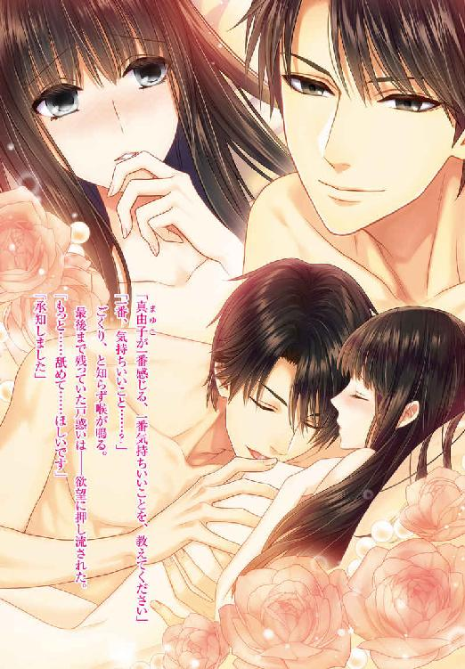

| 恋人(偽)契約でしたよね！？【SS付】【イラスト付】 ～お目付け役と甘いラブレッスン～ (チュールキス文庫) | |
| 山内詠 | |
| 株式会社ジュリアンパブリッシング (2016) | |

この物語はフィクションであり、実在の人物・団体・事件等とは、いっさい関係ありません。
イラスト・蔦森えん
恵まれているのに、これでは足りないと泣くのは、我が儘だと思っていた。
今この手の中にあるものはどれも容易く手に入るものではないのだから、それで十分だといつも自分に言い聞かせていた。
現代の日本でさえ、食べるものや住む場所に事欠く人もいるのだから、不自由していない立場の自分が不満を言うことなんて、許されないと思っていた。
それなのに。
「真由子」
ただ名前を囁かれただけで、自分がどれだけ求めていたのかが、わかってしまう。それどころか、温かな気持ちを絶え間なく次々に注ぎ込まれて、溺れてしまいそうだ。
受け止めきれずに零れ落ちた思いは、乾いた私の心を潤し、新たな感情を芽生えさせる。
あなたに出会わなければ、こんな気持ちは、知らなかった。
知らずにいたら、この幸福はなかった。
だけど知ってしまったから、これから不幸が待っている。
知らず頬を伝う滴を優しく拭われて、心が締め付けられる。
「真由子はたまに、明日世界が終わってしまうような、そんな顔をしますね」
彼が少し困った顔で微笑みながら、私の頬を撫でた。
これまでずっと、他人からどう見られるかを考え続けて生きてきた。だけど彼の前では自分がどんな顔をしているかが、どうしたことか、わからない。一番いい顔を見て欲しい相手であるというのに。
「そう、かしら」
頬を撫でる彼の手に甘えながら、ふと私の中に新たな願望が芽吹く。
本当に、明日世界が終わってしまえばいいのに。
だってそれなら私は彼とずっと一緒にいられる。この腕の中で全てを終わりに出来るのだ。
あまりにも甘く、あまりにも切ない明日を夢見て、私は眩暈を覚える。
絶対に、現実にはならない、ゆめまぼろし。
一緒のものを見て、同じ時間を過ごし、こうして素肌を合わせ、ぬくもりを分かち合い、隙間なく足を絡ませていても、私たちの間には絶望が横たわっている。それが堪らなく、悲しい。
私の胸に存在するこの闇が消えることはない。
「後悔していますか？」
「......いいえ」
まるで心の中を察したかのような問いかけに、私は小さく頭を振った。
ただ、もしも、の未来を考えることはあった。このぬくもりを知らなければ、優しい指に触れなければどうなっていただろう、と。
想像するまでもない。あらかじめ用意された道を歩む、安全だけれども閉塞感に満ちた、窮屈な未来が簡単に導き出される。
もちろんその未来を喉から手が出るほど望んでいる人もいるだろう。
けれど私にはどんなに恵まれていたとしても、どんな誉れがあろうとも、それが幸せであると、どうしても思えなかった。
だからきっと、過去に戻れたとしても私は何度だって彼の手を取ってしまうだろう。
それが、他人から見ればただの気の迷い、間違いだとしても。
「私もですよ。悔やむことなんて、何もない」
柔らかくて少しだけかさついた彼の唇が押し当てられ、私は応えるように音を立ててそれを吸った。この感触も、この味も、あなたの全てを、知ったことを後悔なんてない。
けれど、悲しい。
「真由子」
吐息と共に名を囁かれる。
ただそれだけで心は溢れんばかりに満たされるのに、同時に泣きたくなるのはどうしてだろう。......自らへの問いかけに、答えは簡単に返ってくる。
──この幸せが、永遠に続くものではないから。
「あぁ......」
肌を滑る指に、深くなる口付けに、私は思考を放棄する。
望まぬ未来のことなど、考えたくない。
今、この幸せにただ溺れたい。
私は彼の背に手を回し、火照り始めた肌を擦り寄せた。
ダイニングテーブルには、真由子が腕を振るった料理が並んでいた。
前菜は海老とアボカドをタルタルソースで和えたものに、スモークサーモン。
メインは紅茶でボイルした豚肉。
それにラタトゥイユ、キノコのマリネに自家製のピクルスを添えた。
カトラリーの銀器はぴかぴかに磨かれ、真っ白のナプキンと共にきちんと並べられていた。
ひとり暮らしを始めてひと月。
今夜、住吉真由子の元に初めての来客がある。
「これで、よし」
料理も飲み物も全て揃っている。ひとつひとつ指さして確認するごとに、心が浮き立つ。
誰かをもてなすために準備する、なんてこれまで実家で何度も経験してきたことである。
これまで一緒に住んでいた祖父母は人を招くことが好きだったから、真由子はいつもその手伝いをしていた。実際作った料理も慣れたいつものメニューだ。
それなのに以前よりもずっと楽しく感じられるのが不思議であった。
手伝いではなく、自分ひとりで全てを手配したからこそ、充実感を味わうことが出来るのかもしれない、と真由子は思う。
本当に小さな一歩だったけれど、踏み出してよかった。
「......思い切り羽を伸ばす経験は、必要よね」
鳥籠の中の鳥だってたまには外へ出てみたくなるものだ。
それがたとえ大空の下でなくとも。
自らが籠の鳥であると思い返すごとに小さな絶望を感じることもある。
しかしそれは本当の貧困を知らぬ者の傲慢でもあることも、またわかっていた。
見下ろしてもきりはなく、また見上げてもそれは同じだ。
誰もが自分の思い通りに生きられるわけではない。
全ての準備が整い一息ついたのを見計らったかのように、インターホンが客の訪れを告げる。
いつも彼女はタイミングがいい。
「念願のひとり暮らし、おめでとー！」
ドアを開けるなり、友人の小沢佑香が真由子に抱き付いてきた。
基本的に定時で仕事を終える真由子とは違い、メーカーで営業をしている佑香は残業が多い。だが今日は大急ぎで仕事を片付け、駆け付けてくれたのだ。
「ありがとう。佑香のおかげだよ」
真由子が祖父を説得する方法を考えてくれたのは、佑香だった。
「へっぽこ営業のやり方が、百戦錬磨のおじいさまに通用するなんて、自信ついちゃう」
佑香は片目を瞑りながら、芝居がかった様子で肩を竦める。
その仕草がなんともおかしくて、真由子はつい笑ってしまった。
この家で佑香を迎えることが出来るなんて、夢のようだ。手にした自由を噛み締めるように、真由子は友人をぎゅっと抱き返した。
祖父から何気なく差し出された、厚みのある封筒。それが、真由子にとって終わりの始まりだった。
中に入っているものが写真と釣書であろうことは、確認せずとも察しがついた。
そのふたつが示すものは──お見合い以外にはない。
「そろそろ、家庭に入る頃合いだろう」
祖父の信一郎は笑顔で真由子にそう、告げた。
口振りは提案であっても、実際のところは命令である。真由子が断るなどと、夢にも思っていないだろう。
いつかこんな日がくると、真由子にはわかっていた。
予想などではない。
冬の次は春が巡ってくるのと同じように、あらかじめ決まっていたことだ。まるで、この世の理の如く。
ただ、思っていたよりも少し早いわと、真由子は封筒を見つめながら思った。
真由子はメカトロニクス分野で日本を代表する総合重機企業、住吉重工の創業者一族の生まれだ。祖父は会長を務めるだけでなく、日本経済界の重鎮でもある。父と兄も同社の取締役だ。
そんな生まれであるから当然ではあるが、真由子は幼い頃から何一つ不自由のないどころか、人が羨む環境が与えられていた。
物やお金の量が、そのまま幸せであると換算するのであれば、であるが。
大学を卒業し、信一郎が会長を務める住吉重工に勤めて、三年。
今年真由子は二十五歳になった。
信一郎の感覚からすれば、三年、自由を許してやったというところであろう。
ところが四半世紀生きてきたというのに、真由子の手の中には、自ら掴んだものなど、何一つない。
唯一、働いて得た賃金がそれに当たるのかもしれない。
しかし、職そのものが信一郎から与えられたものなのだから、真由子が手にしたものとは素直に言い切れない。しかも金額は信一郎から与えられる小遣いよりも少額だ。
人の一生というものは、小さな選択の積み重ねである。
朝起きたら何をする、朝食は何を食べる、着る服はどれにする......というように、人は日々何かを選び、何を切り捨て、生きていく。
誰も選ぶことを特別なことだとは意識していない。
なぜなら、そうでなければ生きていけないのだから。
しかし真由子のこれまでの人生において、選択することなどほとんどなかった。
着るもの、食べるもの、果ては日々の習慣まで、真由子が選ぶ前に全て信一郎に決められていたからだ。幼い頃の他愛のない我が儘にまでそれは及んでいた。
信一郎は真由子にとっては敬愛する祖父であったが、同時に支配者でもあった。
これまでの人生は、信一郎の望む通りに生きてきたと言っても、過言ではない。
つと、肩から流れ落ちる黒髪に、触れる。
真夏でも透き通るほど白い肌に艶やかな黒髪。そして涼やかな目元と小づくりな唇、小柄で華奢な身体。
さらに育ちの良さから自然と醸し出されるおっとりとした控えめな雰囲気からか、真由子はよく日本人形に例えられる。
人形。
そう、真由子は祖父の可愛い可愛いお人形だった。
信一郎の支配は進学や習い事、生活態度にとどまらない。
一度も染めたことのないこの長い髪も、しているのかわからないほど薄い化粧も、上質ではあるけれど流行とは無縁のスーツも、祖父の好みに合わせたものだ。
もちろん信一郎に悪意などない。誰が見ても真由子は信一郎から溺愛される孫娘にしか見えないだろう。
真由子自身もその愛情を疑うなど考えたこともない。
信一郎からすれば、真由子が傷つかぬように、間違わぬように、大切に大切に真綿に包み、導いているだけ。支配しているつもりなど毛頭ないのだ。
己の全てが管理されていたことに気付いたのは、大学へ進学した時。
幼稚舎の頃から一緒に過ごしていた同級生ではなく、外部から進学してきた人たちと出会ったことがきっかけだった。
己の立ち振る舞いや服装が、そして考え方が同年代の若者たちの中では異質なものなのだと気付いたその時、真由子はある疑問を抱いてしまった。
普通とはなんだろう。
恵まれているとは、幸せとは、なんだろう、と。
なんの苦労も苦痛もない。
けれど望まずとも次から次へと与えられるだけの生活は、果たして健全であろうか。
自分で何も選べない生活、それは、幸せと呼べるだろうか、と。
「......わかりました。このお話、お受け致します」
真由子はにっこりと笑いながら、封筒を祖父へ向かって押し返した。
「なんだ、中を見ないのか」
少し拗ねたように眉を寄せた信一郎に、真由子は笑顔のまま続ける。
「おじいさまが選んでくださった方ですもの。素晴らしい方だってわかっておりますわ」
「おお、そうか。では顔合わせの日程を調整しなければな」
ここからが、勝負だ。
いつかくるこの日のことをずっと考えていた。
失敗は、許されない。
「ねえ、おじいさま。結婚する前に、ひとつだけお願いがあります」
「なんだ」
「私、ニューヨークへ行きたいの」
本当は、どこでもいい。
ただ縁もゆかりもない突拍子もない場所である方が、より効果的であるはず。
「旅行か？ そんなもの、結婚してからいくらでも行けるだろう」
逸る気持ちを抑えつつ、真由子は生まれて初めての交渉を仕掛けた。
「いいえ、一年ほど住んでみたいと思っているのです」
信一郎の顔が、途端に険しくなる。
「何馬鹿なこと言っておるのだ！」
急に声を荒らげられ、真由子の身体はびくりと竦んだ。
いつもこの声に、全てを阻まれてきた。
けれど、これは最初で最後のチャンスだ。逃げ出すわけには、いかない。
真由子は弱い自分を奮い立たせて、笑顔を保つ。
最初から反対されることは百も承知だ。
「私なりに、考えてのことです」
「余計なことなど考えずともよい！」
「いいえ、このままじゃ、いけないのです。ずっと優しいおじいさまに甘えて暮らしてきました。このままでは嫁してもなお、おじいさまの手を煩わせてしまうのではないかと、不安でたまらないのです」
「何も案ずることはない。これからは夫に助けてもらえばいいのだから」
あまりにも予想通りの答えに、ため息が出そうになる。
それは支配者の首がすげ換わるだけで、真由子からすれば、何も変わらない。
信一郎が選んだ相手が真由子の望む生活を与えてくれるとはどうしても考えられなかった。
だとすれば、真由子が自由を掴むのは、今しかない。
結婚し夫に従う前、なんの約束もしていない、今しか。
「でも、結婚したら妻として夫を支え、いずれ親となり子供を導いていかなければなりません。おじいさまの足元にも及ばないとはわかっておりますが、私もおじいさまがくださったように子供には沢山の愛情を与えてあげたい。そのために、自立したいのです」
「海外にいくことが自立になどなるものか！」
「なりますわ。これまでおじいさまが与えてくださった環境でずっと暮らしてまいりました。ですから、一度誰の力を借りることなく、ひとりで生活してみたいのです」
「ならばわざわざ海外でなくとも構わんだろう」
「では、国内でなら、お許し頂けるのですね！」
「なっ」
「ありがとうございます！ おじいさま、大好き！」
真由子は大袈裟に喜ぶなり、信一郎に抱き付いた。無邪気に甘えてしまえば、祖父は強く出られないとわかっているからこその行動である。
「......仕方あるまい」
信一郎は失言に気付くと一瞬顔を顰めたが、発言を取り消そうとはしなかった。
こうして、真由子の最初で最後のささやかな冒険が始まったのだ。
一度でいいから、ひとり暮らしをしてみたい。
そう望んだ真由子に佑香が伝授したのは「ドア・イン・ザ・フェイス」と呼ばれる、ビジネスの交渉術としては非常にポピュラーな方法である。最初に大きな要求をした後、小さな要求へと譲歩すると見せかけて自分の要求を承諾するように相手を導く、という手法だ。
最初に海外留学、それも一年くらい行きたいとお願いし、その後国内でひとり暮らししたいと持っていけばいい──と詳細まで考えてくれた。
交渉のタイミングはたった一度だと、何度も念を押されていた。
結婚という人生における大きな変化の直前。
未来を担保に今の自由を引き寄せろ、と。
「本当にありがとう。感謝してもしきれないわ」
「私はほんのちょっぴり、アドバイスしただけ。この結果は真由子が頑張った成果よ」
「そんなことないわ。私、佑香にはいつも助けてもらってばかりね」
佑香との出会いは大学の時、たまたま真由子が持っていた本を佑香が目に止め、話しかけたのが始まりだった。
お互い家庭環境も性格も全く違っていたけれど、不思議と馬が合った。
小麦色の肌と明るい髪色に目鼻立ちがはっきりとした派手な容貌。そしてすらりと伸びた手足が相まって、佑香は有名な外国の着せ替え人形を思わせる派手な美人だ。
肌や髪の色はずっと打ち込んでいたテニスによるもので、その腕前は国体に出場するほどである。
今は営業という職業柄、落ち着いたスーツ姿であることが多いけれど、彼女の持つ溌剌とした雰囲気は全く損なわれていない。
「なにはともあれ、祝杯をあげよう」
そう言うと佑香は手に持っていた鞄からワインを取り出して見せた。
真由子も好きな銘柄だ。
お酒の趣味も同じであることが、また嬉しい。
「そのワイン、私も用意していたのよ」
「あらら、かぶっちゃった？ まあ、夜は長いからね、思う存分飲みましょ！」
これまでは真由子に門限があったため、ふたりで食事をしていても、ゆっくりお酒を楽しむということは難しかった。
しかしひとり暮らしを始めた今、時間など気にしなくていい──はずだったのだが。
「それが......」
真由子の言葉を遮るように、インターホンが鳴る。
ああ、きてしまった。真由子は小さくため息を吐いた。
「あれ？ 今日って私だけじゃなくて、他の人もくるの？」
「いいえ、私と佑香だけよ」
祖父の愛という名の束縛に少し息苦しさを覚えつつ、真由子は佑香から離れ、扉を開けた。
「失礼致します。来客の確認に参りました」
「......ご苦労様です」
ドアを開けた先にいたのは、スーツ姿の男性だった。
真由子にはこのひと月でもはや見慣れてしまった相手である。......何しろ毎日顔を合わせるのだから。
黒目の大きな目とふっくらとした涙袋そして太い眉からは、一見甘さが感じられる。けれどその瞳に宿る光はぎらりと鋭い。
やや長めの髪を軽く後ろに撫で付け、スーツ姿であるというのに一目で鍛えているとわかる身体の厚さや見上げてしまうほどの高い身長から醸し出されているのは、ある種の威圧感である。
整った容貌に纏う物騒な雰囲気、それらは酷くアンバランスだ。
さらに顔に浮かんでいるのが面のように隙のない笑みであるがゆえに、全くその心情を読み取ることが出来ず、酷く胡散臭い人間にも見える。
「......どなた？」
来客の確認、という言葉に不信感を抱いたのだろう。やや硬い声で佑香が問いかけた。
すると男性は佑香に笑顔のまま応える。
「小沢佑香さんですね。真由子さんと大学からお付き合いしているご友人の」
真由子が彼に事前に伝えたのは、大学時代からの友人が泊まりにくることだけである。
しかし男の口から佑香の名が迷いなく発せられた。すなわち、事前に調べられていたということなのだろう。
祖父に己の交友関係を把握されていることは承知していたが、まさかここまで徹底されていたとは思わず、真由子は佑香に申し訳なくて俯くしかない。
「そうですけど......なんで私のこと知っているんですか？」
戸惑ったような佑香に、彼はお手本のような礼儀正しさで名刺を差し出した。
「私、中原英悦と申します。真由子さんの身の回りのお世話を仰せつかっております」
「ちょっと真由子、もしかして」
それだけで全ての事情を察した聡い佑香に、真由子が答えられることは多くない。
「......おじいさまが、どうしてもって」
祖父の信一郎は真由子のひとり暮らしを許しはしたが、いくつかの条件を付けた。
その中の一つが、真由子の身の回りを守る者を近くに置くこと、だった。
そうして引き合わされたのがこの中原である。
彼は真由子の隣の部屋に住み、真由子の部屋に人の出入りがあった場合、こうして確認のために訪れることになっていた。
「本日小沢さんはこちらにお泊まりになられるとのことで、よろしいでしょうか？」
「......ええ」
「承知致しました。では明日どこかにお出かけになる際は、ご連絡お願い致します」
中原はふたりに笑顔のまま頭を下げ、踵を返す。
あまり深く追求されなかったことに、真由子は密かに胸を撫で下ろした。
「ちょっと、待って。中原さん、でしたよね」
ところが佑香が中原を引き留める。
「ええ、何か？」
「真由子とこれから飲むんですけど、中原さんも一緒にいかがですか？ 真由子の作ってくれる料理、とっても美味しいのよ」
手に持ったままになっていたワインボトルを掲げながらあっけらかんと誘う佑香に、中原の笑顔が崩れ、僅かだが訝しがるように眉を寄せた。
真由子はというと、唐突すぎる佑香の申し出に、ただ驚くばかりだ。
しかし、佑香が理由もなく初対面の男性を友人同士の食事に引っ張り込む人間ではないということはわかっていた。
だから何か事情があるのだろうと、ふたりのやりとりを見守ることにした。
いつも料理は多めに準備しているから、もうひとり増えるくらいは全く構わない。
「ありがたいお誘いですが、私、業務中ですので」
すぐさま表情を整え、当然ではあるが中原は断りの文句を口にした。
ところがこれも佑香にとっては想定の範囲内だったようだ。
「では、こう言い換えればいいかしら。中原さんの業務に関係するお話を色々伺いたいの」
「......業務に関することでしたら」
中原は僅かな困惑を滲ませながらも、今度は断らなかった。
乾杯を済ませるなり、佑香は中原への口撃を開始した。
「中原さんはおいくつ？」
「今年三十二になります」
「ふぅん、その年齢で私たちみたいな小娘のお守りを任されるって、大変ね」
佑香の口元に浮かぶ冷たい笑いを見たら、真由子はその態度を窘めることが出来なかった。長い付き合いだからわかる──彼女はかなり怒っていた。
「やりがいのあるお仕事だと思っております」
完全なる八つ当たりを受けても、中原は全く動じなかった。
整った顔には隙のない笑顔がきっちりと張り付いている。
「そのやりがいのあるお仕事の内容を伺ってもよろしいかしら？」
「一言で申し上げれば、真由子さんのボディガード、でしょうか」
「ボディガード？ ということは元ＳＰだとか、御大層な経歴がおありで？」
「残念ながら以前の勤め先は警察ではございません」
「あら、どちら？」
「......自衛隊に勤務しておりました」
真由子も知らなかった中原の経歴が明らかになる。警察よりもずっと荒事に慣れた職業。
「わぁお、肉体派」
友人の棘のある口調にハラハラしながらも、真由子は口を挟めずにいた。
中原とは真由子がひとり暮らしを始めてからひと月ほど付き合いがあったが、彼がどんな人物であるのか知ろうともしなかったことに、今更ながら気付いたからだ。
彼の詳細を把握する必要があるのは雇い主である祖父であって、真由子ではない。
知る必要がないことは、知らなくていい。
幼い頃からそうして育てられてきた真由子にとって、疑問を抱くことは祖父への反意だという強烈な刷り込みがある。
未だ、その思考からは抜け出せていないのだ。
「なるほど、ご立派な体はそこで培われたわけね。それで、ボディガードって具体的に何をしているのかしら？ 真由子の仕事中もひっつきまわっているわけ？」
「いいえ。真由子さんが就業されている間は私も別の仕事をしております」
そういえば彼の職場はどこだっただろう。
毎日地下の駐車場で見送られ、迎えられるのみで、中原がその後どこで何をしているのか、真由子は知らない。
「基本的には会社までの送迎と休日の外出のお供をさせて頂いております」
外出のお供、という言葉に、佑香の眉が釣り上がる。
「はぁ？ それじゃ中原さんってば、真由子の外出先までついてくるの？」
「ええ、同行させて頂いております」
食事をしつつ中原に嫌みな口調で質問をぶつけていた佑香は、その返答を聞くなり驚いたように身を乗り出した。
「ちょっと待って、そんなの軟禁されているのと変わらないじゃない！」
「軟禁なんて、私は別にどこかに閉じ込められているわけじゃないわ」
声を荒らげた佑香を宥めるように真由子は言った。
しかし佑香の勢いは止まらない。
「ひとりでどこにも行けないなんて、閉じ込められているのと同じことよ！」
「でもこの条件を守れないなら、ひとり暮らしは認められないって、おじい様が......」
正直、条件を突き付けられた時、真由子は迷った。
これまで許されていた公共交通機関を利用してのひとりでの行動が、完全に禁じられてしまったのだ。
大人になったことでようやく得た僅かな自由が奪われ、ただ暮らす場所が変わるだけだということに気付けぬほど、真由子は愚かではない。
けれど条件を突き付けてきた祖父の顔には、これが精一杯の譲歩だと大きく書かれていた。
妥協すべきところはしなければ、全てがご破算となってしまう。
僅かな自由と引き換えに、真由子は友人と気兼ねない時間を過ごすことを選んだのだった。
「ひとり暮らしの意味、なかったわね。......ごめん、真由子」
佑香はひとり暮らしをすることで、真由子がもう少し自由を得られると思っていたのだろう。悔しそうに唇を噛みながら頭を下げる。
「謝らないで。佑香のおかげでこうして楽しい時間を過ごせているのだもの」
「......会社の送迎に、外出先への同行、さらに隣に人を住まわせての来客の確認......ホント、おじい様は真由子を一体何歳だと思っているのかしらね」
友人の心中を察した真由子が空いたグラスにワインを注ぐと、佑香はそのまま一息に飲み干してしまう。
飲まねばやっていられない、そんな表情で。
ここまで祖父が真由子の身を案ずるのには当然理由がある。
真由子がまだ幼稚舎に通っていた頃、送迎を担当していた家政婦と運転手が営利目的誘拐を企てるという事件があった。もちろん計画は早期に破たんし、真由子はほぼ無傷で家に戻ってきた。
真由子本人からすれば、優しかったばあやと運転手さんが急にいなくなってしまったという記憶しか残っていない。
しかしそれ以降、祖父の心配が尽きることはなくなってしまった。
とっくに成人した今となっても。
「ねえ、外出先についてくるって、例えば今みたいに友人との集まりでもついてくるの？」
「はい、同席するようにと言われております」
「今度私が主催する、異業種交流会に真由子を誘おうと思っているのですけれど、こないでくださらない？」
にっこりと笑いながら告げる佑香の口調は、慇懃無礼を絵に描いたようなものだった。
聞いている真由子がハラハラしてしまうほど攻撃的だ。
「申し訳ありませんが、例外はございません」
しかし全く動じないどころか、ちっとも申し訳なくなさそうに言った中原に、佑香は「そうよね」と肩を落とした。
「ああ、残念！ 真由子に紹介したい人がいたのに！」
佑香が拗ねたように呟いた。
けれど真由子には佑香が残念そうにする理由が良くわからなかった。
「中原さんが一緒では、どうしていけないの？」
紹介するだけなら他に誰がいようと関係ないのではないか。
すると佑香はため息を吐きながら種明かしをする。
「駄目に決まっているじゃない。合コンに男連れでくる女がいるわけがないでしょう？」
「それは......私が同行しても参加は難しいかと」
少し困ったように微笑みながら、中原が律儀に答える。
「色んな職業の人が集まっているんだから、異業種交流会でも間違ってないわよ」
ものは言いようである。
「なんで急に合コンなの？」
往生際の悪い佑香に真由子が不思議そうに問いかけた。
さすがに合コンがどういったものかくらいは、真由子も知っている。
だからこそ祖父が合コンの参加を絶対に許さないことは、いちいちお伺いを立てずともわかった。
佑香だってそれは重々承知しているはずだ。
加えてこれまで真由子は佑香から合コンの話を聞いたことはあれど、誘われたことは一度もない。
「藤原敬子、覚えている？」
唐突に佑香が名前を挙げたのは、大学の同窓生の名前だった。
真由子にとっては幼稚舎から同じ学校に通っていた友人でもある。
彼女は子供の頃から決められていた相手と、大学を卒業後すぐに結婚している。
似た家庭環境から学生時代はそれなりに親しく付き合っていたものの、結婚した後は自然と疎遠になってしまい、今では季節の挨拶をやりとりする程度だ。
「ええもちろん。でも今は藤原さんではなくて、高田さんよ」
「その様子じゃ何も知らないのね」
佑香はなぜか言いづらそうにワインで唇を湿らせた。
「なあに？ もしかしてお子さんでも生まれるの？」
既婚の友人について何か知らせがあるとすれば、妊娠出産であろう。
それならお祝いを用意しなければ、と言った真由子に佑香は渋い顔で口を開いた。
「まあ、子供は生まれるらしいんだけど......ついこの間、藤原に戻ったのよ」
「あら、ご主人が改姓する必要あったかしら。高田さんには弟さんがいらっしゃるはずだし」
首を傾げた真由子に、佑香は苦笑しながらもう少し踏み込んだ表現で告げる。
「離婚したのよ」
「......えっ、そんな！」
あり得ない、と真由子は思わず口元を手で覆った。
藤原敬子は佑香と違い、真由子にとてもよく似た友人だった。
上場企業の重役を親に持ち、その親が敷いたレールを間違いなく進む以外に生き方を知らないし、知る必要のない類の人間、という意味で。
真由子の常識からすれば、そんな彼女が離婚など、あり得ない。
「しかもその理由が、藤原さんの浮気」
「えぇっ......！」
ましてや、浮気なんて、言語道断だ。
「私も聞いた時はびっくりしちゃったわよ。あの藤原さんが、ってね」
「どうして......？」
「藤原さん、歌舞伎好きだったでしょ？」
「ええ、以前何度かご一緒したことがあるわ」
「その延長で舞台にハマっちゃったらしくて、ある若手俳優にいれあげて援助しているうちに、まあ、男と女だからそういうことになって。それで、子供が、出来ちゃったと。それが......旦那さんが仕事でちょうど日本を離れている時期で、言い逃れ出来なかったみたい」
まさに自分自身が浮気の動かぬ証拠になってしまったわけである。
旧友のあまりの変わりように真由子は絶句してしまう。
たった三年会わない間に、彼女に何があったのか。
「藤原さんの話聞いて、これは真由子もまずいなと思ったのよ」
「......何がまずいの？」
「男性と全く触れ合わずに、見合い結婚しちゃうのがよ」
そう口にした後、佑香は慌てて付け足すように続ける。
「勘違いしないでね。お見合い自体が駄目ってわけじゃないの。他を知らずにそれだけで決めるのがよくないって思うのよ」
確かに真由子は異性とふたりきりで出かけたことはこれまで一度もない。
それ以前に家族以外の男性との触れ合いなど、ほとんどない。
そもそも大学に入学するまで毎日学校まで送迎され、友人との付き合いも制限されていたのだ。男女交際など出来るはずがなかった。
「人ってね、駄目だ駄目だって言われるものが欲しくなっちゃうものじゃない。手に入らないからこそ、執着する。......藤原さんもそうだったんじゃないかなって。初めての恋に、舞い上がって突っ走っちゃったのかなって」
「でも、それがどうして合コンに繋がるのかしら？」
「同年代の男と飲んだり遊んだりっていうのを経験しとくのも、アリかなーって。ほら、知らないからこそ、ずぶずぶ深みにハマっちゃうこともあるからね。何事も経験よ」
「......そういうお話を聞いてしまいますと、小沢さんが主宰される集まりとやらに、私が同行しないわけにはいきませんね」
中原が苦笑いしながら言った。男遊びのための集まりだと断言されれば当然である。
「はいはい、わかってますって。......でも中原さん、真由子って不憫だと思わない？」
不憫、という言葉があまりにも似合わない真由子を指さし、佑香は続ける。
「この恋愛結婚が至上の平成生まれなのに、まともに恋も知らぬままにおじい様が見繕ってきた男と結婚するのよ？ 昭和どころか戦前まで逆戻りもいいとこよ」
「ご本人が納得しているのであれば、よろしいんじゃないでしょうか？」
「うわー、優等生なお答えありがとう！」
「......ごめんね、佑香。もしおじい様が許可してくださっても、合コンはちょっと遠慮するわ」
「だから異業種交流会って名目で連れて行こうと思ったのにぃー！ もう、お目付け役がいるとか聞いてないわっ！」
佑香は不貞腐れたように唇を尖らせ、ぶつぶつと不満を口にする。
「あー、どこかにいい男いないかしら。真由子のおじい様も公認で、真由子に下手な手出ししないで、優しくエスコートしてくれる素敵なイケメン......あっ！」
唐突に佑香が何かに気付いたように声を上げた。
「いるじゃない、ちょうどぴったりな人が！」
そう言って佑香が指さしたのは、目の前に座っている他でもない、中原だった。
「ちょっと佑香、何言っているの」
「だってこれ以上の適任いないじゃない。イケメンだし、家隣だし、出かける時はどこにでもついてきてくれるわけだし！ 何よりおじい様のお墨付きアリ！」
「もういい加減にして。中原さんに失礼よ」
さすがに悪ふざけもすぎる、と真由子は友人を窘める。
「私は、構いませんよ」
ところが中原は何食わぬ顔であっさりと承諾を返してきた。
「本当にいいの!?」
佑香が喜びを隠しきれない様子で、椅子から立ち上がる。
「ええ。むしろこちらとしても助かりますし」
「助かる......とは、どういうことでしょう？」
真由子は訝しげに中原に問いかけた。
社員としての業務以外に運転手として送迎や外出に付き合わせているのに、今以上に負担が増える方が助かるというのは、腑に落ちない。
「隠れて男性と出かけたりされるよりは、私がお付き合いした方が安全ですからね。こちらとしても妨害みたいな真似はしたくありませんし」
さらりと教えられた答えには恐ろしい可能性の示唆も含まれていた。
そんな中原に佑香はわざとらしくにやりと笑う。
合コンまではいかなくとも中原を出し抜いて出かける程度のことは考えていたのだろう。
「なかなか話がわかるじゃない」
「お褒めにあずかり恐縮です」
そう続けた中原のその表情は、先程までの張り付けたような笑顔とは違い、人間味が感じられるものだった。
まるで、面白そうな悪戯を思いついた子供のような。
「さすがに仕事とはいえ、合コンに女性側のお目付け役でいくなんて、考えただけでウンザリですよ」
女の中に男がひとりも相当に気まずいが、合コンのお目付け役など気まずいどころか、いるだけでその場をぶち壊すには十分である。
「なるほど、利害一致ってわけね。じゃあ何も問題ないわ！」
中原の表情を見た佑香は楽しそうに親指を立てて見せる。
「そうだ！ 明日休みだし、早速ふたりで出かけてみたら？」
「明日、ですか。では上野の美術館はいかがですか。確か今真由子さんの好みそうな展示があったかと......」
「却下！」
中原の提案を佑香が一刀両断する。
「どうして美術館は駄目なの？」
真由子の趣味は美術や音楽鑑賞である。中原の提案は渡りに船だ。
「真由子がいつも行っているようなところは却下。もっとデートらしい場所提案してください。はい、やり直し！」
「そう言われますと、難しいですね」
少し困ったように、中原が考え込む。
こんなに色んな表情をする人だっただろうか、と真由子は密かに驚いていた。
一ヶ月毎日顔を合わせていたというのに、真由子は彼の胡散臭い笑顔しか知らなかった。
「中原さんの行きたい場所とかでも構わないのよ？ だいたい男子たるものデートの行き先のストックくらいあるでしょうが」
「正直、真由子さんのような若い女性が喜んでくださるような場所には、あまり詳しくなくて」
「あなたまだ三十二でしょ？ 何そのおっさん臭い言い分。でもまあそういうことなら、私が一からプラン考えてあげましょう！」
「よろしくお願い致します」
任せなさい、とばかりに佑香が己の胸を叩くと、中原は軽く頭を下げる。
「ち、ちょっと、佑香」
肝心の真由子を置き去りにどんどん話が進んでいく。
「男の人と一緒に出かけるなんて、私出来ないわ」
まだ正式に結婚話が進んでいるわけではないが、誤解されるような真似をするのはよくない。
「あら、その文句は私じゃなくておじい様に言うべきよ。お目付け役に中原さんを選んだのはどなただったかしら？」
「でも......」
「どうせひとりで出かけても中原さんがついてくるんだから、なんの問題にもならないわよ。ただついてくるくらいなら、きちんとエスコートしてもらった方が真由子にとってもいいことじゃない。せっかくひとり暮らしを始めたのだから、行ったことのないところに行って、したことのないことを経験するべきよ！」
元々口で真由子が佑香に敵うはずもなく、こうなるともう佑香の独壇場である。
「大丈夫、全部私に任せといて！」
「え、ええ」
友人の迫力に押されつつも頷いた真由子を、中原は面白そうに眺めていた。
佑香と中原が立てたプランは、数年前に開業した日本一の電波塔であるスカイツリーを見学した後、複合商業施設内にある水族館を見学するというものだった。
真由子はあまり人混みが得意でなく、新しいもの好きでもない。
そのため、開業するなり有名観光地になったその場所に、まだ足を運んだことはなかった。
「いい？ 車じゃなくて電車で行くのよ」
翌日、佑香は真由子へ子供に言い含めるように念を押した。
あくまでごくごく普通の恋人同士のような行動をさせることにこだわりがあるらしい。
「でもおじい様が出かける時は車を使うようにって......」
「あの辺りは道も狭いし、駐車場はないし、駅に直結しているから、電車でいく方がいいわよ。お目付け役が一緒なんだし、そこまでおじい様に義理立てしなくってもいいでしょ」
「......私はよくても、中原さんがよくないわ。おじい様の言いつけを破ったと知れたら、中原さんにご迷惑がかかってしまうもの」
自分が叱責されるのは構わない。
しかし他の人を巻き込むのは全くの別問題だ。
「大丈夫よ。だってそのおじい様に報告するのは中原さんだもの。車にこだわるならバスで行けばいいじゃない」
確かに車で出かけろとは命じられたが、車の種類まで指定されているわけではない。
屁理屈ではあるが抜け道をあっさり提示され、真由子の反論は封じられてしまう。
どうしよう。
ぎゅっと唇を引き結んだ真由子に佑香は不意に真剣な眼差しで言った。
「真由子がどうしても嫌っていうなら、止めればいい。でも、そうじゃないでしょう？」
コレが証拠、と佑香は真由子の胸元を指さす。
その先にはイルカをモチーフにしたブローチが輝いていた。
裕福な環境で育ってはいるが、真由子は普段あまり大袈裟な宝飾品を身につけない。
しかるべき場面で身を飾る品はきちんと持っているが、普段から華美な格好をするのは控えめな真由子の性格にはそぐわないのだ。
そんな中、真由子が唯一好んで集めているのがブローチや飾りピンだった。
祖母から譲られた高価な品から素人作家のハンドメイドの作品まで、幅広く収集している。
「今日いく水族館に合わせてコーディネイトしたんでしょ？ 可愛い！」
「......うん」
佑香には隠し事なんて出来ないな、と真由子は思う。
嫌なわけではない。
昨夜はどうなることかと胸が騒いでなかなか寝付けなかったほどだ。
デート、という響きに、心が躍らぬ女性は少ないだろう。ましてや、好きあった相手ではないにしろ、一度もそれを経験していない身なら、なおさら。
藤原敬子の恋の顛末を知り、佑香は何も知らぬ真由子に男女交際の真似事をさせた方がいいと言った。
しかし真由子が受けた印象は全く逆だった。
簡単に全てを投げ出してしまえるのなら、知らない方がいいのではないか、と思ったのだ。
一言で今の心境を表すのなら、怖い、というのが最も近いように感じる。
未知の世界に触れたいとあんなに思っていたのに、いざ目の前になると手を伸ばせない。
「挑戦する前から諦めちゃう、真由子の悪い癖よ」
「でも......」
「せっかく一歩踏み出したんだから、ちょっと違う世界を体験しなきゃ。このままこの家に閉じ込もっていても、なんにも変わらないよ？」
「......そうね、頑張ってみる」
自分は変わるために、祖父の元から飛び立ったのだ。
足には鎖がついたままではあるが、少しでも遠くに行きたいという気持ちは、嘘ではない。
そんなやりとりをしていると、インターホンが来客を告げる。
中原が迎えにきたようだ。
「おはようございます。本日はよろしくお願い致します」
扉を開けると、中原は折り目正しく頭を下げた。
昨夜の「デートなんだからスーツは駄目」という佑香のお達し通り、私服姿だ。そのせいか、中原の雰囲気は昨日とだいぶ違っている。
黒のニットジャケットに生成りのシャツ、そして濃紺のジーンズというラフな服装からか、物騒な雰囲気はあまり感じられない。
さらに撫で付けられていた髪は柔らかく額に流れ、昨日までなかった眼鏡のせいか、瞳に宿る光の鋭さがいくらか和らいでいる。
「それにしても私服は全然雰囲気違うのね」
「変でしたか？」
「うーん、シャツはパンツにインしないで外に出した方がよくない？」
つい、と佑香は中原の裾がしっかりジーンズに入れられたシャツを引っ張る。
「そうですか？ あまりだらしないのはどうかと」
「でもまあ、このくらいの方が真由子とは合うかも」
ね、と話を振られても、今時のファッションにあまり明るくない真由子は「そうね」と頷くことしか出来ない。
引き合いに出された真由子の方はというと、ブラウスにカーディガン、そして膝丈のスカートといういつもと全く同じ、シンプルな装いであった。
唯一の彩りといえば、胸元に光るブローチだけ。
もっともその服は、若者たちが好むファストファッションなどではなく、祖母から教えられた老舗婦人服店の上質な品である。
「では、参りましょうか」
「......はい」
これまで中原は真由子の少し後を付いてくるのが常だった。
けれど今日は、隣に並んで一緒に歩いていくのだ。
昨日までとはたったそれだけの違いなのに、真由子には中原が全く別人のように思えた。
緊張を隠し切れない真由子と、了承しておきながら少々態度に戸惑いを滲ませる中原を見て、佑香が唸る。
「なぁんか硬いわよねぇ、ふたりとも。手でも繋いじゃう？」
「......それはさすがに度がすぎるかと」
やんわりと中原が咎めると、佑香も「それもそうね」と同意する。
「まあ、初めてのデートだし、このくらいぎこちないのもアリかもね。中原さん、ちゃんと真由子を恋人だと思ってエスコートしてあげてね！」
「承知致しました」
「じゃ、いってらっしゃーい！」
友人に見送られ、真由子の初めてのデートが始まった。
東京駅からは目的地まで直通のバスが運転されている。しかしやはり移動時間を考えると、乗り換えはあるが、佑香の言う通り電車でいくのが一番早く着くルートだった。
週末、観光地へと向かう電車はほどよく混雑していて、席に空きはない。
「大丈夫ですか？」
ぐっと手を伸ばしてつり革に掴まった真由子の様子を、中原がそっと窺ってくる。
どうやら中原は真由子が電車に立って乗るのすら危ういお嬢様だと思っているらしい。
「実家にいた頃は毎日電車で通勤しておりましたもの。このくらい平気です」
「大変失礼致しました。お身体が弱いとお聞きしておりましたので」
「......子供の頃の話です。近頃は風邪もひいておりませんわ」
「左様ですか。......でも、こちらの方が楽だと思いますよ」
言うなり中原はそっとドア近くの手すりへと真由子を導いた。
どうやらつり革に掴まるのに少々無理をしていたことには、気付かれていたらしい。
真由子に限らず、小柄な女性はつり革に掴まるのはなかなか大変だ。
「ありがとうございます」
背の高い中原だと、つり革に掴まっていても腕が余っているようにすら見える。
手が大きいわ、と真由子は思った。大きくて無骨な、男の人の手だ。
「友人がご迷惑をおかけして、申し訳ありません」
およそひと月ぶりの電車に揺られながら、真由子は中原に友人の非礼を詫びた。
「迷惑ではありませんよ。......正直驚きはしましたけども」
そう言うと、中原はふっと相好を崩した。
「いいご友人ですね」
「ええ、私には勿体ないくらい」
「少々、独り合点がすぎるきらいはありそうですが」
肩を竦めるようにして言う中原に、真由子も自然と笑顔になっていた。
「私と佑香、全然タイプが違うから驚かれたのではありませんか？」
「それは否定出来ませんね」
確かに佑香の言う通り、なかなか話のわかる人のようだ。
「私たち学生の頃、同級生から『オセロ』と呼ばれていました。それくらい、正反対って意味ですけど」
背が高く元々色黒な上にテニスで真っ黒に日焼けしていた佑香と、小柄で血管が透けて見えそうなほど白い肌の持ち主である真由子。
まるっきり正反対な外見は、まさに凸凹コンビならぬ、白黒コンビである。
人伝に聞いた時は言い得て妙だとふたりで笑ってしまった。
「行動とか考え方だとかは本当に全然違ったのだけれど、自分の足りない部分を補い合うみたいに、不思議と相性が良くて」
もしも佑香が男の人だったら、恋をしていたかもしれない。
それくらい、真由子にとって佑香は大切な存在だった。
「今回もちょっと強引でしたけれど、私のことを考えた結果だと思うのです」
「そうでしょうね」
今日のデートコースをああでもない、こうでもないと熱心に考えていた姿を見れば、佑香に何かよからぬ思惑があるとは到底考えられない。
真由子に素敵な思い出を作らせてあげたい。目的などそれだけであろう。
「その、中原さんは私の我が儘に付き合ってくださって、本当によろしいのですか？」
ずっと引っかかっていたことを、戸惑いながら尋ねる。
「休日に会いたい方がいらっしゃるのでは？」
真由子からすればどこか怪しげな笑顔の印象が強かったが、中原の容姿は世間一般的に優れている部類に入る。年齢から考えても、親しく付き合う女性がいても不思議はない。
「ご安心ください。私は独身ですし、現在交際している相手もおりません」
そう言った後、中原は思い出したかのように「失礼、おりました」と訂正してきた。
「決まったお相手がいらっしゃるのなら、こんなことは止めましょう」
所詮は真由子の我が儘だ。
それに付き合わせるのは親しい友人なら兎も角、中原には迷惑以外の何物でもないはず。
「止めませんよ。何しろ今一緒にいますからね」
「えっ......？」
思わず周囲を見渡してしまった真由子の上から、堪えたような笑い声が降ってくる。
意味がわからず声の主を仰ぎ見ると、優しい眼差しが真由子に向けられる。
「今の私の恋人は、真由子さんですよ」
「......じ、冗談がすぎます」
中原の予想外の言葉に、真由子は自分の頬が熱くなるのを感じた。
こういう会話は、全く不得手である。
佑香であれば上手い返しが瞬時に思い付いただろうが。
「恋人だと思ってエスコートするように。小沢さんからのお達しですよ」
お忘れになりましたか？ と問われて、佑香の言葉を思い出す。
「あれは、ものの例えでしょう？」
「せっかくですから週末はこうして恋人気分で出かけましょう。その方が楽しいですよ」
「そうかしら？」
「少なくとも私は楽しい。何しろ仕事でこんな素敵な女性とデート出来るんですからね」
真正面から褒められると、お世辞だとわかっていても、なんだか面はゆい。
「本当に構わないのですか？」
つい念を押すように尋ねると、中原は少しだけ困ったように笑って言った。
「正直、女性の後を黙ってついて歩くよりは、隣を歩く方が男としては格好がつきますので」
付け加えられたお目付け役の思わぬ本音に、真由子は笑ってしまう。
これまで新居のものを購入するために何度も一緒に出かけていた。
その際中原は必要な時以外は話さず、荷物を持ってただ真由子の後をついてくるだけであったが、どうやら居心地の悪い思いをしていたらしい。
「ごめんなさい、こんなお仕事をさせてしまって」
申し訳なさで思わず真由子は項垂れた。
中原とて会長の孫のお守りなんぞをするために、住吉重工に入社したわけではないだろう。
「そこはお気になさらず。先程も言いましたように、私も楽しんでおりますから」
中原の言葉に、少しだけ安心する。
そしてようやくこの関係を自分も楽しもうという気持ちになってきた。
「では恋人......はちょっと抵抗があるので、まずはお友達、でよろしいかしら？」
何しろ真由子は全くの未経験者である。さすがにいきなり恋人は戸惑ってしまう。
「わかりました」
中原は微笑みながら快諾してくれた。
スカイツリーに着くまでの間だけで、真由子の中原という人間に対する印象はだいぶ変わった。もしかしたら中原にとってもそれは同じであったかもしれない。
これまでのふたりの関係には不文律が存在した。
直接ではないにしろ真由子は雇用者であり、中原は被雇用者で、明らかに立場が違った。
人を使うことに慣れた祖父母に育てられたこともあり、真由子は金銭を支払いサービスをしてもらうことに全く抵抗はない。
だからこれまで中原に申し訳ないという気持ちを抱くことなどなかったのである。
しかし、行動そのものに大きな変化はないのに、今は中原の立場や気持ちを慮るようになっている。
この変化は真由子にとって非常に大きなものであった。
「そんなに混んでいないのですね」
チケットカウンターへと向かいながら、真由子が呟く。
もちろん閑散としているわけではないが、チケットを求める人の列は想像していたよりもずっと短い。
「開業間もない頃は酷い混雑でしたけれど、今は時間を選べば大丈夫ですよ」
中原は展望台への入場券をオンラインで予約していたため、発券に手間取ることはなくスムーズにエレベーターへと案内された。
「一分足らずで展望デッキへ着くそうですよ」
「まぁ、すごいスピードですね」
業務用としては日本一の昇降速度を誇るエレベーターは、内装も美しかった。係員の説明によると四基あるエレベーターはそれぞれ春夏秋冬、四季を表現しているのだという。
ふたりが乗り込んだものは「夏」をモチーフにしており、江戸切子で墨田川に打ち上げられた花火が美しく描かれていた。
照明が落とされた閉鎖空間の中、江戸切子の鮮やかな色彩が浮かび上がる。
「綺麗......」
真由子が思わず感嘆の声を漏らす。他の乗客も同様に美しい花火に見惚れていた。
しかしそんな鑑賞会は、あっという間に終了してしまう。
「こんにちは、ようこそいらっしゃいました！ 順路は右手方向でございます」
係員の誘導に従って進むと、目の前には東京の大パノラマが広がっていた。
恐る恐る窓に近付いて見下ろしてみると、良く晴れた午前中という時間がよかったのか、靄もなく、遥か遠くまで見渡すことが出来る。
「なんだか、現実感があまりないですね。作り物みたい」
ここまで高さがあると高所への恐怖は薄れ、映像を眺めているような気分になってしまう。
「すみません、写真お願いしてもいいですか？」
しばらくふたりで静かに景色を眺めていると、そばにいたカップルが声をかけてきた。
「いいですよ」
中原が応じている間に真由子は周りを見渡す。
すると皆携帯やカメラを手に、そこかしこで記念撮影に興じていた。
「こういう場所に来る時は、カメラを持って来るものなのでしょうか？」
真由子にとって写真とはしかるべき場所でプロに撮影してもらうものである。
大学時代、友人とスナップ写真やプリントシールを撮ったことはある。しかしいずれも自主的にではなく誘われたものだ。
身近な撮影ツールであるはずの携帯電話を持ったのが社会人になってからということもあって、自らが撮影するという意識が薄いのだ。
「記念撮影自体を楽しむ方も多いですからね」
確かに皆楽しそうに一生懸命腕を伸ばし、カメラに向かって笑顔を見せていた。
「では、我々も挑戦してみますか？」
そう言った中原が指さしたのは、スカイツリーの模型と一緒に写真撮影出来るサービスコーナーだった。
係員のカメラで撮ったものは有料販売しているが、購入は任意。手持ちのカメラを預ければそちらでも撮影してくれるという。
「さあ、行きましょう」
先客が腰を上げたのを見るや、中原がそっと真由子の背を押す。
「えっ......！」
「記念ですよ、記念」
中原に促されるまま、雲の形をしたベンチの端にちょこんと腰かける。
「もう少し、寄った方がいい」
「は、はい」
肩を引き寄せられ、その距離の近さに胸が騒めく。
今のように近い距離に他者を感じることは、都会に暮らしていればそう珍しいことではない。満員電車にだって、乗ったことはある。
それなのにどうしてこんなにも心臓の音が速くなっているのだろう。
......慣れていないからよ。ただ、それだけだわ。
真由子は自分でも理解出来ぬ心の揺れを、無理やりそう結論付けた。
すぐにプリントされた写真は、可愛らしいキャラクターの台紙に挟まれて真由子の手元へやってきた。
「なんだか、私、変な顔していますね」
勢いに押されたまま撮影に臨んだせいか、真由子の表情は妙にしゃちほこばったものになっている。一方隣にいた中原は、少し面白がっているような、そんな笑顔で収まっていた。
「それも含めて、記念になるんじゃないですか？」
「そうでしょうか」
将来夫となる人とこの場所を訪れることはあるだろうか。
隣にいる中原を見ながら、真由子は恐らくないだろうと思う。
祖父が選ぶ人は、きっと騒がしい観光地を好むタイプではないだろう。
そもそも、ここは何度も繰り返しくるような場所でもない。
ならば確かに記念と呼ぶには相応しいかもしれない。
今日の中原と真由子のデートは、思い出づくりのためのものなのだから。
存分にスカイツリーを楽しんだ後は、水族館である。
スカイツリーと同時期に開館したこの水族館へくるのも、もちろん初めてだ。
入口から続く階段を昇ると、水槽が見える。
縞模様をした魚が小さな群れをつくりながら悠々と泳いでいた。
休日ということもあり、館内は混雑していた。
しかし水槽を際立たせるために館内の明るさが落とされているせいか、不思議と騒がしい感じはしない。
「水族館に来るの、何年ぶりかしら」
淡水魚の展示を眺めつつ記憶を探ってみる。
恐らく十年以上前、小学生の頃が最後だ。
暗闇を切り取ったような水槽の中にいるのは魚だけではない。
まるで森をそのまま水へ沈めたような青々とした水草も、目を楽しませてくれる。
「わぁ......」
思わず声を上げてしまったのは、クラゲの展示だ。
淡くその身を光らせながら水の中を漂う姿は幻想的で、美しい。
じっくり時間をかけて歩みを進める真由子が集中していることを察したのか、中原はしばらく話しかけてこなかった。
そんな中原が口を開いたのは、クラゲの展示をすぎてからのこと。
「......こういうものを見ていると、ちょっと生け簀を見ているような気分になりますよね」
視線の先には大きな伊勢海老。
思わず笑ってしまった真由子に中原は「情緒がなくてすみません」と軽く頭を下げる。
「この先にある、チンアナゴが人気らしいんですよ」
「アナゴが人気なのですか？」
アナゴというと、真由子には蛇のように長い胴体をくねらせている様しか思い浮かばない。
「ほら、いた」
「えっ......わぁ！」
白い砂の中からつくしのように細長い何かが生えている。
よく見ると小さな目や口が可愛らしい生き物が、流れる水に身を任せるようにさわさわと揺れていた。
「ずいぶん沢山いるのね」
縞模様やぶち模様など、何種類かが同居していたが、皆仲良くゆらゆら揺られている。
「スカイツリーの高さと同じ、六三四匹いるらしいですよ」
「そんなに!? すごいわ......」
驚きの声を漏らした真由子は、じっと水槽の中を見つめる。
水族館は先に見たクラゲや国内最大級の屋内プールで飼育しているペンギンの展示が有名だったのだが、真由子の心を捉えたのはこの不思議な生き物、チンアナゴだった。
「気に入りましたか？」
頭越しに中原から声をかけられ、真由子の方が跳ね上がる。
真由子の手には、チンアナゴのぬいぐるみがあった。縞々とぶちと模様のないもの、どれも可愛らしい。
全ての展示を見終えた後に立ち寄った水族館のグッズを扱ったショップには、様々な商品が並んでいたが、やはり真由子が気になるのはチンアナゴだった。
「いいえ、見ていただけ......」
真由子が言い終える前に、手の中にあったぬいぐるみは中原にさらわれていく。
そしてショップの袋に入ってぬいぐるみは真由子の元へと戻ってきた。
「ありがとうございます」
慌てて頭を下げる真由子に「これも記念ですよ」と中原は微笑んだ。
その後水族館と同じ建物内にある商業施設で遅めの昼食をとり、お店を色々冷やかしたのち、真由子の初めてのデートはお開きとなる。
帰りの電車はふたり並んで座ることが出来た。
「疲れてしまいましたか？」
中原が気づかわしげに問いかけてくる。
席に着く時小さくため息を吐いてしまったからだろう。
商業施設はかなり混雑していて、少々人に酔ってしまったのだ。
「少しだけ。でもすごく楽しかったです」
いい思い出になりました、と続けようかと思った。
けれどまだ家に帰りついていないのにその言葉を口にするのは早い気がした。
もう少し、初めてのデートに浸っていたい。
そう思えるくらい、今日は楽しかった。
「それはよかった。あそこにはプラネタリウムもあるんですよ。また行きましょう」
「はい......っ!?」
頷いてしまってから、気付く。中原が口にしたのは、次の約束だと。
一度きりでは、なかったの？
「私も久しぶりに行きましたが、水族館楽しいですね。今度はイルカショーがあるところにしましょう」
どうですか、と同意を求められ、真意を問い返すことも出来ぬまま、真由子は再び頷くしか出来なかった。
真由子がひとり暮らしをするにあたって、祖父信一郎が出した条件はお目付け役をつけることだけではない。
週末、土日のいずれかは必ず実家に顔を出す、というのもそのひとつである。
そのため中原とのデートの翌日、真由子は実家へ足を運んだ。
馴染んだ紅茶の香りと、祖母の手作りのケーキに迎えられると、なぜか不思議な息苦しさを感じた。
「昨日はどう過ごしたんだい？」
すでに中原からの報告を受けているはずなのに、祖父は何も知らぬとばかりに笑顔で真由子に問いかけてくる。
「友人をお招きして、泊まって頂いたの」
だから真由子もわざわざ誰がきた、などとは申告しない。
「これまで何度かおばあ様のお手伝いをしてきたけれど、ひとりでおもてなしするのは初めてだったから、少し手間取ってしまいましたわ。でも、良い経験になりました。これもおじい様がひとり暮らしを許してくださったおかげです」
にっこりと笑顔で感謝の言葉を述べると、祖父は満足げに頷いた。
祖父は自分の思い通りに事が進んでいることを常に確認したがる癖がある。
「友人とはどこかに出かけたんだろう？」
ふと、真由子は祖父の発言に違和感を覚えた。
どこかに出かけたことは知っているのに、それが友人とではないことは伝わっていないのだろうか。
報告者である中原はこの場に同席していない。
「ええ、水族館に行ってきました。小学生の頃遠足で行って以来だったから新鮮でしたわ。おじい様、チンアナゴってご存じ？ とっても可愛らしいの！」
中原が報告していないのだから、自分が余計なことを口にする必要はない。
そう思った真由子は友人の部分には触れず、あえて水族館の素晴らしさを力説することにした。
真由子が祖父から解放されたのは、夜になってからだった。
夕食まで一緒に過ごし、なおも引き留めようとするのを明日の仕事を理由に断ってようやく、である。
「......ふぅ」
迎えにきた中原の車に乗り込むと、自然にため息が漏れてしまう。
以前は休日を祖父と過ごすことになんの疑問も抱かなかった。
しかしひとり暮らしを始めたら、次第に苦痛とまではいかないものの、億劫な気持ちが生まれていた。
自分の家が実家ではなく、ひとりで住んでいるマンションだと意識が変わりつつあるからかもしれない。そう長い間住む家ではないのに。
運転している中原の視線をルームミラー越しに感じて俯いていた顔を上げると、そこには気遣わしげな様子の瞳だけが見えた。
「お疲れですか？」
「ええ、少し」
「では、気分転換に参りましょうか？」
「えっ？」
すでに時刻は午後八時を過ぎていた。
明日は仕事だし、これから遠出するには少々遅すぎる。
しかし真由子の了承を待たず、車はふたりが住むマンションとは違う方向へと走り始める。
首都高速へ入ると車の速度はぐん、と増した。
ビルの森を縫うように走る首都高速から見えるのは、煌びやかな都会の夜景である。
その中で温かなオレンジの光を纏っているのは、昭和の東京を象徴する赤い鉄骨で出来た電波塔、東京タワーだ。
普通に道を歩いて眺めているだけでは、雑多な看板や人の喧騒が邪魔をして、光と人工物が造りだすこの美しさは隠されてしまう。
「綺麗ね......」
真由子にとって夜景とは食事などを楽しみながら遠くに眺めるもので、こうして車で走りながら楽しむのは初めてだった。
次々と変化するように色んな景色が目の前に広がり、いくらでも見ていたい気持ちになる。
「お気に召したのなら、少しだけ遠出しましょうか」
「ええ。お願いします......」
鮮やかな光に魅せられたまま頷く。
レインボーブリッジを渡ると、遠くにふたりで出かけたスカイツリーが見えた。
先程見た赤い東京タワーとまるで対を成すように、真っ白に光り輝いている。
それをすぎると見えてくるのは七色に光る大きな観覧車だ。大学時代佑香と一緒に乗った、ささやかな思い出が頭を過る。
あの頃はまだ、未来に希望があった。
けれど今は何もないわ、と真由子は他人事のように思った。
結婚することは決定事項だ。
その後は祖母の如く祖父のような夫に仕え、子供を産み育てる人生を送るのだろう。
決まり切った未来であるが、真由子はそれが嫌なわけではない。
佑香と違い自分で人生を切り拓いていく気概も持たず、さりとて自立するだけの技量も目的もない。そんな女は望まれるうちに家庭に収まるのが一番心安らかに生きられるであろうことは、わかっている。
ただ、決まりきった未来がたまに虚しく、逃げ出したくなってしまうだけ。
カーステレオがオフになったままのハイブリッドエンジンの車内は、時折ナビが合流や分岐点を知らせる音声が流れるのみで、驚くほど静かだ。
心地よく温まった車内の空気と適度な揺れが、気疲れした真由子をいつしか眠りの世界へと誘っていった。
「よく寝てるな」
ついそんな軽口が漏れてしまう。
全てを預け切ったかのような無防備な寝顔は、実年齢よりも彼女を幼く見せている。
その姿に中原は久しく会っていない妹を思い出し、ふと微笑む。
真由子の寝顔を中原が見るのは、これが初めてだった。
信一郎から引き合わされてひと月、毎日顔を合わせ車に乗せてきたけれど、これまで真由子は車の中で常にきちんと背筋を伸ばし、だらしない姿など一切見せることはなかったからだ。
「箱入り娘」というのは、きっと真由子のような女性なのだろう。
中原はルームミラー越しに眠る真由子を眺めながら思う。
実は、当初中原は真由子にはあまりいい印象を持っていなかった。
貧乏人の僻みと言われればそれまでだが、生まれながらの金持ちの家というだけで、どんな我が儘娘だと構えてしまっていたからだ。
そうでなければお目付け役などつけられるはずがない、と。
ところが実際そばで暮らしぶりを見てみれば、彼女の毎日はつましいと表現しても差し支えないものだった。
もちろん身の回りのものは上質な品ばかりが揃えられている。けれどだからといってごてごてと飾り立てているわけではない。
生花を絶やさないことや、食べるものに気を配ること。規則正しい生活習慣を維持すること、服や持ち物を大切に扱うこと。
ごく一般的なひとり暮らしでは忘れがちになってしまうことが当たり前に整えられた、丁寧な暮らしをしている、そんな印象だった。ある意味非常に贅沢ではあったし、その生活が実現出来るのは、金銭的にも精神的にも余裕があるからではあったが。
必要なものを買う以外に外出もせず、淡々と仕事をこなし、家で出来るささやかな趣味を楽しむ。
常に礼儀正しく、その立ち振る舞いは優雅で品がある。
その様子を見ていたら、中原は独断と偏見による「お嬢様」という生き物への認識を改めざるを得なかった。
少なくとも、目の前にいる彼女は、高慢ちきでも我が儘でもない。
何か特別なことをするでもなく、地味な毎日を送っている真由子を見ていると、自然とひとつの疑問が中原の中に浮かび上がってきた。
──なぜひとり暮らしをしようなどと考えたのか。
絵に描いたような「我が儘娘」ではなくとも、中原からすれば真由子は著しく主体性に欠け、祖父の言葉に唯々諾々と従うだけの女性にしか思えなかった。
何しろ見合いもせずに結婚することを承諾するだけでも考えられないのに、見知らぬ男に出勤時を含め行動の全てを監視されるなどという行為を、普通の感覚を持つ女性なら受け入れられるはずがない。
しかし先日、あけすけな友人とのやりとりを聞いてようやく、中原は真由子が必死で足掻いていることに気付いた。
「......逃げたかったんだろうな」
そもそも信一郎の仕打ちこそ、成人女性を縛るには理不尽すぎるものだ。
それでも受け入れたのは──他に道がなかったから。
祖父の作った籠の中から、離れたかったのだろう。
たとえ行き着く先が別の籠の中であっても。
守られているがゆえに閉鎖的な空間は、居心地はいいが息苦しい。割り切れぬならば僅かでも自由を求める気持ちは、理解出来なくはなかった。
貧乏人にとってみれば「金」を持っているというだけで多大なる「自由」を得ているように思えるが、持つ者には持つ者の苦労があるのだろう。
その証なのか......稀に、真由子はぞっとするほど空虚な瞳をしている時がある。
その様はある種の色気にも似た雰囲気と吸引力を持ち、意識しなければ思わずのみ込まれてしまいそうになってしまう。
あの瞳に中原は、覚えがあった。
......あれは、寂しい子供の瞳だ。
寂しい寂しいと、訴えかけてくる、悲しい瞳。
中原は、あの瞳が苦手だった。
昔、鏡越しに見ていた......自分の瞳を思い出してしまうから。
だからだろうか。真由子の友人からの突拍子もない提案を受け入れてしまったのは。
箱入りのご令嬢と、決していいとは言えない育ちの自分が同じはずなどないのに。
バックミラーに映る真由子の首が、こくり、と大きく傾ぐ。それでも起きる気配はない。
「こりゃしばらく起きなさそうだ」
中原の笑いを含んだ呟きは真由子に届くことなく車内に溶ける。
せめて少しでも優しく接してあげよう。いい思い出を作ってやろう。
このままごとのようなひとり暮らしですら、限られた期間しか許されていないのだから。
同情にも似た気持ちからではあったが、真由子の存在は確実に中原の中で形を成し始めていた。
真由子が気付いた時には、車は見知らぬ場所に停まっていた。
運転席に中原の姿はない。
慌てて窓の外を窺うと、どうやら郊外のコンビニの駐車場のようだ。
戸惑いつつも車から降りてみる。
「寒っ......」
思ったよりも冷たい空気に、思わず両腕かき合わせた。
そろそろ桜の季節が過ぎようとしているのに、今夜はずいぶん肌寒い。
恐る恐る入店してみると、ちょうど中原が何かの会計を済ませたところだった。
「だいぶお疲れのようでしたね」
真由子の姿を認めた中原が微笑む。
「やだ、私ったら......すみません」
「よろしければこれ、どうぞ」
差し出されたのはコンビニの店頭でドリップしているコーヒーだ。ふわりと独特の香ばしい匂いが真由子の鼻をくすぐる。
「あちらに座りましょう」
指し示されたのはレジの脇にあるイートインスペースだ。
コーヒーを受け取ると真由子も中原に倣い並んで椅子に腰かける。
「......コンビニでコーヒーを飲むの、初めてです」
そもそも真由子には普段コンビニに立ち寄る習慣がない。
単純に利用する理由そのものがないからだ。
多くの人にとってコンビニはこのコーヒーのように嗜好品や軽食を購入する、手軽で便利な店であろう。しかし真由子はコンビニに限らずファストフードやインスタント食品の類が苦手であった。
学生時代に友人に勧められ何度か口にしたことがあったが、どうしても食べきれなかったのである。
幼い頃から祖母の手作りのものばかり食べていたため、加工食品にはつきものの添加物を身体が受け付けなかったのではないか......と推測したのは、同じようにインスタント食品が苦手な佑香である。
「......美味しい」
普段なら香りの強い食べ物が苦手なため、コーヒー自体あまり好んで飲まない。
けれど中原から渡された琥珀色の飲み物は、いつもと違い、不思議と美味しく感じた。
花冷えの風に晒された身体に、じんわりと染み込んでいく。
「よかった。ではこれも経験、ですかね」
中原は優しそうに微笑むと、コーヒーのカップを傾ける。
コーヒーって男の人の飲み物ね。
中原のゆっくりと上下する喉仏を見ながら真由子は思った。
苦くて、香りたかく、そして癖のある味は、普段の真由子の好みには合わない。
だけど中原なら似合う。
「せっかく連れてきてくださったのに眠ってしまって、申し訳ありません」
「いえ、こちらこそお疲れのところ強引にお誘いしてしまい申し訳ありません。気分転換にはなりましたでしょうか？」
「ええ、とても」
店の窓越しに車が忙しなく行き交う様を見ながらコーヒーを飲む。
背後では時折店員の声が響いていたが、先程車内で感じたものと似た不思議な静寂があった。
ふたりの間に沈黙が落ちたが、どちらも気まずいとは思わなかった。
むしろずっと昔からの知り合いといるような......そんな心地よさすら覚える。
コーヒーを飲み終わると、ようやく中原が口を開いた。
「ドライブは、お好きですか？」
「これまではあまり意識していませんでしたけど、好き......だと思います」
車に乗るのは単なる移動手段で、移動そのものを楽しむという感覚がなかった。しかし目的地を決めずに出かけるのも悪くはない、と真由子は感じていた。
「では今度は昼間、鎌倉なんてどうですか？ 海岸線を車で走るのも楽しいし、散歩するのも見て回る場所が沢山ありますから、飽きませんよ」
「それは楽しそうですね」
立ち上がった中原が、ひょいと真由子の手から空のコップを取り上げる。
休憩はお終いなのだろう、出口へ向かう中原に続くように真由子も立ち上がった。
コンビニから出ると街の喧騒が真由子に迫ってきた。
まるで夢が終わって、現実が戻ってきてしまった、そんな錯覚に陥りそうになる。
騒がしさに後押しされるように真由子は懸念していたことを口にした。
「あの、中原さんは本当によろしいのですか？」
祖父と対面して、気付いたことがある。
真由子と恋人ごっこをするということは、中原に祖父を欺かせるということであると。
中原の雇い主は真由子ではない、祖父信一郎である。祖父の判断次第では、中原は最悪路頭に迷うことだってあり得るのだ。
思い切りコネ入社の真由子にはその苦労を正直実感することなどないが、自らが籍を置く会社がそう易々と勤められる場所ではないことだけはわかっていた。
実際に中原に嘘を吐かせて初めてそこに思い至った自分の浅はかさにあきれるばかりだ。
しかし中原はなんでもないと軽く手を振った。
「私も楽しんでおりますから、そこはお気になさらず」
「でも......」
「安心してください。駄目な時はちゃんと駄目と言いますよ。......それと正直、鎌倉は私が行きたいんです。でも男がひとりで行くのはちょっと寂しいでしょう。よければお付き合い願えませんか？」
茶目っ気たっぷりに片目を瞑ってみせる中原に、真由子は思わず笑ってしまった。
「......ありがとうございます」
どうして中原はこんなに優しいのだろう。
向けられた温かい微笑みとは裏腹に、冷たい気持ちが胸に広がっていく。
たったひと月一緒にいた人が、一度デートしただけの人が自分の気持ちを汲んでくれるのに、四半世紀一緒に暮らした祖父はなぜ自分の望みを理解してくれないのだろう。
「真由子さん、そっちじゃありませんよ」
「えっ？」
いつものように車の後部座席のドアへ近付こうとした真由子に、中原は少し悪戯っぽい笑みを浮かべながら、助手席のドアを開けた。
「週末は友達同士、ですよね。なら隣に座って欲しいな」
「あ......、そ、そうですね」
慌てて助手席に乗り込むと、ドアを閉めようとする中原と目が合った。
「眠っても大丈夫ですからね」
「もう眠くはありませんから」
「頑張らなくてもいいのに」
すると中原の目がふっと細められる。
そんな風に笑うと、中原は年齢よりもずいぶん幼い印象になることに、真由子は気付いてしまった。
まるで、知らない人みたい。
注がれた優しい眼差しに、どうして少し前までこの人のことを胡散臭いなどと感じていたのだろう、と真由子は己を恥じた。
「行きましょうか」
ギアを切り替えた中原は、真由子の乗る助手席の後ろに腕を回し、大きく身体を捻って後ろを見る。車をバックさせるために必要な動作、ただそれだけなのに。
「あ......」
突然近付いた距離に、頬が熱くなる。
さっきも見た中原の喉仏が、すぐ目の前にある。
「どうかしましたか？」
視線は後ろを向けたまま片手で器用にハンドルを操作しながら、中原が問いかけてきた。
「いえ、何も」
真由子は姿勢を正し、フロントガラス越しの景色に集中しようと試みる。
けれど健闘虚しく酷い緊張が真由子を縛ってしまう。
どうしてこんなにどぎまぎしているのだろう。
真由子は熱くなった頬を宥めるように押さえながら考える。
ひとりでどぎまぎしている間に中原は切り返しを終え、身体をシートに預けてベルトを締めていた。
その様子を見て、真由子はようやく気が付いた。
男の人の車に初めて一緒に乗ったからだと。
このひと月、外出となれば中原の運転する車に乗っていた。けれどそれは単なる送迎にすぎない。今中原の隣で車に揺られているのは、送迎などとは全く違う。
目に見える変化と言えば、ただ座る場所が変わっただけ。
だがたったそれだけで──中原と真由子の関係は全く違うものになってしまった。けれどそれが真由子を困惑させる。
この気持ちは、何？
己の中に生まれた見知らぬ感情に、真由子はただ戸惑うことしか出来なかった。

「本来であればもう少し後の方がいいんでしょうが」
中原が申し訳なさそうに言った。
ふたりは鎌倉にある古寺を訪れていた。
ここは一年を通して様々な花を見せてくれる場所として非常に有名であったが、特に人気があるのは梅雨の頃もっとも輝く紫陽花である。それにはまだ早いことが残念なのだろう。
「いいえ、私は今の時期が一番いいと思うわ」
桜前線が日本の北端に届く頃、季節は春から夏へと移り変わっていく。
入梅するほんの少し前、今の時期が真由子は一年で一番好きだった。
熱くもなく、寒くもない、散策するのにぴったりな気候もさることながら、待っていましたとばかりに様々な花が綻び、美しい姿を見せてくれるからだ。
実家に居る時はよく庭の花を飾ったり、スケッチしたりしていた。
ふと思い出せば、ここしばらく、趣味である水彩の道具に手を伸ばしていないことに気付く。
それは、中原と一緒に出歩いているからだ。
「見て、芍薬がすごく綺麗」
真由子が指さした芍薬は、今まさに盛りを迎えていた。
色鮮やかで大きな花弁は豪奢でありながら可憐で、美しい女性の別称を名乗るに相応しい佇まいだ。
すう、と息を吸い込むと、独特の爽やかでありながら甘い香りが感じられる。
悠々と緋鯉が泳ぐ池畔では、花菖蒲や水芭蕉といった初夏を彩る花々が真由子の目を楽しませてくれた。
「以前友人と来た時はちょうど紫陽花が満開で、すごく素敵だったのですけど......ちょっと人が多すぎて大変でした」
何しろ細い小道に人がみっちりと詰まっているような状態だったのだ。とてもじゃないがのんびり散策など出来るはずがない。
たまりかねて逃げ込んだカフェも大変な混雑で、這う這うの体で逃げ帰ったという少し悲しい思い出がある。
大型連休が終わった五月は観光客もひと段落したのか、日曜日だというのにあまり混雑していない。皆マナーがよく、おかげでゆっくり新緑と今が旬の花を見て回ることが出来る。
「紫陽花を一緒に見にきたのは、小沢さん？」
「そうです」
一緒に色んな場所に行った。
鎌倉散策に軽井沢でテニス、箱根の温泉......学生時代出かけた思い出には、いつも隣に佑香がいる。
「残念、二度目でしたか」
中原は芝居がかった様子で肩を竦めた。
そのコミカルな動きが面白くて、真由子は声を上げて笑ってしまう。
「ここで芍薬を見たのは初めてですよ？」
「ならよかった。次は何が見たいですか？」
「では......薔薇が見たいです」
「承知しました。いい場所を探しておきます」
さり気なく口に出される小さな約束にも、それに返す言葉にも少しずつ慣れてきた。
同時に、中原の休日を潰すことに真由子は罪悪感を抱かなくなっていた。
一緒に過ごすと楽しい、という中原の態度に嘘は感じられず、彼は真由子の隣でいつも優しく愉快そうに微笑んでいてくれる。
そんな相手にいつまでも壁を作っていられるほど、真由子は頑なではなかった。
もっとも真由子は周囲の機微にあまり敏感な性質ではなく、言葉や態度の裏の裏を探ろうとはしない。人の善意を疑うほどの経験すら持たないのだ。
好意を示されたら、好意を返さざるを得ない、非常に素直な人間である。
それこそが箱入り娘と称される理由であることに、当の真由子は気付かない。
ほんの小さな願いでも真由子が自ら口にするようになったことに、中原が内心喜んでいることにも、当然気付いていなかった。
「よかったら、昼食は以前入り損ねたというカフェに行ってみませんか？」
そう中原から提案され、古寺から住宅街へと足を向けた。
「少し歩きますが、大丈夫ですか？」
「構いませんよ」
ふとこのやりとりに真由子は既視感を覚え、気付く。
中原がよく真由子にする質問だと。
「......なんだか、普段と逆ですね。何かの間違いみたい」
いつもなら中原が決めた場所へ真由子がついていくのに、今は逆に真由子が中原を案内している。
「いや、これが正しい姿ですよ。本来私の役目は、あなたの行きたい場所へついていくことですから」
優しい微笑みと共に言われて、なぜか真由子は頬が熱くなるのを感じた。
それを悟られまいと思わず俯いてしまう。
近頃、変だ。どうしてこんな風になってしまうの？
中原と週末を過ごすようになり、彼と打ち解けていくにしたがって、真由子はどうしようもなく胸が苦しくなるという事態に何度も遭遇していた。
そうなる瞬間は今のように中原が笑いかけてくれた時が、ほとんどだ。
中原の表情が実はとても豊かであることに、気付いてしまったからだろうか。
当初の取り繕った仮面のような笑顔が嘘のように、彼はよく笑う。
それにつられて真由子も微笑んでしまうほどに。
「おや」
不意に、中原の手が真由子の髪に触れて、思わず身体を硬くしてしまう。
「ゴミが、ついてました」
「あ、ありがとうございます......」
駄目だ、こんな風にしたら変だと思われる。
頭ではそう考えていても、口は上手く動いてくれない。
真由子の胸を苦しめるのは、何も彼の笑顔だけではない。
こうして触れられた時も、だ。
触れると言っても、歩く時にそっと背中を庇ってくれたり、階段で手を取ってくれたり......改めて考えてみればエスコートの延長線上にあるものばかり。
何も意識するようなことではない。
しかし気になってしまう。
急速に縮まった距離に慣れることが出来なくて、真由子はただ困惑するのみだ。
一度佑香に相談してみたが「そのうち慣れるわよ」とあっさり返されて終わった。
「真由子はホント男の人に免疫がないよね」と少し笑われたこともあって、他の人なら悩みもしない些細な事柄なのだと納得するしかなかった。
そのうち慣れるのかしら。
真由子はそっと斜め後ろを歩く中原の様子を窺う。
こんなにドキドキしているのに、いつか慣れてしまうとしたら。......それはなんだか寂しいわ、と真由子はぼんやり思った。
「あの十字路を渡った先なんです」
都心から一時間程度しか離れていないのに、海と山に囲まれた鎌倉は趣ある古民家が数多く残る街でもある。それを利用したカフェもまた多く存在した。
向かっているのは築七十年ほどの古民家をリノベーションしたカフェである。
玄米や旬の地野菜を中心としたヘルシーなメニューと併設されたハンドメイドやアンティーク雑貨のショップが人気の店だ。
今日真由子の胸元を飾っているブローチも、デッドストックのラインストーンを使用した一点物で、以前訪れた際に購入したものだった。
道路を渡ろうと横断歩道に足を踏み出した途端、信号が瞬いた。
「急ぎましょう」
「えっ」
突然中原は真由子の手を取ると駆けだす。
「よかった、間に合いましたね」
「え、ええ......」
走ったのは時間にすれば数秒で、息が上がるような距離でもない。
けれど真由子の胸はまるで全力疾走をしているような速度を刻んでいた。
先程までのゆっくりした歩みに戻っているのに、鼓動が落ち着く気配を見せないのは......横断歩道を渡り切ってからもずっと手が繋がったままであるからだ。
「ああ、看板が見えますね。あそこですか？」
中原は何事もなかったかのように真由子の手をひく。
「は、はい......」
繋ぐ必要なんてないはずなのに、そんな間柄じゃないはずなのに──優しく、けれど強く握られた手を、真由子は自分から解くことなど出来なかった。
胸が、張り裂けそうだ。
だからだろうか。
カフェの扉を潜る時、自然に離れた手を寂しいとを感じてしまったのは。
「野菜がたっぷりで、血がキレイになりそうですね」
玄米ご飯を頬張りながら、中原は神妙な顔つきで言った。
「中原さんには物足りないんじゃありませんか？」
ふたりが注文したのは、ランチ限定の野菜プレートだった。
辛子菜のシラス和え、人参の炒め物、カリフラワーのチーズ焼き、瑞々しいレタスのサラダ。どれも新鮮で色鮮やかでとても美味しい。
しかし真由子にはちょうどいい量ではあるが、男性からすれば、少々ボリュームが不足している感は否めない。
「ちょうど野菜が食べたい気分だったんです。それにもういい年齢ですし」
「そんなお年じゃないでしょう」
「......白状しましょう。実は最近少々太りまして」
「まあ、そうなのですか？ 全然わかりませんわ」
出会ってからふた月が経過しているが、別段中原の身体つきが変わったようには思えない。
元々の体格がよいから、多少の増減は目に付かないのかもしれないが。
「ありがとうございます。つい楽だからと外食やコンビニに頼ってしまいますが、身体は正直ですね」
「ご自分でお料理はなさらないの？」
「やらないことはないんですが、どうも億劫で」
困ったように首の後ろを撫でた中原からは、少し疲れたような様子が伝わってくる。
それも当然だと真由子ははっとした。
何しろ彼は毎日真由子の我が儘に付き合って、碌に休みもない状態なのだから。
「......では、私が作って差し上げましょうか？」
自分で口にしておきながら、その内容に真由子は驚いた。
しかし発言を取り消そうとは思わなかった。
それどころか、素晴らしい思いつきだと我ながら感心してしまう。
「ひとり分もふたり分もさして違いはありませんもの。これから夕食は家においでになって」
「それはさすがに申し訳ないですよ」
「いいえ、私の方こそ、中原さんにはご迷惑ばかりかけていますもの。少しでいいから、お返しさせてください」
「しかし......」
けれど中原の困惑している様子に、真由子の気持ちは簡単に挫けてしまう。
「私とずっと一緒にいる方が疲れてしまいますよね。ごめんなさい......」
中原の負担を減らしたいと思うのならば、週末の外出を止めればいい。
恋人ごっこなんて馬鹿なことを止めてしまえば万事解決だ。
こんなに自己中心的な人間だっただろうか、と真由子は俯いた。
中原と一緒にいるのは、楽しい。
彼と過ごす時間は、これまで経験したことのないほどの喜びを真由子に与えてくれる。
しかし新たな喜びを知ったことによって、真由子は欲張りになってしまったのかもしれない。
「いや、そんなことはありません！」
中原が慌てたように手を大きく横に振る。
「真由子さんこそ、私と四六時中一緒にいて、窮屈ではありませんか？」
「窮屈なことなど、何もありませんわ」
真由子が言い切ると、中原は少し驚いたように何度か目を瞬かせた。けれど「ではよろしくお願いします」と笑顔を見せてくれたから、真由子は安心して「是非今夜からいらしてね」と告げることが出来た。
「中原さんはお野菜で苦手なものとかあります？」
「野菜で好き嫌いはないですねぇ。強いて言うのなら香りの強い青菜はちょっと苦手です」
「香りが強いと言うと......春菊などかしら。お葱は平気？」
「薬味程度なら大丈夫ですよ。どんぶり一杯となると、ちょっと困りますが」
「まあ、そんな料理は知りませんわ」
平静を装い会話しつつも、実のところ中原は内心大汗をかいていた。
どう考えても、真由子の申し出は断るべきだった。
しかし自分と一緒にいることが迷惑なのでは、と気にした真由子のしゅんと萎れた姿を目の当たりにしてしまうと、出来なかった。
毎週末一緒に過ごすだけなら、まだ言い訳出来る。しかし真由子の家で夕食を一緒にとるとなると、もう恋人の真似事では済まされない。
密室に、男とふたりきりになるのだから。
......危機感などは欠片も感じていないのだろうな、と中原は心の中で呟いた。
それは独身女性がひとり暮らしを望んだ時点で、ある程度持ち合わせていなければならないものであるが、これまで十重二十重に守られてきた真由子には必要ないといえば必要のないものでもあった。
お目付け役としては、ある意味喜ぶべきことなのかもしれない。
真由子になんらかの危険を感じさせてしまうようでは失格なのだから。
しかし中原の男の部分が、少し無念さを訴えていることに、彼は苦笑いを禁じ得ない。
「男としては見ていない」と言外に宣告されたことを悔しく思ってどうするのか。
週末一緒に過ごすようになって、真由子は目に見えて変わっていった。
品があったが、どこか硬さがあった表情が、柔らかく豊かになった。
嬉しい、楽しい、興味深い......弾むような感情がその顔から眼差しから、生き生きと伝わってくるようになった。
それはまるで硬く結ばれていた花が綻ぶような劇的な変化で。
それでなくとも女性の二十代半ばといえば、人生で最も輝く期間であろう。
今まさに花の盛りを迎えようとする真由子の姿は眩しく、そして美しかった。
彼女と一緒に過ごせば過ごすほど、その瞳が寂しさに揺れることは減っていく。
だから、もっと彼女に笑って欲しくて、満足して欲しくて......中原はあれこれ世話を焼いてしまう。
当初は、妹に対するような親愛の情だと思っていた。
だが、今は全く違うと言い切れる。
出会う前に悪い方へと振り切れていた印象は、とっくに真逆だ。
どこからどう見ても、魅力的な女性としか思えない。
「中原さんはお肉とお魚でしたら、お肉の方がお好みよね」
「若い頃は圧倒的に肉でしたけど、今は結構魚も好きですよ」
「どういった魚がお好き？」
「種類で言うと、鯵や秋刀魚なんかの青魚が好きですね。寿司を食べる時は安上がりでいいですよ」
「お寿司がお好きなら、お刺身の方がいいかしら？」
「いや、一番は揚げものですね」
「鯵のフライはとっても美味しいですものね」
真由子は男とふたりきりになることの意味や中原の複雑な気持ちに全く気付くことなく、あれやこれやと細かく彼の好みを尋ねながら、至極嬉しそうに話し続けている。
彼女からすれば一度家での夕食を共にしていることもあり、友人を家に招待するのと同じ感覚なのであろう。
何も、特別なことではない。
「でしたらこの後は市場に行きましょうか？ 少々時間が遅いのであまり期待出来ないかもしれませんが、珍しいものが手に入るかもしれませんよ」
「まあ、市場なんて初めて！ 楽しみです！」
目を輝かせた真由子は、本当に嬉しそうだった。
その笑顔を見ると、中原の頬も自然に緩んでしまう。
なんとか、線を引かなくては。
頭の冷静な部分がそう警告する。
彼女は見守るべき存在であって、異性として付き合う相手ではない。
けれど店に入り、繋いでいた手を解いたその時、真由子が少しだけ残念そうに顔を曇らせたことが、中原の頭から離れなかった。
食事を済ませた後、中原から提案された市場へと向かった。
生産者である農家が運営するヨーロッパ式のマルシェは近頃では珍しいものではなくなったが、その市場は八十年を超える歴史がある。
中原が教えてくれた通り、市場には真由子が目にしたことのない珍しい野菜たちがずらりと並んでいた。
「こんなに葉っぱが瑞々しいものは初めて！」
真由子が手に取ったのは紫大根だ。緑の葉の部分にもうっすらと身と同じ紫色が入っている。紅しぐれ、という品名が値段と共に札に記されていた。
鎌倉野菜にはそのものを代表する品目はない。消費者のニーズに合わせて多品目を少量ずつ作るという栽培方法こそが大きな特徴である。そのため、一般的なスーパーなどではお目にかかれない珍しい品種が数多く出回っているのだ。
鮮度はもとより、この場所でしか買えない品を求めて一般客のみならず、有名レストランのシェフが足しげく通うこともあるという。
「葉っぱも栄養満点だから、ぜひ食べて！ しらすと炒めると美味しいですよ。身の方は酢漬けにすると綺麗なピンクになります」
店員の説明に頷くと、真由子はすぐに購入を決めてしまった。
「じゃあこれをひとつ頂けますか？ あとおすすめのものがありましたら、教えて頂きたいのですが」
真由子の問いかけに店員は少々残念そうに「午前中ならねぇ、美味しいトマトがあったんだけど」と呟いた。やはり人気のものは早い時間でなければなくなってしまうらしい。
「他にも沢山美味しいものはありますよ。この時期はなんてったって春キャベツ。柔らかくてね、オリーブオイルとお塩で十分美味しくなりますから。あと、春らしいものなら、そら豆なんか如何ですか？」
「じゃあどちらも頂きます」
真由子が会計をしようとバッグを開こうとすると、彼女の頭を飛び越えて中原がすぐに会計を済ませてしまう。
「中原さん、私が払います。ここで出して頂いたらお礼になりませんわ」
「いいじゃありませんか」
これまで出かけた際の支払いはほとんど中原がもってくれていた。
その上お返しにと誘った食事の材料費まで出してもらっては、意味がなくなってしまう。
「どうせ私は食べるだけしか出来ませんから、このくらいさせてください」
「じゃあとびっきりの食事を作らないといけませんね」
「楽しみにしています」
その他の店でも様々な食材を手に取って品定めをしていると、中原の携帯電話がけたたましく着信を告げた。
これまで一度もふたりで出かけている時に中原の電話が鳴ったことがなかったからか、真由子は少し驚いてしまう。
そんな彼女に申し訳なさそうに頭を下げながら、中原は携帯電話の電源を切った。
けれどその画面を見た時ほんの一瞬だけ顔をしかめたことが、真由子に違和感を抱かせた。
「すみません、マナーモードにしておくのを忘れておりました」
「私のことはお気になさらないで。それより、急な要件かもしれませんし、かけ直しては？」
なんとなくただの友人や仕事の電話だとは思えなかった。
すると、中原は少しホッとした様子で言った。
「ありがとうございます。お言葉に甘えて、ちょっと電話してきます。真由子さんはゆっくりご覧になっていてください」
「ええ」
騒がしい市場の中で電話するのは難しいと考えたのか、中原が建物から出ていく。
その背中を見送り、また色とりどりの野菜に視線を戻した真由子は、ふとこうして中原と別行動をとることがほとんどなかったことに気付いた。それこそ、真由子がお手洗いを利用している時くらいなものだ。
「本当に、ずっと一緒にいるのね......」
平日は朝夕の送迎、週末はデートと実家への送迎。ひとり暮らしを始めてから、彼の顔を見ない日はない。
それどころか、下手をすると実家で同居していた祖父よりも、顔を合わせているかもしれない。祖父は取締役の常として非常に多忙で、同じ家で寝起きしていても数日顔を合わせないことも珍しくなかった。
身内よりもずっと共に過ごす時間が長い相手が出来たことが、真由子は不思議だった。
中原と週末を共に過ごすようになっておよそひと月が過ぎ、ふたりの生活には自然とリズムのようなものが出来上がっていた。
思いつきで行動するタイプではない真由子の一日のスケジュールそのものが、元々規則正しいものであったから、当然ではあったが。
これまで週末や五月の連休、中原はいろんな場所へ連れていってくれた。
都内有数の桜の名所である公園へ出かけた時は、ピクニックのように芝生の上に敷いたレジャーシートに座って、道すがら購入した焼きたてのパンを味わった。
名物のスワンボートに一緒に乗って、だいぶはしゃいでしまったのが、後から思い返すと酷く恥ずかしい。
またある時は海から京浜工業地帯の夜景を眺めるという、一風変わったツアーに参加させてくれた。
首都高やバベルの塔を思い起こさせる巨大なコンビナート群が放つ光は、美しくライトアップされた夜景とはまた違った味わいがあり、非常に人気のツアーであるというのが頷ける素晴らしさだった。
けれどそんな夜景よりも海風が寒いと思ったら、中原がジャケットを貸してくれて、そのぬくもりの方が印象に残っていたりする。
どの場所も仮に佑香と一緒にいったとしても楽しめたとは思う。
しかしきっと感じ方はまるっきり違っていたのではないだろうか。
お目付け役が中原でよかった。
そう思うたびに、真由子の口元は自然に笑みを形作る。
真由子は自分が井の中の蛙であると自覚していたがゆえに、劣等感を覚えていた部分がある。それが結果的に、外の世界への憧れへと繋がっていたのだ。
ユーモアと気遣いを持ち合わせた彼でなければ、こんなに世界は広がらなかっただろう。
一緒に過ごした時間があまりにも濃厚で、とても楽しいものばかりだからだろうか、もう何年も一緒にいるような感覚である。
中原との外出は、女同士で出かけるのとどう違うのだろう......と真由子は考える。
佑香と出かける時には......先程のように急に胸が騒いだりはしないし、ここまで全面的に行動を預けたりもしない。
この感覚を、佑香は真由子に味わわせたかったのだろうか。
一緒に出かけて同じ体験をすることが、相手を思いながら料理を振る舞うことがこんなにも楽しかったなんて、ひとり暮らしをしなければ気付けなかった。
「美味しいご飯、作らないと」
彼のためならば、真由子は幾らでも頑張れそうな気がした。
結局あれもこれもと欲張って購入してしまい、両手いっぱいになってしまった野菜の重さがずしりと手のひらにかかってくる。
ところがしばらくたっても中原は一向に戻ってこない。
自分も市場の外に出た方がいいだろうか。
しかしまだ話している最中なら催促するようなことはしたくない。
「どうしましょう......」
こんなに長く話す相手は誰なのだろう。家族か、親しい友人か......。
建物から出るかこの場で待つか決めかねていると、真由子はふと気付いてしまった。
これまで毎日顔を合わせ、色んな話をしてきたのに、中原の家族や経歴を全く知らないということに。
知っていると言えるのは、以前の勤め先が自衛隊という程度。それとて真由子が直接尋ねたわけではない。
あえて話さなかったのか、それとも単純に話題にのぼらなかっただけなのか。
中原の方は真由子のことはなんでも知っている。
それこそ親しい友人の顔と名前だけでなく、普段出かける場所や細かな趣味嗜好まで。
しかし真由子が持っている中原に対しての知識は、漠然とした食の好みやいつも着ている洋服など、目の前にあるものだけだ。
今夜、食事をしながら尋ねてみよう。
話題が出来たことを思うとまた楽しみが増えたように感じた。
荷物も多く、いつまでも店内をうろついているわけにはいかない。そのため真由子は市場の建物から出ることにした。
周囲を見渡すと、すぐに中原の姿は見つかった。
「なかは......」
しかし呼びかけの言葉は、昼を迎えた朝顔のように萎んでしまう。
なぜなら中原の隣には、見知らぬ女性の姿があったからだ。
初夏らしい白地に紺色のボーダーカットソーとデニムのミニスカート姿の女性は、真由子と同じ年頃であろうか。
今日の中原はダンガリーシャツにベージュのパンツを合わせたカジュアルな格好で、女性と並んでいると似合いのカップルのようだった。
真由子のシンプルな膝丈のワンピースにカーディガンというコーディネイトは彼女の持つ雰囲気には非常によく似合っていたが、流行からはやや離れている。
そのことについてこれまで別段気にしたことはなかったはずなのに、どうしたことか急にこの場にそぐわないもののように感じてしまう。
知り合いだろうか。
それとも、中原の親しく付き合っている相手だろうか......。
ぼんやりとその場に立ち尽くしていると、中原が女性に向かって何かを否定するように手を横に振った、その時。
「真由子さん！」
名前が呼ばれても、真由子は咄嗟に動くことも返事をすることも出来なかった。
こちらを向いた中原からはわからないだろうが、女性が真由子に険しい視線を向けていたからだ。
「すみません、遅くなってしまって」
謝りつつ中原が真由子の手から野菜が詰まった買い物袋を取り上げる。
「さあ、行きましょう」
中原は女性の方は振り返りもせずに、そのまま真由子を促し歩きはじめる。
「......お知り合いの方ですか？」
「違います！ ......所謂逆ナンパってやつですかね。電話が終わってからずっと話しかけられてちょっと閉口していたんですよ」
うんざりした表情で、中原がため息を吐く。
「そ、そうなんですか」
「こんなことは久しぶりで、正直驚いてしまいました。全く、こんなオジさんに声かけてどうするんでしょうね」
中原は苦笑しながら言った。
しかしナンパという言葉が、真由子の頭から離れない。
久しぶり、ということは、中原にとって女性から声をかけられることは、初めてではない。
こんなに素敵で真由子よりも年齢を重ねているのだから、経験があって当然だ。
頭ではわかっているのに、心が、なかなか受け入れようとしてくれない。
──もし、魅力的な人が現れたら、この人は私の前からいなくなってしまうのだろうか。
それは、真由子が初めて感じた喪失の恐怖であった。持たないことには慣れていても、失うことには、慣れていない。
何を動揺しているのだろう。
真由子は野菜の重さですっかり痺れた手をぎゅっと握り締める。
この関係は、中原の好意によって成り立っているのを、忘れてしまったの？
「......中原さんはオジさんなんかじゃありませんわ」
「ありがとうございます。でも以前に小沢さんからも言われましたよ。おっさん臭いって。荷物も出来たことですし、今日はこの辺で帰りましょうか」
「ええ」
そもそもこの関係は期間限定なのだ。
終わりが決まっているのに、どうしてなくしてしまうことを恐れる必要がある？
今中原が優しくしてくれる、それだけで十分じゃないか。
真由子は自分に言い聞かせる。
自分が望んだのは、ずっとそばにいてくれる相手ではない。
ひとときの自由だと。
大荷物を抱えて車に乗り込むと、真由子の口からため息が漏れた。
「疲れてしまいましたか？」
「い、いいえ！ 大丈夫です」
中原に誤解を与えたため息は、彼が案じたような肉体的な疲労からではなく、精神的な疲労から生み出されたものだった。
真由子の頭の中では、市場で見知らぬ女性と共にいる中原の姿が何度も繰り返し再生されている。
それだけではない。
これまで気にならなかった他の仲睦まじいカップルの姿が、やけに気に障る。
いい加減にしなくては。
必死で見たくもない場面から目を逸らそうとすればするほど、頭の中はそのことで占められ、胸には重たい何かが溜まっていく。
......自分なんかよりも、よっぽど彼に釣り合いそうな女性だった。
「どうかなさいましたか？」
シートにぼんやりと身体を預けていると、運転席の中原が案ずるように声をかけてくれた。
市場であんなにはしゃいでいたのに、帰るとなった途端にこれでは、中原が心配するのも無理はない。けれどどうしても、平気なふりは出来なかった。
中原に視線を向けると、優しい笑みが返ってくる。
その微笑みに背中を押されるように、真由子は胸の中に渦巻いていたモヤモヤを口にした。
「......中原さんは、よく女性から声をかけられるのですか？」
「......はい？」
虚を衝かれたような中原の表情に、真由子ははっと我に返る。
「すみませんっ、くだらないことをお尋ねしてしまって！ ただその、中原さんは素敵な方ですから、すごくその......女性を惹き付けられるのではないかと思って」
言い訳がましい言葉を重ねるたびに、頬が熱くなってくる。
あまりにも不躾すぎる質問だったと反省しても、覆水盆に返らず。一度放った言葉は取り消せない。
「私ったら、失礼すぎましたわね。申し訳ありません......」
「いや、全然、そんなことはありませんよ！」
項垂れた真由子に、中原が慌てたように言った。
「あんな風に声をかけられたことなんて、本当に久しぶりですから。以前にあった時だって、何年も前で、しかも酒の席での話ですよ。それに、前の職場は女性と接する機会そのものがありませんでしたから、正直女性からちやほやされたことなんてないです」
「そうなのですか？ てっきり、女性には慣れてらっしゃるとばかり......」
実際、中原のエスコートは丁寧で、優しく、真由子を思いやるものばかりで、文句の付けどころなどない。
だから真由子は中原が女性の扱いに慣れていると思い込んでいた。
「ありがとうございます。ですが真由子さんが考えられているほど、私はモテませんよ」
「中原さんはこんなに素敵なのに、世の女性は一体どこを見ているのでしょうね」
真由子が首を傾げつつそう呟くと、中原はなぜか一瞬驚いたように目を瞬かせた後、大きなため息を吐いてハンドルに突っ伏した。
「な、中原さん!?」
また何か気に障るようなことを言ってしまっただろうか。
今度は真由子が慌てていると、彼は「大丈夫です」と苦笑いを浮かべながら姿勢を正した。
「でも......」
いつもとは違う中原の様子に、真由子の戸惑いは大きくなるばかりだ。
「なんでもありませんよ」
しかし言葉とは裏腹に、彼はいつもとは違う行動に出た。
真由子へと手を伸ばし、その赤くなった頬を指の背でそっと撫でたのである。慈しむように、優しく、何度も。
「......っ!!」
その感触は、ほんの些細なものなのに、真由子の中を大きな衝撃となって駆け巡る。
未知の感覚に真由子が身体を強張らせたのを察した中原は、さりげなく手を戻した。
「あ......」
伝わってきた感触と体温が離れていくことをなぜか残念に感じて、真由子は声を漏らしてしまう。
すると中原はまた困ったように微笑んで言った。
「あまり、そういうことは言わない方がよろしいですよ。男はすぐに調子に乗ってしまいますから」
「中原さんは、一般的な男性とは、違いますでしょう？」
最初の頃ならいざしらず、今となっては真由子にとって中原は特別な存在である。優しく、ユーモアがあり、頼りになる、非常に魅力的な男性だ。
その辺にいる男性とは比べるべくもない。
「......ありがとうございます」
真由子の褒めたつもりの言葉に、中原はどこか複雑な表情を浮かべていた。
「......危なかった」
運転しつつも、中原は隣に座る真由子に気付かれないようため息を押し殺した。
ハンドルを握る指に残る、柔らかく温かな頬の感触を思い出すと、じわりと身体の中心に熱が集まってくるのを感じた。
「何かおっしゃいました？」
真由子が中原の呟きを拾い、問いかけてくる。
「いいえ。真由子さん、暑くはありませんか？」
内心びくつきながらも、さらりと話題を逸らす。実際、傾き始めた太陽から注ぐ橙色の光は熱を帯びていて、車内の温度を上げていた。
「ありがとうございます。大丈夫です」
「お疲れでしょう。眠っても構いませんよ」
「もうっ、車に乗ると中原さんはいつもそう」
先程までの萎れた雰囲気はどこへやら、真由子がうふふと楽しそうに笑った。
その笑顔を見て、またため息が零れそうになるのをなんとか誤魔化す。
頭で考えるよりも、身体は正直だ。
彼女から嫉妬のような反応を示されて簡単に弾んだ心は、中原の身体を勝手に動かしてしまったのだから。
今だって「中原さんは素敵な方」という真由子の言葉を思い出すだけで、にやにやと口元が緩んでしまいそうになる。
こうなるともう認めるしかなかった。
真由子に、恋い焦がれていると。
彼女の言動はいつも素直で、偽りや違う意味を隠していたりはしない。
常ならばそれは好ましいものであったが、今回だけはさすがにまずかった。
驚いてくれてよかった。おかげで、自分も我に返ることが出来た。
先程頬に触れたことに彼女が驚かなければ......おそらくそのまま頬を手のひらで包んで──口付けていただろう。
それだけで終わっていたら、まだいい。
未だ身体の奥に燻る熱が、口付け以上のことを求めているのは明らかであった。
真由子には慣れていないと説明したが、中原は三十路のいい大人だ。
人並み程度には経験はある彼からすれば、世慣れぬ彼女を丸め込んで身体の関係を結んでしまうのは、そう難しくはないであろう。
何しろ真由子は中原を信頼しきっている。
信号で停車したタイミングで、隣にいる真由子をそっと盗み見る。
白い首筋に、口付けを落としたい。
柔らかそうなカーディガンを脱がせたい。
そして露わになった肌に触れたい。
「......駄目だ」
頭の中で展開された不埒な想像に、中原は思わず戒めの声を漏らした。
真由子からすれば、自分はただのお目付け役で、実際の恋愛対象になどと、考えてはいないだろう。先程の言葉からもそれは明らかだ。
そもそも中原と真由子が結ばれること自体、あり得ない。
何しろ彼女は近い将来結婚することが決まっているのだから。
その事実は中原の胸を刺したが、むしろ痛みは自制を促してくれるものである。歓迎しなくては。
「何が駄目なのですか？」
今度ははっきり聞こえてしまったのだろう。真由子が不思議そうに首を傾げる。
「ちょっと道が混んでいるなと思いまして。帰りが少々遅くなっても大丈夫でしょうか？」
「先程夕食の買い物も済ませましたし、大丈夫ですわ。そうだ、今日は夕食に春キャベツを使おうと思うのですけれど、サラダとキッシュどちらがいいかしら？」
「キッシュとはどんな料理でしょう？ 食べたことがないです」
「お菓子でパイやタルトがありますでしょう？ それの甘くないものと言ったらいいかしら。お野菜たっぷり食べられますわよ」
「美味しそうですね。ではそれでお願いします」
本当に食べたいものは料理ではなく、あなただ──なんて正直に言えたら、どんなにいいだろう。
中原はまた零れそうになったため息をのみ込んだ。
発露した想いと不覚の気持ちは当然交わることなどなく、それからしばらくは穏やかな日々が続いた。
互いが無意識のうちに「変わらない関係」を望んでいたからである。
「美味しいですね！」
中原は一口食べるなり感嘆の声を上げた。
その嬉しそうな態度に真由子は少し得意な気分になる。やはり料理好きの人間が一番嬉しくなるのは「美味しい」と言ってもらえた瞬間だ。
鎌倉に出かけたあの日から、ふたりは毎日のように夕食を共にしていた。
最初は少し申し訳なさそうにしていた中原も、今ではこの時間を楽しみにしてくれているようだった。
真由子にしてみても、何を食べても手放しで褒め、綺麗に平らげてくれる中原に料理を振る舞うのは、非常に楽しかった。
これまで食べてくれる相手といえば、祖父母や佑香のように親しい女性の友人だけだったから、余計にそう感じるのかもれしない。おそらく平均的な成人男性よりも多いであろう中原の食べっぷりには、驚いてばかりだ。
こうして夕食を共にするきっかけとなった鎌倉訪問の時に作った春キャベツのキッシュなど、ふたりで食べるには量が多すぎたにもかかわらず、中原はぺろりと平らげてしまった。
「サラダも美味しい！ 鎌倉でのランチと同じくらい美味しいです」
「あら、やっぱりわかります？ 中原さんがお気に召した様子だったから、取り寄せたの」
鎌倉野菜の最大の特徴は、その恵まれた土壌から生み出される味の濃さである。
また、ほとんどのものが無農薬や減農薬栽培されていることもあり、身体にも優しい。
一昔前は直接買いに行かなければ手に入らなかったものが、今はクリックひとつでなんでも手に入る。
真由子はネットに限らずあまり通信販売を利用することはないが、中原に美味しい野菜を食べて欲しくて、宅配を頼むようになっていた。
アサリと一緒にさっと蒸し煮にしたキャベツは甘く柔らかく、アサリから出た旨みがキャベツに染み込んでとても美味しい。
そしてサラダは数種類の葉野菜がパック詰めになったものだったけれど、瑞々しくしゃきしゃきとした歯ごたえがとても楽しい。
「うん、鯵フライも美味しい！」
鯵フライには、たっぷりのタルタルソースとクレソンと櫛切りしたレモンを添えてある。
ざくり、と気持ちのいい音を立てて、中原がフライに噛り付く。
以前青魚が好きだと言っていたから、これまた好きだというフライにしたのだ。
「本当にお好きなのね」
「昔港町に住んでいたことがあって、子供の頃からよく食べていたんです。今でもマグロだの鯛なんかの高級な魚よりも青魚が好きなのは、その影響かもしれません」
会話の端にたまに乗せられる中原の個人的な事柄を聞くたびに、心を許してもらえているような気がして、嬉しくなる。
「三つ子の魂百まで、ですわね」
中原に夕食を作るようになってから、彼の好みやプライベートの部分が少しずつではあるけれど、わかるようになってきた。
食事の好みは男性らしく、あっさりしたものよりは、こってりしたものが好きで、食べる量は多い。
それを指摘した時は、以前身体を使う職業に就いていた名残りだと中原は笑っていた。
だから太ってしまうんですけどね、と。
家族は両親に、妹の三人。父親が早くに亡くなっていると聞いた。
自衛官になったのは、経済的に早く自立したかったからだという。
「ありがとうございます」
突然中原がお礼の言葉と共に頭を下げてくる。
「どうなさったの、急に」
「以前私が食べたいと言ったのを、覚えていてくださったのでしょう？」
「そこまで感謝して頂くほどのことはありませんわ。献立のリクエストくらい、いつでもお応え出来ますもの」
この食事は中原に喜んで欲しくてしていることであるし、この程度は苦でもなんでもない。
「普段アジフライは醤油で食べることが多いんですが、タルタルソースもいいですね」
「豆腐で作ったタルタルソースなんです」
メインが揚げ物だから、その他はなるべくヘルシーにすることを心がけたのだ。
「なるほど、だからさっぱりしているんですね」
「あの、お醤油お出ししましょうか？」
「いえ、タルタルソースが美味しいので今日はこのまま頂きます」
「揚げ物はいつもお醤油で召し上がるの？」
「魚のフライは醤油なんですが、トンカツとか、肉のフライはソースですね」
「そういえば昔、友人がフライに醤油をかけるか、ソースをかけるかを議論していたのを聞いたことがありますわ」
確か散々議論して、結局「人それぞれ」というごく当たり前の結論に達していたように記憶している。
「よく議論になる話題ですね。フライじゃなくて目玉焼きってパターンとか。真由子さんならどちらですか？」
「私はお塩かしら」
「まさかの第三極でしたか！」
声を上げて笑う中原につられて、真由子もつい笑ってしまう。
ひとり暮らしをするまで、真由子はいつも祖父母と夕食を共にしていた。
けれど会話となると祖母と共に祖父の話を聞いているか、祖父へ一日の出来事を報告する程度。今のように笑い声が上がるような会話をしながら食べることはなかったように思う。
祖父母とよりも、今中原とふたりでいる夕食の場の方が、家族の団欒に近いような錯覚を覚えてしまうのは、どうしてだろう。
結婚したら、こんな風なのかしら。
ふと、真由子の脳裏にそんな思いが過った。
今のように目の前には夫となるべき人が座り、真由子の料理を美味しい美味しいと食べてくれる。
いいえ、そんなわけ、ないわ。
けれど、すぐさま自分自身で否定してしまう。
恐らく祖父が選んだ真由子の相手は、彼女に真の愛情を求める類の人ではないだろう。
一緒に暮らして少しずつ歩み寄れば、家族にはなれるかもしれないが。
家族。
その言葉をのみ込む時、真由子はいつも少し何かが喉の奥につかえるような気がする。
一番身近な肉親であるはずの両親と真由子の間には、明らかな距離があった。
両親ではなく祖父母に育てられること自体は、別に珍しいことではない。
しかしそのためか真由子と両親の仲は親子というよりも、たまに会う親戚と表現した方がいいような雰囲気だ。
中原の家族仲は良好なのだろう、と真由子は思う。
彼が家族のことを話す時口調や言葉は思いやりに満ちた優しいものに包まれていたから。
きっと、しっかりしたご両親の元で育てられたのだろう、とも思う。
それは彼の食事の際の振る舞いを見ていれば一目瞭然だった。
食べ方には、どうしてもその人の育ちが出てしまう。
たまのレストランのディナーではなく、毎日の食事のマナーは日々きちんと注意されていないと身に付かないものだ。
「ご飯、もう少しお持ちしましょうか？」
中原の茶碗の中身に目をやり、声をかける。
いつも彼はご飯をお替わりするので、こうして尋ねるのも毎度のことだった。
「いえ、今日は止めておきます」
断られるとは思ってもいなかった真由子は驚いてしまう。
「何か、お口に合わないものでもありましたか？」
何しろ初めての時など「やっぱり野菜だけだと腹持ちがよくないですね」なんて言いながら、真由子は一切れで十分お腹が膨れてしまうボリューム満点のキッシュをほぼひとりでワンホール食べてしまったのだ。
それ以外にも常に沢山食べる姿を見ているものだから、何か料理に不備があったのではないかと不安になってしまう。
「いえ、どれもいつも通りとても美味しいですよ！」
慌てて否定した後、中原は少し言いづらそうに頬をかきながら言った。
「実は、真由子さんの料理が美味しすぎるものだから、つい食べすぎてしまいまして。......体重が減るどころか、また増えてしまったんですよね」
「まあ！」
「これ以上太るとさすがにまずいので、これからは腹八分目で我慢しようと思ったんです。ご心配をおかけして申し訳ありません」
「私の方こそ至らなくて、申し訳ないですわ。明日からはもう少しカロリーの低いメニューを考えますね」
「いや、真由子さんに非はありませんよ。私が調子にのってご飯をお替わりしすぎたのがよくなかったんです」
「では明日からはご飯半分にしましょうか」
「......半分は勘弁してください。せめて三分の二で！」
中原の言葉に思わず顔を見合わせて笑い合った。
「後片付け、お手伝いしますよ」
食事を終えると、中原はいつも自分の皿を手に立ち上がる。
「では、そちらを流しまでお願いします」
鍋など洗いにくいものは食洗器を利用しているし、ふたり分の食器などそう多くもない。当初は遠慮していたのだが、中原が何度も手伝いを申し出てくれるので、今は下げるところまではお願いするようになった。
自分のことは自分でするという意識が染み付いているから、やって頂けるのはありがたいが居心地が悪い、というのが彼の言い分だった。
真由子の周囲には、家事をする男性はいない。祖父はもちろん、父も兄も家事どころか、家では何もしない類の男性である。
そのこと自体に真由子はさして疑問を持ったことはなかったからか、中原のように積極的に自ら動く男性には、未だ戸惑うことも多い。
中原と結婚したら、毎日こうして一緒に後片付けをするようになるのかしら。
ふと、そんな空想が頭を過る。
「あっ！」
余計なことを考えていたからだろうか。気付いた時には持っていたはずの手から皿が滑り落ちていた。
「いけません！」
派手な音を立てて砕けた皿に手を伸ばした真由子の手を、中原が止める。その思いのほか強い力に、驚いてしまう。
「怪我はありませんか？」
「ええ」
「よかった。では私が大きな欠片は拾いますから、真由子さんは割れた皿を入れる紙袋と掃除機を持ってきて頂けますか？」
「わ、わかりました」
掃除機を取りにいく僅かな間に、真由子の心は乱気流に巻き込まれたかのように乱れに乱れていた。
中原の前で失敗してしまったこと、彼の逞しさを感じたこと、強く注意されたこと......。
今しがた起きた出来事を思い出すと、頬が熱くなり胸が騒ぎだす。
「......何をしているのかしら、私ったら」
しかし今はとにかく皿を片付けなければ。呆けてしまいそうになる頭を振り、紙袋と掃除機を手にリビングへと戻る。
「お待たせしました！」
「ありがとうございます......っ！」
中原が真由子の方へ振り返ったその瞬間、屈んで破片を拾い集めていた彼の表情が歪む。
人差し指からぷくりと鮮血が盛り上がり、瞬く間に雫となって滴り落ちた。
「まあ、大変！」
救急箱、いや、病院、と途端に慌て始める真由子に、中原は苦笑いを浮かべる。
「平気ですよ。このくらい、舐めときゃ治ります」
その言葉を聞いて、真由子の身体は考えるより先に動いた。
彼の手を掴み、そのまま赤い血が滴る指を躊躇うことなく口に含んだ。そして傷を労わるように舌を這わせる。
「......ぅっ！」
中原の慄きと呻くような声も、口腔に広がる鉄錆に似た味も、真由子の行動を止めるには至らない。
ただ、必死だった。目の前で傷付いた中原を癒したくて。
「......真由子さん、もう大丈夫ですよ」
「そう、ですか？」
どのくらい彼の指を口に含んでいたかはわからない。ただ、ゆっくりと唇を離せば、確かに出血は止まっていた。
「よかった......」
赤い筋となった傷口を見て、安堵のため息を吐いた、瞬間。
不意に伸びてきた腕が真由子の身体を引き寄せる。
「あっ......！」
気付いた時には、真由子は中原の胸に顔を埋めていた。
頬に触れるシャツの感触が、背中から伝わる彼の手のぬくもりが、微かに匂う彼の体臭が、ありとあらゆる要素が真由子を惑わせ、落ち着かなくさせる。
「あの......」
惑いつつ中原を見るとその顔に浮かんでいたのは笑みであった。
しかしどこかぎこちなく、まるで痛みを堪えているかのように眉間に力が入っている。
「......誰にでもこんなことをしてあげるのは、どうかと思いますよ」
「誰にでもなんて、しませんわ！ 中原さんだけです」
傷付いて欲しくないとこんなに強く願う相手は、きっと中原だけ。だから真由子は自分に出来ることをしたのだ。
真由子が反論すると、なぜか背に回されていた手のひらにぐっと力が籠ったような気がした。
「......あまり、煽るようなことを言わないでください」
「煽る、ですか？」
意味を計りかねた真由子が問い返すと、中原は「いえ、なんでもありません」とまた唐突に彼女の身体を引き離す。
「さあ、さっさと片付けてしまいましょうか」
「は、はい」
身体が離れた途端、声も表情もいつもの中原に戻っていた。
彼のまるで何もなかったかのような態度に、真由子は戸惑いつつも倣うしかなかった。
そんなやりとりのあった二日後の土曜日。
凪いだ海の如く変わらぬはずのふたりの生活に、ひとつ、小さな波が立った。
実家に向かう予定の時刻に、中原が真由子を迎えに現れなかったのだ。
「何かあったのかしら？」
真由子が首を傾げてしまうのも無理はなかった。
送迎が仕事である以上当然ではあるが、中原はこれまで一度も遅刻したことがない。
むしろ常に五分前行動で予定の時刻よりも早く顔を見せる。
加えて真由子になんの連絡もないのは、彼の性格上考えられない。となると、中原の身になんらかの問題が発生したとしか思えなかった。
携帯で連絡をとってみたものの、応答がない。
「大丈夫かしら......？」
たまたま寝坊しただけ、と思いたくても、心配ばかりが募ってしまう。
しばらくして耐えられなくなった真由子は中原の住む隣の部屋の呼び鈴を鳴らした。
一度、二度、そして三度。
粘り強く鳴らし続けていると、扉越しに人の気配を感じた。
「中原さん......？」
ようやく開いた扉から見えたのは、荒い息を吐く血の気を失った中原だった。恐らく真由子が訪れるまで寝ていたのだろう、寝間着とおぼしきスウェット姿だ。
「......すみません、体調を、崩してしまいました」
言葉は酷く掠れていて、そう長く話しているわけでもないのに、何度も咳が入り交じる。
身体を支える力もない様子で、壁に手を付いていた。
「お、お医者様へ行きましょう！」
「大丈夫、です。ただの、風邪ですから、寝てれば、治ります。......申し訳、ないのですが、送迎は他の人に......」
その辛そうな様子を見ていたら、真由子はもう居ても立ってもいられなかった。
「ご心配には及びません！ 今日はもうずっとここにおりますから！」
中原の身体をぐい、と室内へ押し込む。
そして真由子もその勢いのままドアの内側に入り込む。
偶然触れた手が、驚くほど熱い。これはかなり高熱が出ているようだ。
私のせいだわ、と真由子は内心自分を責めた。
毎日毎日彼を引き回し、碌に休む暇も与えなかったのだから、体調を崩してしまうのも当然である。
ここ数日食事の量が減っていたのは、ダイエットのためなんかじゃない。体調が悪かったからだったのだろう。
どうして気が付かなかったの。
真由子は己のふがいなさに唇を噛んだ。
毎日顔を合わせているというのに！
自分が、一番に気付くべきだったのに！
「駄目よ」と頭の隅で小さな呟きが聞こえた気がしたが、真由子は意図的に無視した。
この状態の中原を置いて出かけるなど真由子には考えられなかった。
「さあ、寝ていれば治るとおっしゃるなら、早くベッドへお戻りになって！」
「......すみません」
断る気力もないのだろう。中原は項垂れて真由子へ体重を預けた。
真由子もほぼ同じ間取りに住んでいるため、寝室がどこかはすぐにわかった。ふらふらと足元のおぼつかない中原の身体を支えながら、なんとか寝室へとたどり着く。
この状態でよく玄関先まで出てこれたものだ、と感心するしかない。
乱れた寝具を軽く直して、中原を寝かせる。
寝室にはベッドとスタンドライト以外に家具らしい家具は置かれておらず、床には脱ぎ散らかした服とミネラルウォーターのペットボトルが落ちていた。
「今日は何か召し上がった？」
「昨日の夜から、何も......、水だけ......」
熱い息を吐きながら、中原が辛そうに答える。
昨夜もダイエットだと言って普段と比べたら全く食べていなかった。具合の悪い時に昨日のメニューである酢豚など、箸が進まなくて当然である。
「うつるから、帰って......」
「具合の悪い方がそんなこと気になさらないで」
この調子では薬もきちんと飲んだのかわからないし、さっき触れたシーツと着ているスウェットはじっとりと湿っていた。
相当汗をかいているから、水分補給と共に塩分も補給しなくてはいけない。
まずは何か食べさせなくては。
「少し、待っていてください。キッチンお借りしますね」
中原の許しを待たず、キッチンへと向かう。
しかし冷蔵庫の中は空っぽで、食材どころか調味料や調理器具も少ない。
これでは毎日の食事が粗末になるのも道理であった。
「買ってくる......よりも作った方が早いわね」
最寄りのコンビニまでの距離は確か徒歩五分。
そこまで遠くにあるわけではないが、なるべく中原をひとりにしたくないし、病人にコンビニの食事ではあまりに可哀想だ。
少し考えた後、自宅へと引き返す。
そして冷蔵庫から冷凍しておいたご飯と梅干し、そして調味料や野菜に果物、さらに救急箱から風邪薬を取り出した。
全てを大きなバッグに放り込んで、すぐさま中原の家へと取って返す。
辛うじてあった小さな片手鍋にレンジで解凍したご飯と水を入れ、おかゆを炊いている間に、即席のスポーツドリンクを作ることにする。
作るといっても、水と砂糖と塩、そしてレモン果汁を混ぜるだけという簡単なもの。
コツといえば塩はミネラルが豊富な自然のものを使うくらい。しかし意外にも味も効果も市販のものと遜色ないものが出来上がる。
これは昔テニス部でスポーツドリンクの消費が激しかった佑香から教えてもらった、自家製スポーツドリンクのレシピだ。
今回は運動した後ではなく風邪の発汗による脱水を防ぐためであったので、砂糖を蜂蜜に変えて、より身体によさそうな配合にした。
「中原さん、おかゆが出来ましたわ。起き上がれます？」
「すみません......」
咳込みながらもなんとか起き上がろうとする中原の身体を真由子は慌てて支えた。
汗で湿った背中をゆっくりとさする。
先に着替えた方がいいかもしれない。
「せっかくですが、食べられない、かも」
こう咳が酷くては食欲などわかないだろう。しかし食べなければ薬を飲めない。
「お薬飲むためにも、少しでいいから召し上がって。梅干しと一緒に食べれば口もさっぱりしますわ」
ふうふう、とすくった粥に息を吹きかけ、さあ、とばかりに差し出すと、中原はしぶしぶ口を開いてくれた。
「熱くありませんか？」
「大丈夫、です」
「もう一口どうぞ」
飲み込んだのを見計らい、もうひと匙差し出すと、今度は観念したのか中原はすんなりと受け入れてくれた。
食事に水分を摂り、薬を飲むと、中原は少し落ち着いたように見えた。
「服を着替えましょう。汗だくのまま寝ていたら治るものも治りませんわ。お着替えはクローゼットかしら？」
「いえ、風呂場に......」
「わかりました。じゃあお湯も持ってきますわね」
勝手知ったる他人の家ではないが、どこに何が収まっているのかは大よそ想像がつく。
言われた通りバスルームの作りつけの棚には、下着と共にＴシャツやスウェットがきちんと畳まれて収納されていた。
案外マメな性質らしい。
着替えと共にお湯を張った洗面器とタオルを持ち寝室へ戻る。
扉を開けた瞬間、真由子は思わず洗面器を取り落としそうになってしまった。
「......っ！」
なぜなら、中原がちょうどスウェットの上半分を脱いだところだったからだ。
突如目に飛び込んできた中原の身体は、どこが太ったのかと尋ねたくなってしまうほどに見事な筋肉で覆われていた。
汗に濡れた逞しい身体は、病み疲れていても男性としての魅力をいかんなく発している。
思わず真由子は中原から目を逸らした。
着替えろと言ったのは自分だし、そのためには脱がなくてはいけないのは当然なのに。
どうしてこんなに動揺しているのだろう。
「あ、汗を拭きましょうね」
熱くなった頬を隠すように、さりげなく中原に背を向けつつ、真由子は床に置いた洗面器のお湯にタオルを浸す。
これまで男性の上半身の裸を見たことがないわけじゃない。
街にもテレビの中にもそんなものは溢れている。
けれどどうしたことか、中原の身体を直視することは出来なかった。
「自分でやります」
「そうですか？ じゃあお願いします。シーツの替えはどちら？」
「クローゼットに......」
「わかりました。じゃあすぐに替えてしまいますから、少しだけ堪えてくださいね」
中原の申し出に内心真由子はほっと胸を撫で下ろしつつ、シーツを交換する。
いくら看病とはいえ、あの身体に触れられる気がしなかったからだ。
汗に濡れたスウェットを替え、乾いたシーツのベッドに横たわると、中原は安心したように大きく息を吐き、表情を少しだが緩めた。
湿った服やシーツは気持ち悪かったのだろう。
着替えなど少し強引に勧めてしまっただろうかと心配していたが、やはり替えてよかった。
「後はこまめに水分補給をしてゆっくり休めば大丈夫ですわ。こちらに飲み物を置いておきますわね」
中原の身体を見た衝撃が未だ収まらない。
食器を片付けついでに少し席を外して落ち着かなくては。
真由子はベッドボードにストローを差したスポーツドリンクのグラスを置くと、そそくさと彼に背を向けた。
──その瞬間。
「......っ！」
つん、と何かにカーディガンの裾が引かれる。
振り向くと、中原が真由子の裾を掴んでいた。
その表情は、まるでおいてけぼりにされた子供のようで、胸がぎゅうと力任せに握り付けられたように、痛む。
「あ......」
真由子が発した小さな呟きで我に返ったのか、手を伸ばした中原自身がその行動に驚いているようだった。
「す、すみません......」
突然のことに立ち尽くす真由子の様子を迷惑だと感じていると思ったのか、中原が申し訳なさそうに手を離した。
しかし真由子はその手を取り、労わるようにそっと撫でる。
不思議と触れることに躊躇などなかった。
こんな時に一番欲しい言葉を、幸いなことに真由子は知っている。
「大丈夫、ずっとそばにいますから」
落ち込んでいる時、辛い時、誰かにそばにいて欲しい。
そう願うのは人の本能のようなものだ。
真由子も昔、同じ立場に立ったことがあるから、理解出来る。
戸惑い怯えるような、そんな中原の表情に、自分のことばかり考えていたのが、申し訳なくなってくる。
「食器を片付けたら、また戻ってきますから」
中原の手を布団の中へ戻し、真由子は意識して作った笑みを向けた。
彼を安心させてあげるために。
「......すみません」
「困った時はお互い様、ですわよ」
少しだけおどけたように言うと、ようやく中原の顔に僅かだが笑みが浮かんだ。
「なんにも、ないのね......」
食器を洗い、濡れた手を拭きながら改めて中原の部屋を見渡す。
人が本当に住んでいるのかと疑いたくなるほどそこは殺風景だった。
広さのあるリビングダイニングにあるのは、備え付けてあったのであろうテレビとソファセットやテーブルなどの大型家具のみ。
真由子の家と広さや間取りなど作りは同じはずなのに、とてもではないがそう見えない。
寝室やキッチンも物がないと思っていたが、ここまで生活の気配のない家は、初めて目にする。
ほぼ強制的にこの場所に住んでいるのだから、必要最低限しか用意していなかったのかもしれない。
それにしてもあんまりだと真由子はため息を吐く。
ふと、中原の縋るような、何かを強烈に求めるような、そんな眼差しが脳裏に蘇る。
すると胸がざわざわと騒いだ。
「......こんな部屋で病気になって寝込んでいたら、心細くなるのも当然だわ」
なんとか自分が元気付けてあげなくては。
そう真由子は意気込むと、先程お湯を張った洗面器に今度は氷水を入れ、新たなタオルを手にまた中原の元へと戻る。
氷枕や冷却シートがあればよかったのだが、流石に用意がなかった。
「中原さん......？」
先程のこともあり、今度はノックの後声をかけて寝室に入った。
すると彼は眠りに落ちていた。
せっかくの眠りを妨げないよう、そっと氷水に浸したタオルを額に載せる。
そして音を立てないように散らばっていた服を拾い上げ、洗濯機を回した。
「いつもあんなに召し上がるのだもの。きっとおかゆだけでは足りないわよね」
次に起きた時に何か少しでも栄養のあるものを摂った方がいいと思い、たっぷりの野菜を使ったスープを拵えることにする。
見知らぬ部屋で男性の服を洗濯し、料理しているなんて、これまでの真由子では考えられない行動だ。
こんなに誰かのために何かしなくてはと焦りにも似た気持ちになったことがあっただろうか。そう思うと、これまで考えもしなかった想像が頭に浮かんだ。
それは......彼のために毎日料理をし、針を使い、家の中を整える、自分の姿。
──まるで中原が真由子の夫のような、そんな光景。
「やだ、私ったら、一体何を考えているの!?」
大きく頭を振って、想像を追い出そうとした。
中原は真由子の結婚相手ではない。
こうして手助けをするのは、真由子のせいで彼を苦しめているからにすぎないのだ。
けれどなぜか、当たり前のことを自分に言い聞かせる瞬間、胸の奥が酷く痛んだ。
痛む胸を宥めつつ、身体を動かした。
せっせと忙しく立ち動いていると先程感じた衝撃や余計な想像で乱れた心は、少しずつ平静を取り戻していく。
何か悩んだ時や混乱した時は手を動かせ、と教えてくれたのは祖母である。
家事は毎度同じことの繰り返しであるからこそ、気持ちをリセットさせてくれる、と。
けれど気持ちが落ち着いても、謎は残ったままで。
なぜ、こんなに胸が痛いのだろう。
真由子はことことと音を立てる鍋の前で、両手をその温度を確かめるように頬に当て、ぼんやりと立ち尽くしてしまう。
そんな時、ふと壁にかけられた時計が目に入った。
「まあ、大変！」
気付けば家を出る予定だった時刻から、二時間以上過ぎている。
ようやく実家へ何も知らせていないことを思い出す。
バッグに入れたままになっていた携帯電話を確認すると、案の定実家から何度も着信が入っていた。
慌てて折り返し、至極不機嫌そうに電話に出た祖父の信一郎に、「ごめんなさい」と言葉だけでなく頭を下げた。
しかしそれで祖父の怒りが収まるはずもなく。
「一体何をしているんだ！ 何度も電話したんだぞ！」
怒鳴り声に竦み上がってしまう。
大きな声で叱られるのが怖くて、いつも祖父の言う通りにしていた。
「実はちょっと朝から体調がすぐれなくて......それで連絡が遅れてしまって」
怯えで震えた声は、祖父に体調不良と思わせるには十分だったようだ。
「なんだと？ 大丈夫か？ 迎えに行こうか？ それとも誰か人をやるか？」
一転、心配そうに問いかけられて、嘘を吐くことに胸が少しだけ痛んだ。
幼い頃あまり身体が丈夫ではなかった真由子のことを一番気にかけてくれたのは、祖父母であることは疑いようもない。
「それにはおよびませんわ。今日明日、休めば大丈夫だと思います」
「そうか。辛い時はいつでも連絡するようにな。わかったか？」
「ありがとうございます、おじい様」
ため息と共に通話を終えると、なぜかどっと疲れていた。
ひとり暮らしを始めてから、ずっと祖父を欺いているような気がする。
しかし、嘘も方便、という言葉もある。
何もかも正直に打ち明ければ許されるように世の中は出来ていないことは事実だ。
「私は、どうしたいのかしら......」
思わず漏れた呟きは、真由子の乱れる心そのままであった。
玉子雑炊と野菜スープを作り終えると、真由子は中原の様子を見に寝室へと向かう。
中原は先程見た時と同じように、昏々と眠っていた。
ぬるくなったタオルを氷水で冷やし、額にそっと載せ直した。
「よかった......」
寝息が思ったより安らかであることに安堵する。
首筋にそっと触れてみると、まだ熱はあったが驚くほどではない。このままゆっくり休めば快方に向かうであろうと予想出来た。
ベッドサイドに腰を下ろし、間近で中原の顔を眺める。
強い印象を放つ瞳が閉じられていると、中原は年齢よりも若く見えた。
これまでずっと彼の頼りになるところばかりを目にしてきた真由子にとって、眠っている中原を眺めることは新鮮で、楽しいことだった。
だからだろうか。再び彼に触れてしまったのは。
頬を撫でると、さり、と中原の伸びた髭が真由子の手を柔らかく刺激する。
その感触が不思議で面白い。
やや厚い彼の唇が、何かを呟くように動いた、その時。
真由子はまるで吸い寄せられるように、中原の唇に自らのそれを重ねていた。
「......！」
薄い皮膚越しに伝わってきた熱と柔らかな感触に、すぐさま真由子は我に返る。
弾かれるように身を起こすと、知らず触れ合った唇を手のひらで覆っていた。
──今、私は一体何をしたの!?
己の行動に、真由子は茫然となってしまう。
もちろん、真由子にとって異性とキスをすること自体、初めてである。
その上、前後不覚の状態で眠り続ける相手になぜそんなことをしたのか。
最早自問自答せずとも、答えはすぐさま導き出される。
中原を好きになってしまったから、だ。
「なんてこと......」
言葉と共に涙が溢れた。
自覚してしまえば、自分の心を乱す何もかもが簡単に説明出来てしまう。
彼を失うことに恐ろしいほどの恐怖を感じるのも、彼のために何かをしてあげたいと強く願うのも、この胸の痛みも......中原に恋をしてしまったから。
最初は間違いなく、恋人ごっこだった。
真由子を守る籠の監視役が演じてくれた王子様とのひと時は、彼女が自由によく似たものを味わうための、手段であったはずだ。
それがいつから、変わっていたのか。
期間は短くとも分厚く積み重なった中原との付き合いを改めて思い返しても、しかとはわからない。
強く彼を意識した瞬間というのなら、きっとコンビニでコーヒーを飲んだあの夜なのだろう。
となればほぼ初めから、彼のことを意識し、惹かれていたことになる。
時間を巻き戻せたなら、今すぐ佑香と中原と三人で食事をした、あの夜へと戻るのに。
佑香と中原のことを止めるのに。
そうすれば、こんなに涙を流さずに済む。
しかしそう思った次の瞬間、真由子の頭の中でもうひとりの彼女が口を出す。
けれどあの時断っていたら、彼との楽しい思い出はひとつもなく、ただ会社と家を往復するだけでひとり暮らしを終えていただろう。それで、満足なのか、と。
無知は罪だと誰かは言う。
ならば知識や経験は正義であるはずなのに、知ったことで真由子は苦しんでいる。
これは矛盾なのではないのか？
恋を知った心は、浅ましい夢に縋り付こうとする。
もし中原と結婚出来たなら──、このままずっとずっと、一緒にいられたら。
幸せな想像に、自然と真由子の口元には笑みが浮かんだ。
しかし涙は止まることなく、流れ続ける。
想像は、夢は、現実になることなどないということを、真由子はこれまでの人生で思い知っていた。
近い将来、真由子は見も知らぬ男と結婚すると決まっている。
これ以上は、裏切りだ。
そう考えた途端、真由子の口元は幸福な想像からの微笑みではなく、自虐に歪んだ。
見も知らぬ相手への裏切りなど、馬鹿馬鹿しいにも程がある。
本当に真由子が恐れているのは......祖父信一郎の怒りだ。
世間一般的に考えれば年齢・職業・性格、外見、何をとっても中原は立派な男性である。
借金があるとか、女性関係でトラブルを起こした前科があるだとか、余程の瑕疵がなければ、付き合いを反対されることなどないだろう。
そもそも何か問題を抱えた人間を信一郎が真由子のそばに置くはずがない。
しかし真由子自身が世間の一般女性とは立場が違う。
孫娘を心底可愛がっていたとしても、信一郎は大企業のトップである。
申し渡された縁談に会社の利害がひとつも関係していないとは考えにくい。
すでに結婚した幼稚舎から付き合いのある似たような立場の同級生たちも、親や周囲がおぜん立てした相手と結婚している。
信一郎はまず間違いなく中原が真由子を誑かしたと考えるだろう。
そして、解雇するだけならまだいい。
下手すれば社会的に追い詰め、再起不能にしてしまう可能性すら考えられる。信一郎には、それだけの力がある。
──彼の未来を守るためにも、もうこの関係は続けられない。
何も知らずに眠り続ける中原を見つめながら、真由子は終わりを考えた。
元が丈夫であるからであろう、中原の体調は週明けにはすっかり回復していた。
「ご迷惑をおかけして申し訳ありませんでした」
ソファに並んで座り夕食後のお茶を楽しむ。
思えば最初は本当に食事だけであったのに、いつの間にか食事の後も長々と話し込むようになっていた。
カップを置いた中原は、改めてという風に真由子に頭を下げた。
「いいえ、あれくらいなんともありませんわ。私の方こそ中原さんにはいつもご迷惑をおかけしていますもの」
「迷惑なことなんて何もありませんよ」
力強く言い切られて、胸が騒めいた。
私の、この胸を焦がす気持ちも、迷惑ではありませんか？
そう問いかけてしまいたくなる。
けれども真由子はぎゅっと掌を握りしめ、堪える。
今告げなくてはいけないのは己の気持ちではない。
「中原さん」
心が拒否するのを、理性でねじ伏せ、名を呼んだ。
「はい」
真っ直ぐに見つめ返されて、鼓動が跳ね上がる。
中原の瞳に映る自分の姿を、ずっとずっと眺めていたい。しかしそれは、許されない。
「......もう止めましょう」
声には、堪え切れなかった嗚咽が交じる。
熱くなった目からは思いが溢れ出た。
「何をですか？」
滲んだ視界からすうっと中原の手が伸びてきて、頬を伝う滴を優しく拭った。
ずるい、と真由子は心の中で中原をなじった。
物慣れた中原が初心な真由子の気持ちに気付いていなかったとは考えにくい。
もしも彼の方から、きちんと線を引いてくれていたのなら──考えて、真由子は小さく頭を振った。
それはただの八つ当たりだ。
中原の全ての行動は親切からくるもので、親愛の気持ちからくるものではないと、最初からわかっていたのだから。
失念した真由子の落ち度だ。
ただ優しくされただけで、親切にされただけで......好きになってしまった。なんと簡単で愚かで......世間知らずな女なのだろうと自嘲を隠せない。
「残酷な人。......わかっているのでしょう？」
明確な終わりを口に出来ないことが、自分の弱さだと真由子は思った。
結局、別れ際になっても中原に甘えているのだから。
しかし中原が告げたのは......真由子が予想だにしなかったことであった。
「ええ。あなたは私のことが好きでしょう？ ......私がそうであるように」
涙を拭っていた指が、そっと真由子の視界を封じた、次の瞬間。
真由子の唇は中原によって塞がれていた。
たった一度だけ。忘れることなど出来ようもない、眠る相手から盗むように奪った口付け。
それと同じ感触に、真由子の身体は驚き、震えた。
「なか、はら、さん......？」
手のひらの覆いが外され、目の前にある中原の顔を茫然と見つめる。
そこには慈しむような笑みがあった。
「真由子さんは、私の恋人ですよ。今までも......そしてこれからも」
驚愕の声は、二度目の口付けに吸い取られてしまう。
彼の太く逞しい腕に抱き寄せられ、真由子はその胸元から香る知らぬ匂いを、大きく吸い込んだ。
このまま、中原に全てを委ねてしまいたい。
けれどそれは、破滅への道をひた走ることと同じだ。
自分が地獄に落ちるのは仕方がないが、彼にはそうなって欲しくはない。
「駄目、です」
「どうして？ あなたも私と一緒にいたいと、思ってくれているのでしょう？」
「こんなの......許されません」
髪を撫でられて、その心地よさに溺れてしまいたくなる。
けれど中原の未来を案ずる気持ちが、辛うじて真由子を押しとどめた。
「あなたを愛するのに、あなた以外の誰かの許可なんて必要ありませんよ」
「でも」
拒絶の言葉は、中原の強い眼差しに阻まれてしまう。
「真由子さん。あなたの全てが欲しい。そのためになら、私は何でもします」
中原の声、言葉、態度、どれもが強烈に真由子を誘惑する。
「なかはら、さん......」
「......赦しを、頂けませんか？」
切実な光を湛えた瞳が、ひたと真由子を捉えた、その時。
真由子を強固に守っていた壁が崩れ去っていくのを感じた。
私が赦せば、彼はずっと一緒にいてくれるのだろうか。
初めて口付けた、あの日思い浮かべた幸せな想像のように。
いつまでも寄り添い、笑いかけてくれるのだろうか。
──それなら、いい。
後がどうなろうと、もういいじゃないか。
今一番欲しいものが手に入るのならば。
もう真由子に迷いは、なかった。
「......はい。私も、中原さんの全てが欲しいです」
望むことを、願うことを、自ら放棄していた真由子が心の底から求めた願いは......中原の手によってだけ、叶えられるのだ。
自分の中にこれほどまでの情熱がまだ眠っていたのか。
中原は小さな身体を抱きしめながら、自分自身の行動に驚いていた。
自衛官の職を辞すことになってから、ずっと自分を押し殺して生きてきた。
それは、最愛の家族である母と妹、そして亡くなった父のため。
家族のためならば、どんな困難でも、苦痛でも、耐えられると思っていた。
我が儘娘のお守りでもなんでも、やり遂げる自信があった。
──この恋を諦めることなど、容易いと思っていた。
しかし今の自分はどうだろう。
彼女を離したくない。
彼女を自分だけのものにしてしまいたい。
ただ、それだけしか頭になくて──気付いたら、言わずにいるつもりだった想いを告げてしまっていた。
「ひとつ、お伺いしてもよろしいですか？」
腕の中にいる真由子が、おずおずと問いかけてくる。
「どうぞ」
「......いつから、なのでしょう？」
曖昧な質問であったが、その意図は十分中原へと伝わった。
勇気を振り絞ったのだろう、その頬は羞恥で赤く染まっている。
「きっと、あなたと同じ頃から、ですよ」
始めは確かに、同情であった。
しかし素直に差し出される好意に触れるうちにそれはいつしか親しみの情へと変わり、ほんの僅かな期間で家族よりも、何よりも大切な存在へと変化してしまった。
しかし明確にいつ、と線を引くことは難しい。
「......中原さんは、意地悪ね」
先程は残酷な人で、今度は意地悪。随分な評価をされてしまったものだ。
「嫌われてしまいましたかね？」
「......もうっ、本当に意地悪」
僅かに唇を尖らせて、真由子が中原を仰ぎ見る。
その様子があまりにも可愛らしくて、中原は思わず口付けていた。
今度は触れるだけではなく、音を立て、唇を食むように絡める。
「んん......」
真由子は少しだけ戸惑った様子を見せたが、やがて中原に応え閉じていた唇を綻ばせた。
その姿が堪らなく愛しくて、中原は抱きしめる腕に思わず力を込めた。
これが、恋の力というものなのか。
どんなに抗おうとしても、逃れようと足掻いても、心の中にずっと居座り続け、身も心も苛み続ける、まるで病だ。
「真由子さん」
存分にその甘い唇を味わった後、中原は愛しい存在の名を呼んだ。
「はい」
名を呼び、その応えがある。
ただそれだけで酷く嬉しく、また切なくなるのはなぜだろう。
「......あなたの全てが欲しい。その意味を、理解していらっしゃいますか？」
背を撫でながら尋ねると、微かにその身が強張ったのがわかった。
「......はい、わかっております」
仮にも成人している女性に尋ねることではないが、真由子ならばあり得るのではないかと思ってしまったのだ。
無論、わからないと答えられれば耐えるつもりではあったが。
「では、私の部屋へ行きませんか？」
真由子の部屋は、どうしても彼女の祖父を思い起こさせる。
ふたりの初めての時間を余計なものに邪魔されたくない。
この部屋の隣にある中原の住まいも仮のものではあったが、せめて自分の領域へ彼女を連れていきたかった。男の小さな見栄である。
「......はい」
素直に頷いて承諾した真由子の額に、小さく唇を落とす。
「私の首に手を回して」
「首、ですか？」
疑問を感じた様子ながらも、真由子はすんなりと中原の首に両手を回した。
「きゃっ！」
そのまま幼子のように抱き上げれば、真由子は驚いたように声を上げる。
「行きましょう」
視線を合わせて告げれば、真由子はすでに赤くなった頬をさらに赤く染め、小さく頷いてくれた。
これが何度目の口付けだろう。
真由子はぼうっとする頭でそんなことを考える。
幾度も降り注いだ唇が触れた回数を最初は数えていたが、時間が経つにつれ覚えていることが困難になっていた。
全てがふわふわと浮かれ、現実感が薄い。
これは夢なのではないかと、真由子は頬をつねりたくなる。
そんなバカげたことをしなくても、すぐ目の前に彼がいてくれるというのに。
真由子は中原の部屋のベッドに並んで横たわり、彼から与えられる口付けにただただ翻弄されていた。
あとからあとから湧き出る愛しさを残らず差し出すような中原の優しい唇は、簡単に真由子を翻弄し、心を乱れさせる。
柔らかな唇が押し当てられるたびに、吐息の熱が伝わるのか、身体が次第に熱くなる。芯が疼くような、そんな錯覚を覚え、真由子は緩く息を吐いた。
「なかはら、さん......」
「栄悦、ですよ。真由子さん」
「えい、えつ？」
舌足らずな子供のように中原の名をオウム返しに呟けば、笑みと共にまた唇が降ってくる。額に、頬に、鼻の先に、首筋に。
「呼びづらければ、エツ、でも構いませんよ。親しい人間は皆そう呼びます」
親しい人間という響きに、中原にとって特別な存在として認められたような気がして、真由子は嬉しくなる。
「エツ、さん」
「はい」
真由子がただ名を呼んだだけで、中原は酷く嬉しそうに目を細めた。
「エツさん」
覚えたての彼の名を呼ぶと、心の奥がじんわりと潤うのがわかった。
彼といると、色んなことに気付くと改めて真由子は思う。
自分はずっと渇いていたのだ。飢えていたのだ、と。
「私も、呼び方を替えていいですか？」
「なんと？」
出会った時から中原は真由子のことを下の名で呼んでいる。
ニックネームでもつけるのだろうかと首を傾げると、彼は耳元で「真由子」と囁く。
「......っ！」
ただ敬称を省かれただけなのに、肌がざわりと粟立ったような気がした。
それほどまで急激に縮まった距離を思うと、頬が一気に熱くなる。
お目付け役と、箱入り娘から始まったふたりの関係が、今ようやく恋人へ切り替わったのかもしれない。
「どうしたの？」
中原が、そっと目尻に触れる。いつの間にか、また涙が滲んでいたらしい。
「幸せで......」
悲しい時や辛い時に涙が出るのは知っている。
けれど感激の涙を流したのは、生まれて初めてかもしれないと真由子は思った。
胸が苦しくなるほどの幸福に、押しつぶされてしまいそうだ。
「私もですよ。こんな幸福があるなんて、思いもしなかった」
自分よりも経験豊富な中原にも初めて知ったことがあるのだと思うと、真由子は堪らなく嬉しくなった。
彼から与えられるばかりでなく、自分からも差し出すことが出来たのならば、こんなに喜ばしいことはない。
この嬉しい気持ちが伝わるようにと真由子から指を絡めるように手を繋いだ。
体温を分け合うようにぴたりと寄り添うと、また口付けが降ってくる。
己がどんどん大胆になっている自覚はあったが、中原以外にそれを知る相手などいない。ふたりだけの秘密ならば、どんなことでも出来そうだった。
経験はなくとも、口付けが終わりでないことは知っている。
また、その先に何があるのかも。
しかし幾ら触れることに躊躇いがなくなったとはいえ、次の段階に自ら進めるほどの勇気はない。
けれど眩暈がしそうな幸福感と共に少しずつ大きくなってきた不思議な焦燥感は、もはや目をそむけてはいられないほどであった。
「......私は、どうしたら、いいのでしょう？」
曖昧な問いかけであったのに、中原は隠された意味を察したのだろう。
それこそとろけそうな笑顔で教えてくれた。
「何も。ただ、私を感じてくだされば、それでいい。......覚悟は、出来ていますか？」
──この先、キスだけでは、終わりませんよ？
酷く蠱惑的に呟かれ、真由子は息をのんだ。
覚悟が必要な段階に進むのだと思うと、なぜだか妙に恐ろしくて、今すぐ逃げだしたいような衝動に襲われる。
けれど......知りたい。どうしても触れていたい。彼の全てが欲しい。
切実な、そして純粋な欲望に促されるままに、真由子は頷いて承諾を伝えた。
そうして始まった口付けは、ただ触れるだけの今までのものとは全く違うものであった。
「ん......」
熱く柔らかな舌で唇をなぞられたかと思えば、下唇を優しく甘噛みされ、思わず声が漏れる。僅かに空いた隙間から、中原の舌がお伺いを立てるように小さくノックしてきた。
堪らず口を開けば、するりと入り込んできて、真由子の中をくすぐるように動き回る。
「ふぁ......あぁん」
漏れた声は自分のものとは思えぬほど甘く掠れていた。
これが、キスというものなのか。
生まれて初めて味わう感覚に、霞み始めた頭で真由子はぼんやりと考えた。
己の内側を誰かに晒し、触れさせることなど初めてなのだから、当たり前だと思ってみても、あまりにもリアルで生々しい感覚に真由子はただ慄くことしか出来ない。
激しくはない。ひとつひとつの動作は緩慢とも言えるほど丁寧で、それがまた真由子の芯を疼かせた。
「はふ......ぁん......」
もっと、もっと......混ざり合いたい。融け合いたい。
本能的な欲求に突き動かされるように、真由子は知らぬ者の無鉄砲さで、己の中で蠢く中原のそれに舌を絡めようと試みる。
けれど中原の舌は誘う真由子を避けるように上顎をくすぐり、歯列をなぞり、頬の内側を撫でる。
すぐそばに望むものがあるのに、触れることが出来ないのが......酷く切なくて、また真由子の眦に涙が浮かんだ。
我慢出来ずに繋いだままの手に力を籠めると、中原が喉の奥で小さく笑ったようだった。
「んんっ！」
次の瞬間、息も出来ないほど、強く吸われる。
ようやく叶えられた願いのその衝撃は、これまで味わったことのない感覚を真由子にもたらした。
客観的に見れば口が塞がれ、呼吸が阻害されているのだから、ある種の苦痛なのかもしれない。
けれどそれだけならばなぜ......なぜこんなにも甘い陶酔が胸に広がっていくのか。
さすがに世間知らずの真由子でも、初めてのキスはレモンの味、なんてものを信じていたわけではない。
しかしここまで生々しく、そして容赦のないものだとは、さすがに思ってもいなかった。
「ん......ふぁ」
鼻から抜ける声は、酷く甘ったるい。
そんな己の変化がまた、真由子を混乱の渦へと巻き込んでいく。
自分から望んだことなのに、酷く恐ろしいものと対峙しているような、そんな錯覚に陥りそうになる。
この感覚を与えてくれているのは、他でもない、愛しい相手であるというのに。
それは真由子がこれまでの人生で、ここまで濃厚な触れ合いを経験したことがないからかもしれない。
血の繋がった親や兄弟よりも、心のうちをなんでも話せる親しい友人よりも、ずっとずっと近くに、中原はいる。
「は、んんっ......、ぁ......」
僅かな空気を分け合うように深く浅く続く口付けを、真由子は必死で受け止めた。
絡まり合う唇の端から溢れだしたどちらのものともわからない唾液が伝う。その感触ですら、酷く艶めかしい。
「真由子」
唇を触れ合わせたまま、中原が名を呼ぶ。
薄い皮膚越しに伝わる振動は、真由子の心の泉に波紋を広げ、水面を掻き乱した。
心臓が破裂してしまうのではないかと思ってしまうほどに、鼓動は速いリズムを刻んでいる。
キスだけで終わらないというのならば、この次は一体、どうなってしまうのだろう。
一歩踏み出したからこそ湧き出した不安が、真由子をますます困惑させる。
並んで寝転んでいたはずなのに、気付いた時には中原が覆いかぶさるように真由子を見下ろしていた。
まるで重なり合っているかのような態勢だが、中原が両肘で身体を支えているせいか、重さは感じない。
視界は中原で埋め尽くされ......まるでこの世には彼と自分のふたりしかいない、そんな夢のような想像が、真由子の脳裏に映った。
「止めますか？」
これがラストチャンスですよ、と中原が真剣な眼差しで、最後通牒を突き付けてきた。
熱い吐息が頬にかかり、びくりと身体が揺れる。
「......いいえ」
恐れはある。不安もある。
けれど真由子はきっぱりと首を横に振った。
もう引き返せないし、中原の手を、離したくない。
彼の全てを手に入れたいし──彼の全てになりたい。
「はい。承知しました」
ふっと相好を崩した中原の指が、真由子のカーディガンを留めるボタンに触れた瞬間、また身体が揺れた。
けれど中原は手を止めることなく、真由子の服を一枚一枚丁寧に脱がせていく。
不思議と素肌を晒すことに、真由子は抵抗を感じなかった。
もっとも、互いの顔がはっきり見えるくらい明るい部屋の中で、猛烈な羞恥だけはどうしようもなかったが。
「綺麗だ」
一糸纏わぬ姿となった真由子を見て、中原はそう呟くと眩しそうに目を細めた。
そして中原は勢いよく身体を起こすと自らも服を脱ぎ、次々とベッドの外へと放り投げた。
そしてあっという間に真由子と同じ姿になると、再び覆いかぶさってくる。
見下ろしてくる中原と、真正面から目が合う。
綺麗な人だわ、と真由子は改めて思った。
中原は真由子のことを綺麗だと言ってくれたが、彼の方がずっとずっと美しい。
実際、中原の容貌は整っている。
それに加えてしっかりした顎のラインも、高く通った鼻も、太い眉も、強い光を放つその瞳も、何もかもが男性的な魅力に溢れていた。
「綺麗だ」
再び生まれたままの姿になった真由子に中原がそう口にすると、真由子は恥ずかしさに耐え切れなくなり、両腕を抱えるように身を縮こませた。
まるで自分の心の中が読まれてしまったかのような、居た堪れなさだ。
「そ、そんなこと、ないわ。胸も、大きく、ないし、貧相でしょう」
思わず否定してしまったのは、真由子に女性としての魅力に欠けるという自覚があったからである。
痩せているといえば聞こえはいいが、標準よりも体重が軽いがゆえに、どうしても女性的な丸みが真由子には足りていない。
男性が好むのは、佑香のようにメリハリのある肉感的な身体だということくらい、真由子だって知っている。
以前何度か太る努力をしたことがある。
けれど生来の小食や体質のせいかなかなか思う通りにはいかず、理想の体型には今なお程遠い状況だ。
しかし目を伏せた真由子に、中原はとろけるような微笑みをおくった。
「綺麗ですよ。真由子は、綺麗だ」
優しい囁きと共に、唇が降ってくる。
「あっ......」
今度は服に隠されていた鎖骨に、胸の上に。
先程も肌に直接唇が触れていたはずなのに、真由子の口からは甘い声が漏れた。
それが恥ずかしくて、真由子は咄嗟に自分の口を手で塞ごうとしたけれど、中原によって阻まれてしまう。
「声を、我慢しないで」
「でも......」
「もう止められないと、言いましたよ？」
真由子の言葉を遅い拒否と受け取ったのか、中原が少し困ったように微笑む。
「こんなに、はしたない声を上げて......軽蔑、しませんか？」
初心な娘を鎧う淫らさへの嫌悪を、面倒だと感じる男も当然いるであろう。
しかし中原は真由子にとって幸運なことに、それを好ましく思う類の男だった。
「可愛い」
「えっ......？」
恥じらうその姿こそが男の劣情を煽ることなど、真由子が知るはずがない。
「そんなことは、気にしなくていいんですよ」
また口付けが落とされる。息を継ぐ暇もなく深くなったそれに、我慢するなと言われた声は、全て吸い取られてしまった。
深く浅い口付けと共に、中原の指先が真由子を探り始める。
ひたり、と遮るもののない肌と肌が触れ合う。
その生々しい感覚と熱さに真由子は驚いた。
たった一枚、常に身に纏っているものがなくなっただけで、こんなにも違いがあるなんて。
触れ合ったところが騒めき、真由子は芯がまた疼き始めるのを感じた。
未知の感覚に戸惑う真由子を宥めるように、中原の大きな手は優しい愛撫を続ける。
「ん......、んんっ」
手のひらがゆっくりと動くだけで、真由子の身体はびくりと揺れる。
それだけではなく、酷く身体が熱かった。
まるで暖炉の前で火に炙られているようだ。
シーツに触れている背中にじわりと汗が滲むのがわかった。
なぜ汗をかくほどの暑さを感じているのだろう。
空調がきちんと機能していないのかしら。
そんな的外れなことを考えていると、指先から痺れが這い上がってくるのを感じた。
奇妙な病に冒されたようで、真由子はぎゅうっと握り締めるだけだった手を、どうにか動かそうと試みる。
しかしそんな余分なことをしていられたのは、ほんの僅かな間だった。
「ああっ！」
唇が離れた途端、真由子は大きく声を上げた。
中原の指が頬から首筋を通って肩を撫で、鎖骨に触れた時、まるで寒気のようなぞくりとした感覚が真由子の中を駆け抜けたからだ。
「......可愛い」
中原はふっと微笑むと、先に指で触れた場所へ今度は唇で触れる。
「んっ......」
艶めいた感触が、肌の上を滑る。
鎖骨をくすぐりながら、徐々にその胸のふくらみへと近づいていく。
「ああぁっ！」
むき出しになった胸の先端が中原の口に含まれたその瞬間、真由子の身体にまるで雷に打たれたような衝撃が駆け抜けた。
それはこれまで中原が与えてくれたどの感覚よりも鮮明で──容赦がなかった。
「やっ、ああっ、ああんっ！」
熱く湿った中原の舌が、真由子の頂を包み込み、転がすように嬲る。
舌が蠢くたびに、真由子の身体を衝撃が襲う。
この衝撃を少しでも和らげるためには、何かを身体から出さねばならぬとばかりに、声は勝手に溢れ出る。
我慢など、出来ようもない。
「あああっ！」
ささやかな膨らみを揉みしだかれ、さらにもう一方の頂きを指で押しつぶされて、また別の衝撃が真由子を襲う。
何かを訴えたくとも、意味のある言葉を発することなど、もう出来なかった。
「ああっ、やあぁんっ、んう......っ！」
これまで自分のささやかな胸に存在価値を見出したことなど、真由子はなかった。
けれど中原はまるで極上の果物にむしゃぶりつくように、真由子の胸を食み続ける。
その姿を見ていられなくて、思わず真由子は固く目を閉じた。
しかしそれが間違いだと気付くまでに、そう時間はかからなかった。
視覚を遮断してしまった分、より与えられる刺激に神経が集中してしまうからだ。
「ああ......やあ......っ」
身の内で荒れ狂う初めての感覚に、身体が大きく跳ねる。
自由にならない身体が、ただかき乱されるだけの心が、もどかしい。
「真由子」
名を呼ばれ、恐る恐る瞼を上げると、慰めのような口付けが落とされる。
優しい唇に、力んでいた身体がほっと一息ついた。
「辛いかい？」
「......辛くは、ない、です」
そう、この衝撃を「辛い」と表現するのは少し違うと真由子は思った。
苦しいけれど、苦しいだけではない。
激しくないのに、激しい。
止めて欲しいのに、もっと欲しい。
いくつもの矛盾する感覚が一挙に押し寄せてきて、混乱しているというのが正しいのかもしれない。
「ただ、わけが、わからなくて」
すると中原はふっと柔らかな笑みを口元に浮かべた。
「大丈夫、何も心配いらない。あなたはただ、素直に感じていればいい」
感じる？ 何を、と問いかける間もなく、中原の指と唇がまた動き始める。
「あぁ......やぁ......っ」
耳に舌を差し入れられ、その艶めいた感触に背筋を悪寒に似た何かが駆けあがる。
まるで夢うつつのように現実感が希薄なのに、肌を通して伝わってくる感覚だけは酷くリアルだ。
丁寧に、だが執拗に施される愛撫に、真由子の春を迎える前の蕾の如く固く閉じた身体も、やがて与えられるものがただの刺激ではなく、熱を伴う快感であることを認識し始める。
「あぁん......、んんっ」
明らかな反応を示し始めた身体に比例するように、思考が解ける。
快感の中へ戸惑いや羞恥心がマーブル模様を描き、混ざり合っていく。
初めてその身に受けた快感の波に、真由子は嵐の只中にいる小舟のようにただただ翻弄されるしかない。
執拗に胸を弄んでいた中原の唇は、手は、いつしかゆっくりとその位置を変えていく。
脇腹を伝い、へそをくすぐり、下腹部へと届いても、真由子はそれが何を意味するものなのか全く理解していなかった。
「あ......」
不自然に力が入った身体は、なすすべなくベッドに転がっている。
中原はそっと覆いかぶさっていたその身を起こすと、優しく彼女の膝の下に手を差し入れ、高々と足を持ち上げた。
それは、秘された場所が、晒されることでもあった。
「あ......！」
制止しようと手を伸ばしたが、届くはずもない。
「や......やめて」
得体のしれない行為に恐れおののいた真由子に、中原はまた笑顔で告げる。
「あなたの全てを、味わわせて」
その言葉に、真由子のささやかな抵抗など、すぐさま意味を成さなくなる。
掲げられた足の指に、中原は唇で触れた。
「あ、あぁ......」
指先から始まり、反り返った甲、くるぶし、そして足首へと、ゆっくり中原の唇は動いていく。
まるで極上の料理を味わうかのように。
その様を真由子はじっと見つめることなど出来ず、硬く瞼を閉じるだけでなく首を捻って完全に視界に入らないようにしてしまった。
でなければ、恥ずかしくて切なくて、どうにかなってしまいそうだったからだ。
「だめですよ」
そんな真由子を中原は苦笑しながら咎めた。
「あなたを感じさせているのが、誰なのか、ちゃんと見なければいけない」
「駄目......無理よ......」
「無理なことなど何もしていませんよ。愛し合うふたりなら、誰でもしていることですから」
愛し合うふたりなら、誰でもすること。
素直な真由子に拒むことなど出来ず、恐る恐る瞼をこじ開け、視線を戻す。
それに気付いた中原は「良く出来ました」とばかりに目を細めた。
「あっ！」
太腿に一瞬、つねられたような痛みを感じて、真由子は声を上げた。
すると中原は悪戯が成功した子供のような笑みを浮かべている。
「印をつけてしまいました」
「印......？」
ここに、と示された場所には、丸く滲んだような、痕がある。
相当短いスカートでも履かない限りは、他人に絶対見られないであろう場所に咲いた赤い花は、真由子が中原のものになったという明らかな証拠であった。
痛みを伴う勝手な行為であったのに、真由子は無性に嬉しかった。
誰かのものになる、いや、惚れた男の手で印を刻まれることが、女にとってどれほどの幸福であるのかを今改めて実感したからかもしれない。
そしてついに中原の唇は、真由子の中心へとたどり着く。
「あ......」
大きく足が割り拡げられ、ゆっくりと中原がそこへ近付いていくのを、真由子はただ慄きながら見ていることしか出来なかった。
本当は逃げだしたい。本当は目を閉じてしまいたい。
けれど中原が見なくてはいけないと言ったから、真由子は視線を逸らすことが出来ない。
「やっ！ それは、駄目......！」
秘された場所に吐息がかかった瞬間、中原が何をしようとしているかを悟り、真由子は声を上げた。
「あぁぁぁ......！」
艶めいた感触が、その場所を撫でていく。
ぬるり、と滑る何かの助けを借りて、ゆっくりと動き回る。
その感覚は中原と肌を触れ合わせてから知ったどの感覚とも違い、真由子の中へと直接に訴えてくるようであった。
脳天を突き抜けるような圧倒的な快感に襲われ、反射的に閉じた瞼の奥が熱くなる。
「あぁ......やあぁぁ......」
言葉は喉の奥に詰まってしまったようで、零れ出る声は意味を成さぬただの叫びと成り下がっていた。
「気持ちいいですか？」
「......わ、わかりま、せん」
問いかけられても、そう返すのが精一杯だ。
真由子を味わい尽くそうとする中原の舌が動き回るたびに、酷くいやらしい濡れた音が頭に響く。それが真由子をより一層混乱させていた。
「......何も、考えないで。ただ、感じてください」
「ああっ！」
大きく音を立てて啜られ、真由子の身体は弓なりに跳ねた。
「あんっ、あぁぁっ！」
細く尖らせた舌先が、柔らかくぬかるんだ真由子の中へ入ってくる。
異物が己の中に入り込む奇妙な感覚に、真由子はただただその身を弾ませることしか出来なかった。
これまで味わったことのない快楽と、好いた相手と肌を合わせる幸福。
そして見知らぬ行為への不安と全てを晒す羞恥。
様々な感情が交ざり合い、真由子の許容力はもはや限界に近い。
「あぁぁぁっ......」
その時、舌よりももっと硬くもっと存在感のある何かが真由子の中へと沈み込んだ。
たっぷりと蜜を滴らせたその場所は、何の抵抗もなくそれを受け入れてしまう。
それは、舌先よりもずっと容赦なく真由子の中を探り、奥へと進んでいく。
「んあぁぁぁっ！」
真由子が身の内を侵す何かを察する前に内側をくすぐるように擦られて、電気ショックを与えられたように、また身体が大きく跳ねる。
内側から暴かれる本能的な恐怖と、外側に与えられるのとはまた違う快感に、真由子は声を堪えることが出来なかった。
「何が入っているか、わかりますか？」
「な......に......っ、んあぁっ！」
入り込んだものがぐるりと円を描くように動き、それが中原の指だと真由子はようやく気付いた。
男らしい、あの、少し節くれだった指が頭を過る。
「あっ、あぁぁっ......！」
自分を暴くものの正体を改めて認識してしまうと、真由子の混乱はより増してしまう。
まるで直火でその身を炙られているような、そんな錯覚に陥ってしまうほど、身体が熱い。
急激に体温が上がり、シーツに触れている背中にじっとりと汗が滲む。
「あ......やっ、何っ......!?」
足先から何か得体のしれないものが這い上がってくる。
じわじわと身体を侵食していく不可思議な感覚に真由子は慄くことしか出来ない。
「やっ、あぁぁぁっ！」
真由子の様子が変ったのを察したかのように、中原の指の動きが激しくなる。
一体自分の身体がどうなってしまうのかわからず、さりとてこの快感から逃げ出す術もなく、真由子は大きく喉をのけぞらせた。
目の前でチカチカとフラッシュのように光が瞬く。身体にぎゅうっと強く力が入り、まるで自分の思うようにならない。
与えられる快感は背筋を伝い、脳まで突き抜けていくような凄まじさで、真由子は必死に己を保とうとした。
しかし中原の指は、唇は、舌は、僅かだが必死な真由子の抵抗など易々と跳ね除けてしまう。
「あぁっ、やあぁぁぁっ!!」
瞬く光は一気に大きく膨らみ、真由子をのみ込んでしまった。
何かを堪えるようにシーツを握りしめていたことに気付いたのは、中原が真由子の中を探る指をそっと抜いた時だった。
「あ......」
僅かな違和感と共に失われた質量に、荒い息の間から思わず声が出てしまう。
ようやくこの責め苦にも似た快感の嵐から逃れることが出来るのだろうか。
真由子が縋るような視線を向けると、まるでその心を見透かしたように、中原は「これで終わりではありませんよ」と笑顔で告げた。
「私を、受け入れて」
「受け入れる......？」
初めて快感の果てにたどり着き未だその余韻に溺れる真由子は、咄嗟に中原の言葉が理解出来なかった。
「......準備は整っているようですよ」
「あぁっ......」
再びぬかるんだ秘所を指で撫でられ、腰が跳ねる。
中原の手によって開かれた果実は、今や見事に熟し蜜を滴らせている。
予想もしなかった己の身体の変化に真由子は驚き、そして熱い息を吐いた。
そう、まだ終わりではない。
ふたりがひとつに、なっていないのだから。
中原は静かに真由子を見つめている。
柔かく微笑んだまま。
まるで、真由子の許しを待っているかのように。
真由子の持つ性行為の知識など、さして多くはない。
ただ、初めては痛みが伴うことだけは、知っていた。
痛みとはどの程度のものなのだろうと、快感に酔わされた頭がぼんやりと考える。
これまで中原が真由子に与えたのは、ただただ気持ちいいものだけであった。
だからこそ、その先に待つ痛みに、恐れが顔を覗かせる。
けれど、ここで終わりを口にすることは出来なかったし、したくもなかった。
中原が真由子を自分のものにしたがったように、彼女もまた、彼を自分のものにしたかったのだから。
「エツ、さん......」
名を呼んで小さく頷くことが、真由子に出来る精一杯の意思表示。
全てを差し出し、受け入れる。
その覚悟はすんなりと決まった。
「真由子」
応えるように、口付けが落とされる。
それは限りなく優しく、真由子を覆い始めていた恐怖を振り払ってくれた。
「ん......」
腰を抱え僅かに持ち上げられると、秘された場所に指ではあり得ないほどの熱を感じ、真由子は息をのんだ。
「ゆっくり、息を吐いて」
言われるがままに詰めていた息を緩く吐き出したその時、真由子はその身に中原の体重を感じた。
「あ、あ、あぁ......！」
喉から悲鳴にも似た声が絞り出る。
無意識のうちに中原の背に縋り付いた。
灼熱の塊が重力によって、真由子を切り拓いていく。
めりめりと巨木が切り倒される時のような音が真由子の頭に直接響いた。
皮膚を切り裂く鋭い痛みと、無理やり道をこじ開ける鈍い痛みとが混ざり合い、真由子はそのあまりの衝撃にただただ混乱することしか出来ずにいた。
「落ち着いて。......ゆっくりでいい、息を吐いて」
耳元でそう囁かれ、真由子は必死で息を吐く。
中原の背にその爪を立てていることにも、気付かずに。
「良く出来ました」
小さな子供にするように頭を撫でられ、頬や額に優しい口付けがいくつも降ってくる。
もちろんそれによって苦しさや痛みが軽減されたわけではない。
しかしこのまま苦痛だけに囚われそうになっていたものを繋ぎ止めるには十分であった。
まるで魔法のようだ、と真由子は思う。
おとぎ話に出てくる王子様のキスというのは、あながち作り話だとは限らないのかもしれない。
愛する人からの口付けは、こんなにも力を与えてくれるのだから。
「ん......はぁ」
ぴたりと張り付いた肌から、中原の体温を感じた。
それだけではなく、心臓の鼓動まで伝わってくる。
どくどくと激しいリズムを刻むその音に、なぜか真由子は猛烈な喜びを感じた。
「......辛い？」
目尻をそっと拭われて、知らず涙を流していたことに気が付いた。
「いいえ。......嬉しくて」
そう、ひとつになれたことが、ただひたすらに、嬉しい。
この痛みも、涙も、苦しさも、些末なものに思えてしまうほどに。
そんな真由子の言葉に中原は驚いたように目を見開いた。
しかしその表情はすぐに満面の笑みへと変わる。
「私も......嬉しい」
気持ちも身体も重なり合ったふたりは、示し合わせたかの如く目を閉じ、口付けを交わした。
まるで、厳かな儀式のように。
「あぁ......あっ、あぁぁ......！」
動きを止めていた中原がゆっくりと真由子の中に沈み込んでくる。
じっくりと時間をかけて、少しずつ。
中原の存在が身の内で存在感を増していく。
その熱は、鼓動は、先程触れ合った肌越しに感じたものよりもずっと容赦なく、生々しさを伴い真由子へと伝わってくる。
「ほら、ひとつに、なった」
ぴたりと吸い付くように重なった腰を軽く揺すられて、貫入が果たされたことを知る。
「......ほんと、ですね」
すさまじい圧力と痛みに、眦には涙が滲む。
けれど胸を満たすのは今まで経験したことのない満足と幸福だった。
「辛かったら、言って」と口にした後、少しだけ中原は困ったように微笑みながら続けた。
「でも、もう止めてはあげられないけれど」と。
「ああぁっ！」
中原が再び動き始める。
それは真由子が痛がらないように、苦しまないように、逸る気持ちを抑え付けた速度であった。
けれど初めての女がそんな男の気遣いや事情を汲み取れるはずもない。
真由子は中原から与えられる刺激を、ただただ受け止めるだけで精一杯だ。
「やぁっ、あぁっ、あぁぁっ！」
中原の熱が出ていこうとすると喪失感に身悶え、再び満たされると、今度は圧倒的な存在感に打ち震える。
目まぐるしく変化する刺激に、真由子の身体はまさに嵐に遭遇した小舟のようにもみくちゃにされるしかない。
痛みも苦しさも、吹き飛ばされてしまうほどに。
次第に速度と重さを増す抽挿は、まるで真由子の身を穿つその熱さを、硬さを、形を、男としての全てを刻み込もうとするかのようだった。
しかし嵐の中にも、いつしか救いの光は差し込んでくる。
「んあっ......！」
最奥を抉るように打ち付けられた瞬間、真由子の身体に電撃が走った。
それは、先程中原から初めて教えられた──身体を重ねることで生まれる、快感であった。
一度気付いてしまえば、快感は易々と苦痛を飛び越えて真由子の元へと迫ってくる。
「ああっ、やあぁぁっ！」
激しく揺すぶられ、身体が大きくしなる。
押し寄せてきたこの快感から無意識のうちに身体が逃げ出そうとしているのかもしれない。
けれど穿つ楔が、それを許さない。
聞くに堪えない悲鳴のような嬌声と、肌と肌がぶつかり合う音。
溢れだした蜜が立てるぐちゃぐちゃと卑猥な音。
そして互いの荒い息遣いが混ざり合い、真由子を追い詰めていく。
「あぁっ、駄目、駄目ぇ......！」
このままでは、おかしくなってしまう。
繰り返される激しい抽挿で生み出される快感がただ恐ろしくて、真由子はいやいやと頭を振った。
けれど中原が動きを止める気配はない。
それどころか眉間に皴を寄せた真剣な顔で、責め立ててくる。
「やあっ、ああっ、ああぁぁんっ！」
繋がっている部分から広がっていく甘やかな痺れが、徐々に広がってくる。
突き上げられるたびに喉を逸らせ、嬌声を上げることしか、もう出来ない。
真由子の目の前に、また光が瞬いたその時。
「真由子......真由子......！」
切ない喘ぎを漏らした中原の動きが、より一層激しさを増した。
「エツ、さん、エツ......！」
それに応えるように真由子も名を繰り返しながら、中原に縋り付く。
身体はもうとっくに思う通りにはなってくれない。
痙攣のような震えが全身を襲い、不自然に力が入る。
「あ、あぁ......やあぁぁぁっ!!」
弾けた光にのみ込まれるようにして、真由子は快感の果てへとたどり着いた。
緩やかに光が散っていくのと比例するように、強張っていた身体から、少しずつ力が抜けていく。
荒く浅い呼吸を繰り返しながら、快感の波が引いていくに真由子はその身を任せていた。
「あっ......！」
ゆっくりと中原が真由子の中からその身を引き抜くと、そのあまりの喪失感に思わず声が出てしまう。
「大丈夫ですか？」
「......ええ」
繋がっていた場所はまだ熱と痛みを訴えていたし、力が抜けた身体は酷い倦怠感に襲われていて、本来であれば到底大丈夫とは言えない状態だった。
けれどその心は、他に例えようもないほどの幸福に満たされている。
離れたくない。
そんな真由子の気持ちを察したように、中原の逞しい腕が伸びてきて、そっと抱きしめられる。
汗に濡れた互いの肌はぴたりと吸い付くように馴染み、まるで融け合ってひとつになったかのようだった。
しかし生まれて初めての幸福に浸る真由子に、中原は「申し訳ありません」と頭を下げた。
「......なぜ、謝罪なさるの？」
その口調や声色から、まるでこの関係を結んだことを後悔しているように感じて、真由子は急に恐怖を覚える。
顔色を変えた真由子に、中原は自虐的な笑みを浮かべつつ、首を横に振った。
「私は優しくなかったでしょう」
「えっ......？」
「あなたが初めてだとわかっているのに......自分の欲望を、抑えきれなかった。好きな相手に無理をさせるなんて、男として失格ですから」
「そんなこと、ありませんわ。中原さんはすごく優しくしてくださいました！ それに......初めてというのは、誰だって痛みを伴うものなのでしょう？」
経験も知識も不足しているが、それくらいは弁えている。
確かに痛みはあったが、それ以上の快感と幸福を与えられている。
その対価だと思えば安いものだ。
「ですが......」
それでもなお、謝罪の言葉を重ねようとする中原の唇に真由子はそっと人差し指を当て、続きを押し留める。
「じゃあ、私の我が儘をひとつ、聞いて頂けます？」
交換条件を口にすると、中原は一瞬驚いたようだった。
だが、すぐに面白がるような笑みが浮かぶ。
その笑顔を見た真由子はようやく安心し、彼の胸に顔を埋め広い背中に腕を回した。
「......これからは、こうして毎晩一緒に眠ってください。そうしたら、許して差し上げます」
傲慢なお嬢様を気取って、甘えてみる。内心ではかなり狼狽していたが。
「そんなことでお許し頂けるのなら、いくらでも」
優しく抱き返され、下りてきた唇に応えるために、真由子は安堵しながら目を閉じた。
梅雨時期の雨音は、不思議と森の中で梢が風に揺れている音に似ている気がすると、真由子は思う。さわさわと静かに音が重なっていく様がそう連想させるのかもしれない。
だから決して過ごしやすいとは言えない梅雨の時期が、真由子は好きだった。
雨音に誘われるように眠りの世界から意識を取り戻す。
するとカーテンの隙間から窓を叩く雨粒が見えた。今は何時だろう。
「おはようございます」
身じろぎしたことで真由子が目覚めたのを悟った中原が、背後から囁く。
昨夜は肌を合わせ、暖かい季節であるのをいいことに碌に服も着ず、そのまま眠ってしまった。
真由子が今身に着けているのは、中原の寝間着の上だけ。
中原は対となった寝間着の下だけを着ていた。ひとつの寝間着をふたりで分け合っている状態である。
しかし中原の寝間着は小柄な真由子には大きすぎて、ぶかぶかのワンピースを羽織っているようなものだった。
中原はにこにこしながら「男にはそれがいいんですよ」などと呟いていた。真由子としては喜んでもらえているのならば問題はない。
ただ、どこがいいのかはよくわからない。
「おはようございます」
そっと素肌の足を触れ合わせると、わかっているとばかりに抱きしめられた。
並んで寄り添いながらも、向かい合って抱き合いながら眠るのもいい。
しかし真由子のお気に入りは背中とお腹を合わせるスプーンポジションを呼ばれるものだった。この体勢だとふたりの間に隙間がなく、ぴたりとくっ付きながら眠ることが出来る。
顔が見えないのが少々残念ではあったが。
「今日も雨のようですが、久しぶりにどこかへ出かけましょうか？」
窓の外を眺めている真由子の視線を追いかけた中原が問いかけてくる。
平年よりも早く梅雨入りした東京は雨が続いており、ここのところ実家へ帰ることと必要最低限の買い物以外に出かけていなかった。
毎週末のように、あちこちに出かけていた以前を思えば、ずいぶん出不精になってしまったものだ。
「きっと、紫陽花が綺麗ですよ」
その言葉で鎌倉をふたりで訪れたことを思い出す。
あの時の紫陽花はまだ蕾だった。
「でも混雑しているでしょう？」
以前佑香と一緒に訪れた時を思い起こせば、雨に濡れ風情溢れる紫陽花よりも人混みでごった返していたことしか出てこない。
それと、中原とふたりで過ごすことの楽しみを覚えてから、外の世界に対する興味が薄れたのか、あまり外出に積極的にはなれなくなってしまった。
むしろ、この温かいふたりだけの空間に引きこもっていたい。
「それなら、家でのんびりしている方が......あんっ」
項に口付けられ、びくりと身体が反応する。
「それでは、今日も家で過ごしましょうか」
「あぁっ......！」
からかうような笑いと共に、耳たぶをやんわりと甘噛みされる。
先程唇が触れた項をそっと撫で上げられ、ぞくぞくっと寒気に似た感覚が背筋を走り抜ける。
ただ、触れられるだけで、すぐさま反応してしまう。
この身体の変わりようこそ、真由子にとって中原と付き合い始めて一番の変化と言えるかもしれない。
首を捻るようにして振り向けば、すぐに中原の唇が降ってきた。
「んふ......」
下唇をやわやわと食まれると、鼻から抜けていくような声が漏れる。
触れ合わせるだけじゃ満足出来ないけれど、さりとて深く舌まで絡み合ってしまうと、もうそれどころでは済まなくなることはわかっている。
だからせめて触れ合う唇をひと時でも離したくなくて、ちゅっ、ちゅっと音を立てて互いに吸い合う。
不思議と、いくらだって続けられる気がした。
もっと、もっとして。
しかし自然に緩んだ唇に、熱い舌は招かれてくれない。
「や......、あん」
焦れた真由子が中原の腕に縋り付くと、ようやく待ち望んだ熱がやってくる。
「んぁ......あぁ......」
遠慮なしに入り込んできたそれは、真由子を快楽の中へ誘おうと動き回る。
歯茎をぞろりと撫でられ、上顎をつつくように刺激されると、びくりと身体が揺れた。
くすぐったいような、震えたくなるような、曖昧でありながら強烈なその感覚は、真由子から思考することを簡単に奪っていく。
硬く閉じた蕾のようだった真由子の身体は、今や中原の手によって見事花開いていた。
夜ごと日ごと繰り返される優しく、そして激しい愛撫と惜しみない愛の言葉は、真由子の身体も心も容易に作り変えてしまった。
初めての痛みなど、もはや思い出せない。
それほどまでに真由子の身体には、中原によって快感が深く深く刻まれていたのだ。
蹂躙しようと暴れまわる熱い舌に、真由子も己のそれを差し出す。
そうすることでこの繋がりがより深く、より激しくなることを真由子は学んでいた。
「んんっ......エツ、さん......！」
唇が離れた僅かな間に、愛しい相手の名を呼べば、応えるようにより一層口付けは深くなる。
「真由子......」
そして同じように名を呼ばれれば、じわりと身体の奥に小さな灯がともり、その熱に炙られた蝋がとろけだす。
「あ......」
真由子を抱きしめていた中原の手がゆるりと寝間着越しに肌を撫でた。
何の躊躇も遠慮もなく裾から滑り込んできた不埒な指は、真由子の弱い部分を的確に責め立ててくる。
「んんっ！」
ざわりと粟立った肌から感じるままに出そうとした声は、中原によって吸い取られてしまった。
口付けられながら直接触れられると、もとより抵抗などするつもりはないが、もう真由子には何も出来なくなってしまう。
この調子なら下手をすると、日が傾くまで飽きることなくむつみあうことになってしまうだろう。
実際、夜まで何も身に着けずベッドの上で過ごしたことは、一度や二度ではなかった。
正直、快感の嵐から己を取り戻した時、恥ずかしくて堪らなくなることはある。
しかし愛する相手を求めるのは、人間の本能であろう。
そんな風に自分に言い訳して、真由子は中原の与えてくれる快感に心いくまで溺れようと、目を閉じた──次の瞬間。
ぐうぅぅぅぅ。
空気のぬけるような間抜けな音が寝室中に響き渡る。
あまりにも場違いすぎるその音に、ふたりとも夢から覚めたように動きを止めてしまう。
一体何が起きたのか？
「......すみません」
先に状況を把握したのは、この音を出した本人、中原であった。
「どうやら、こちらも我慢が出来なかったようで......」
そう、今鳴り響いた音は、彼の腹の虫の鳴き声だったのだ。
「いえ、そんな、謝るようなことでは......ふふっ」
恥ずかしそうに項垂れた中原を慌てて慰めようとしたものの、あまりのことに思わず真由子は吹きだしてしまった。
まるで「はい、ここで止めておきなさい！」と言わんばかりのタイミングだったからだ。
「そうですね......っ、ふははっ」
真由子の笑いが呼び水になったのか、中原も堪え切れないとばかりに笑い声を上げた。
ひとしきりふたりで大笑いしたら、先程まで寝室に満ちていた淫猥な雰囲気はすっかりかき消されてしまった。
「いい加減、起きましょうか」
「そうですわね」
腹が減るのもまた、本能である。まずはそちらを満たさなくては。
名実ともに中原と真由子が恋人同士になったことで、様々な変化があった。
まずは日々の生活である。
もとより朝晩と週末の実家詣での送迎、さらに夕食まで共にしていたのが、さらに寝室を共用するようになった。つまり就業中以外はずっと一緒という、恋を覚えたての真由子のような人間には、夢のような毎日だ。
中原の腕の中で眠ることになると、必然的に朝は彼の家で目覚めることになる。
そのため、朝食も共にするようになるのは自然の流れであった。
以前は殺風景だった中原の家のキッチンには、欠けていた細々した調理器具や調味料が揃えられ、冷蔵庫にはきちんと食材が収まり、ようやく人の住む家らしくなってきた。
真由子は慣れた手つきで冷蔵庫から材料を取り出す。
玉子にジャガイモ、バターと生クリーム、サラダ用のベビーリーフにトマト。
色鮮やかな食材を目にすると気分がよくなるのは、やはり根っから料理が好きだからなのであろう。
調理を開始した真由子の横で、中原はティーセットを用意し始める。
「今日は、どんな気分ですか？」
「そうですね、ミルクティーが飲みたい気分です」
「承知しました」
中原は芝居がかった様子でウインクすると、慣れた手つきで水道からヤカンに水を汲んで火にかけた。
紅茶を淹れる際、ミネラルウォーターは実のところ適していない。水道から汲みたてのものが一番いいのである。
朝食を作る時、こうしてふたりでキッチンに立つようになったのは、中原からの何気ない提案だった。
「よろしければ、朝食は私が作らせてください。簡単なものしか出来ませんが、いつも夕食をご馳走になっておりますし」
「いいえ、男の方にそんなことお願い出来ませんわ」
手伝いを申し出てくれたのは素直に嬉しかったが、男性と料理をすることに、真由子は抵抗があった。
男子厨房に入るべからず、という価値観の祖父母に育てられたこともあり、いくら相手からの申し出であろうとも、男性である中原に手伝わせることに、罪悪感を覚えてしまうからだ。
「元自衛官ですからね。身の回りのことは一通り出来るんですよ」
裁縫に洗濯、さらにアイロンがけと中原は指を折って出来ることを挙げていく。
「もちろん料理も出来ます。......まあ、味つけの腕前は、真由子さんに遠く及びませんが」
大袈裟な仕草で肩を竦められ、思わず少し笑ってしまう。
「ありがとうございます。でも、朝食は基本的に簡単なものしか準備しておりませんから、手伝って頂くほどのものではないのです」
真由子の作る朝食は基本的にパンとサラダ、そして玉子料理に季節の果物、という簡素な洋風の献立である。
どれも切っただけ、焼いただけ、と調理法としてはシンプルなものだ。
「では、私は飲み物担当ということで如何でしょう？」
「エツさんはゆっくり待っていてくださって構いませんのよ」
「私にも何かさせてください。真由子さんのために、少しでも力になりたいんです」
そこまで言われてしまうと、断る方が無粋というものだ。
結果、真由子は料理をし、中原は紅茶党の真由子のために朝の一杯を入れてくれるようになったのだった。
最初こそ、その手つきは拙かったものの、あっという間に下手な喫茶店よりも美味しいものを淹れるようになってしまった。
ちなみに中原は紅茶よりもコーヒーを好むので、自分の分はコーヒーを淹れている。しかし、真由子の紅茶のように手はかけず、挽いてある豆を適当にドリップする程度である。
「今日は、玉子をどうしましょう？」
「スクランブルエッグがいいです」
即答されて、思わず真由子はまた吹きだしてしまう。
「エツさんは、本当にスクランブルエッグがお好きね」
毎日のように玉子の調理法を尋ねているのだが、中原の答えはいつも決まっているのだ。
それでも律儀に毎度毎度尋ねるのは、中原のこの答えが聞きたいからかもしれない。
「真由子さんの作るスクランブルエッグが美味しいから、毎日食べたくなるんです」
「まあ、大袈裟よ」
「正直真由子さんに作って頂くまでは、炒り卵なんかと一緒だと思っていましたからね」
「そんなに褒めて頂くほどの料理じゃありませんわ」
作り方は祖母から教わったもので、さして特別なものではない。少量のマッシュポテトを入れるのがポイントといえば、ポイントかもしれない。
「さあ、食べましょうか」
軽く焼いたイングリッシュマフィンに、スクランブルエッグ、ベビーリーフとトマトのサラダ、そしてミルクティーが今朝の献立だ。
ただし中原の皿には、カリカリに焼いたベーコンを添えてあるし、量も真由子の倍盛り付けてある。腹の虫から催促があったから、今朝は特に多めにした。
これまではわからなかったことが、ふたりでキッチンに立つことで、気取らない朝食を共にすることで、伝わってくることもある。
些細なことであるが、絆というものはその積み重ねで生まれるものなのだろう。
実際、祖父母以外にここまで一緒にいる時間を共有した人など、佑香以外にはいない。
そして佑香ともまた違う濃密な関係を、中原とは築いている。
「うん、美味しい！」
真っ先にスクランブルエッグを口にした中原が満面の笑みで言った。
これまで何度も同じものを作っているが、褒められればやはり嬉しい。
自分の作った料理を毎日美味しいと食べてくれる人が目の前にいる。
それは何事にも代えがたい幸せだった。
「ミルクティーも、とっても美味しいです」
前にはカフェオレのように大量の牛乳が入っていたりしたが、今は紅茶の味を消さない絶妙な量が加えられている。本当に美味しい。
「先程の話ですが、本当にどこかへ出かけませんか？」
指についたパンくずをはらいながら尋ねられ、真由子は少々戸惑ってしまう。
なぜか、外出する気持ちになれないのだ。
「エツさんが行きたい場所がおありなら、どうぞおでかけになってかまいませんわ」
付き合い始める以前から中原の休日などあってないようなものだ。たまにはひとりで出かけたいこともあるだろう。
そう思っての答えだったのだが、中原は困ったように微笑んでみせた。
「ふたりで出かけましょう」
「どちらへ？」
これまで外出する際は、水族館や鎌倉のように、基本的にいく先が決まっていた。
元々用事もないのに外出するなどほとんどないこともあり、どこか、という曖昧な誘いだと咄嗟に判断出来なかったのだ。
「どこへでも。目的とかを決めずに街をぶらつくのもいいんじゃないでしょうか？ 小沢さんとなら、似たような外出をされているでしょう？」
「そうですね。学生の頃はよくありました。楽しかったです」
大学に入学して佑香と知り合ったばかりの頃は、よく目的など決めずに色んな場所に遊びにいっていた。
実際のところ、電車に乗ることすら珍しがる真由子を面白がった佑香や他の友人たちが、あれこれ連れ回していたというのが真相なのだが、彼女にとっては学生時代の楽しい思い出となっている。
しかし社会人になってからは、皆それなりに忙しく、目的もなく出かける機会は激減していた。最近は食事でもしながら近況報告をする程度である。
「でしょう？ たまには、そんなデートしましょう」
「で、デートですか!?」
「おいやですか？」
「いいえ......！」
中原の問いかけに、真由子は勢いよく首を振る。
デート、という言葉が、酷く生々しい気がして頬が熱くなる。
「なんだか恥ずかしいです......」
口にして、真由子はようやく恋人同士という関係を人に悟られるのが恥ずかしかったことに気付いた。
自分の心の中にあるやましい感情が、目に見えて他の人に知られてしまうのではないかと。
だから無意識に出かけたくないと考えてしまっていたのだろう。
けれどそんなのは自意識過剰もいいところだ。
そもそも付き合い始める前に疑似的な恋人同士として散々ふたりで出かけておいて、そんな心配など今更である。
「ならなおのこと、出かけましょう。こういう時、雨の日は逆に好都合ですよ」
「なぜですか？」
「傘で色々隠せますからね」
「なるほど......」
それならばこの無意味な恥ずかしさも、どうにか出来るかもしれない。本気で感心して頷く真由子を見て、中原はなぜか堪え切れないとばかりに小さく笑い出した。
なぜここで笑うのかがわからず、真由子は首を傾げてしまう。そんな様子を見て中原はますます楽しそうに笑った。
「もう、エツさんったら！ 私そんなにおかしなこと言いました？」
「真由子さんがあんまりにも可愛らしいから、つい」
「それは可愛い、ではなくて、面白い、の間違いじゃありませんかっ？」
似たようなことを学生の頃経験済みであった真由子が唇を尖らせると、中原の笑いはますます大きくなってしまう。
ちゃんと想いを通じ合わせて改めて気付いたことだが、中原はこれまで真由子に対して一定の距離を取っていた。
しかし今はいい意味でその距離がなくなり、こうして真由子にからかうような言葉をかけてきたりする。
優しく、そして堂々としている中原の印象が強かった真由子はその変化に最初は戸惑ったし、どうしたらいいのかわからなくなる時もあった。
しかし心を許してくれたからこその態度であると思えば、逆に愛しく感じられるものだから、不思議だ。
もちろん、変化したのは中原だけではなく、真由子もである。
これまでだったら、今のように不機嫌なことをあからさまに表情に出したりなど絶対にしないし、反発するような態度だってとらない。
こんな相手は、血の繋がった家族でも、長い付き合いの親友でもあり得ない。
──中原だけだ。
「もう今日はどこにも行きませんっ！」
そう思えばつい甘えて、試すようなことを口にしてしまう。
すっかり拗ねてしまった真由子に、ようやく笑いを収めた中原が窓の方を指差し言った。
「どうやら雨はあがりそうですね」
「えっ？」
窓へ視線を向けると降り続いていたはずの雨はやみ、雲の切れ間から日差しが覗いていた。濃い灰色だった雲の色も薄れ、青空が見える。
「梅雨の晴れ間は貴重ですよ。時間的にあまり遠出は出来ませんが、出かけませんか？」
「......わかりました」
渋々といった体で真由子は頷くと、中原は本当に嬉しそうに笑う。
その笑顔を見ただけで、真由子もまた嬉しくなってしまうのだった。
近頃外に出ていなかったから、少しでも身体を動かしましょう、と中原が真由子を連れてきたのは、以前も訪れたスワンボートに乗れる公園であった。
中心に大きな池を抱いているのが特徴で、この池は神田川の源となっている。都内では珍しい、緑溢れる場所だ。
車で移動している間にも、雨の気配はぐんぐん遠ざかり、多少雲はあるものの青空が広がっている。
「なんだか、空気が澄んでいる気がしませんか？」
真由子は思わず大きく腕を伸ばした。
降り続いていた雨のおかげか、それとも樹木から発せられるマイナスイオンのおかげか、空気が洗われ、濁りや汚れが取り除かれたような気配だ。
思い切り深呼吸をすると、湿った土や、緑の葉などの自然な匂いが胸いっぱいに広がる。
「人が少ないというのも、あるかもしれませんね」
雨が上がってそれほど時間は経っていない。
いつもなら平日でもそれなりに賑わっているであろう公園内も、どことなく人は少な目で、静かな雰囲気を漂わせている。
これも、雨の残した効果なのかもしれない。
時折梢から滴る雫も、風情があって楽しい。
初夏の公園は木々の緑が萌え、日の光を浴びて何もかもが煌めいていた。
「足元は大丈夫ですか？」
「ええ、平気です」
舗装されていない道には水たまりが出来ているし、ぬかるんでいる。
しかしアスファルトの硬い路面を歩いていては味わうことのないこの感触も、また新鮮であった。
「あ、紫陽花」
公園の片隅に紫陽花の花が咲いていた。
水滴を纏った青い花弁が美しく、思わずしばし見惚れてしまう。
「鎌倉に行かなくても、見られましたね」
「ええ、お花見も出来てしまうなんて、なんだか得した気分ですわ」
思いがけず見ることが出来たからこそ、より一層心に響くのかもしれない。
「この公園で花見なら、春が一番なんですが」
「桜が多いですから、春は見ごたえあるでしょうね」
池にせり出すように枝を伸ばした桜の木は、どれも太く立派なものだ。春には見事な花を咲かせてくれるであろう。
「そういえば桜の名所って堀だとか川の土手だとか、水辺の近くが多い気がしませんか？」
「言われてみれば、その通りですわね」
「なぜだかご存じですか？」
問われてしばし考える。
すぐに思い浮かぶのは特別大量の水が必要だとか、その種の植物の生育に欠かせない条件や特徴である。
しかしどちらかというと桜は山の植物だ。水がことさら必要だというのは考えにくい。
「......土手の形成に役立つから、でしょうか？ 根を深く張ってくれるとか」
なんとかひねり出した答えを聞くと、中原は少し驚いた様子だった。
「半分正解です」
「半分、ですか？」
「桜の木そのものは特に役立たないんですよ」
では土手の形成に役立つという部分が正解ということになる。しかしもう半分が真由子にはわからなかった。
「ではどのような形で役立っているのかしら？」
「昔は便利な重機などはありませんでしたからね。土手を強くするためには、大勢の人に踏み固めてもらうのが一番手っ取り早い。そんな場所に桜の木を植えれば、花を見るために人がくるでしょう？」
「なるほど......桜の木は人を引き寄せるために植えられたのですね」
「昔から、日本人は花見が大好きなんでしょうねぇ」
「平安時代からずっと続いている季節の行事ですもの。大好きに違いありませんわ」
「そういえば、春にこちらへいらっしゃったことはないんですか？」
「ええ。なかなか機会がなくて」
桜の花自体は好きだが、その時期名所と呼ばれる場所はどこも酷い混雑である。当然、この公園も例外ではない。
花見にいきたいと思っても、人混みが苦手な真由子はなかなか足が向かなかった。
「では、桜が満開の時に、また来ましょうか？」
「いいですわね。是非！」
中原と一緒なら、人混みの中を歩くだけでもきっと楽しい。
真由子の頭の中には、彼と共に桜並木を歩く場面が浮かぶ。すると自然に頬は緩み、顔には笑みが滲み出ていた。
「真由子さん」
「きゃっ......！」
名を呼ばれるとともに腕を引かれ、真由子は思わず中原の方へと倒れ込む。
「もう、何を......っ」
咎める言葉を紡ごうとした真由子の唇は、彼のそれによって優しく塞がれる。
時間にすればほんの一瞬、触れるどころか、掠めるような口付けであった。
しかしこれまで閉ざされた場所でしか触れ合っていないふたりにとって、白昼堂々口付けを交わすことは初めての経験だった。
「エツさん、いけないわ」
思わず真由子は家の中だけと決めていた彼の名を呼んでしまう。落ち着かず周囲を見渡すものの、静かな公園の散策路にあるのは木々の葉から漏れる日の光や水音、鳥の鳴き声だけで、人気は見当たらない。
「誰も見ていませんよ」
戸惑いつつも頬を染める真由子に中原は悪戯が成功した子供のような笑顔を見せた。
「可愛らしすぎる、あなたがいけない」
「そんな......」
「もう一度、いいですか？ ......今度は、少しだけ隠れましょう」
真由子が返事をする間もなく、いつの間にか背に回されていた中原の腕によって、木陰へと導かれる。
そして再び唇が下りてくるのに、真由子は目を閉じて応える。
二度目の口付けは、酷く甘く、真由子は恋の幸福に酔いしれていた。
満開の桜の下で、何かを誓うように口付けるふたりの姿を、脳裏に思い描きながら。
──来年の春の約束など、出来るはずがないのに。
「何に乾杯しよっか？」
ワイングラスを掲げた佑香が、悪戯っぽく微笑みながら言った。
「やっぱり真由子のひとり暮らし、三ヶ月おめでとう、かしら」
「そんなのお祝いすることじゃないわ」
今日は二ヶ月ぶりに佑香が遊びにきていた。
久しぶりの再会を楽しむために、テーブルには真由子が腕を振るった料理が所狭しと並んでいる。
もちろんふたりきりではない。二ヶ月前と同じように、中原も同席している。
しかし詰問会の様相を呈していた前回とは違い、最初から和やかな雰囲気であった。
「まあいいじゃないですか。では真由子さんのひとり暮らしに」
「中原さんまでそんなことをおっしゃるなんて。普通でいいでしょうに」
「はいはい、じゃあ社会人らしく『今週もお仕事お疲れさまでした』ってことで、乾杯！」
友人に強引に纏められ、真由子は苦笑しつつグラスを合わせる。
「で、最近の週末デートはどんなとこに行ってるの？」
料理を取り分ける間もなく、佑香が身を乗り出してくる。
最初に出かけたスカイツリーと水族館デートの際は、佑香が計画立案したこともあって結果を尋ねる電話があった。
直接会って詳しい話が聞きたいと、わりとすぐの段階で次の食事会の話は出ていたのである。
しかし毎日定時で帰宅している真由子とは違い、佑香は多忙な営業職。なかなか予定が合わず二ヶ月も経ってしまっていた。そのため、その他のデートについてはあまり詳しく話していなかったのだ。
今夜はある意味、満を持しての報告会でもあった。
「先日鎌倉にお連れしましたよ」
始めの頃は毎週末出かけていたこともあり、どのように話すべきかと迷ってしまった真由子の向かいから、中原が話し始める。
「へぇ、鎌倉。紫陽花見に？」
「いいえ、紫陽花にはちょっと早い時期に」
真由子が続けると、佑香は「わかるわかる」と大きく頷いた。
「前に行った時すごく混んでたもんね。いくら綺麗でも人の頭越しじゃ楽しめないし」
「芍薬がすごくよかったわよ」
「芍薬かぁ。そういえば、あのカフェには寄った？」
「ええ。鎌倉野菜のランチがとっても美味しかったわ。あんまり美味しかったから、最近お野菜を取り寄せているの」
これも取り寄せたものだと目の前のカプレーゼを示すと、佑香は早速箸を伸ばす。
「うん、美味しい！」
真っ赤で瑞々しく、味が濃いトマトは、シンプルな料理が一番合う。
「でしょう？ 中原さんもお好きなのよ」
毎日朝晩の食事を作るようになってから、中原はトマト味の料理が好きだと知った。
そのためトマトは毎回欠かさず取り寄せるようにしている。
「へぇ、ご飯作ってあげてるんだ？」
真由子にとっては何気ない一言だったが、佑香が変化に気付くには十分だったようだ。
「......っ!?」
「お裾分けを、何度か頂戴しております」
失言に動揺する真由子に、中原がさらりと助け舟を出す。
「そ、そうなの。ひとりだとどうしても作りすぎてしまう時があって」
「こちらも男のひとり暮らしだと料理がおろそかになってしまうので、ありがたいです」
「なるほど。隣に住むって、そういう利点もあったかっ」
元々真由子は人に何か贈り物をするのも、また作るのも好きな性質である。
これまで真由子はよく手作りの菓子や軽食を佑香に差し入れていた。
その気遣いを知る佑香からすれば、中原へ食事をお裾分けするという話は、不自然なものではなかったようだ。
「私も真由子の料理お裾分けして欲しいー！」
佑香はため息とともにぼやく。
お酒に関しては知識も興味もあるのだが、佑香はあまり料理が得意ではない。忙しくなると外食が続くといつも愚痴っているくらいだ。
「そうだ、夜景を見に行ったのよ！ 船に乗って、京浜工業地帯を眺めるというツアー、佑香は知っているかしら？」
「テレビで紹介されてるの見たことあるよ。そんなの見に行ったんだ！ 中原さん、夜景をホテル最上階からとかじゃなくてクルーズをチョイスするとは......なかなかやりますな！」
「ありがとうございます」
いささか唐突さは否めなかったが、話題と佑香の興味の矛先はなんとか変わってくれた。
いけない。自律しなくては。
顔では笑いながらも、心の中では大慌てで自分に言い聞かせる。
中原と一緒にいることが当たり前になりすぎていて、うっかりしてしまった。
──私たちの関係は、誰にも言わない方がいい。
佑香の来訪の前、そう提案してきたのは中原である。
確かに、ふたりの関係は誰にでも祝福されるものではない。
けれど、現時点では道に外れたことをしているわけではない。
だから真由子は正直、中原の言葉に素直に頷くことが出来なかった。
きっかけを作ってくれたこともあり、佑香にだけは正直に話すつもりだったのだ。
しかし「秘密を共有する者はひとりでも少ない方がいい」と説明されれば、承諾せざるを得なかった。
上手く笑えているかしら。上手く、騙せているかしら。
真由子は騒ぐ心をなんとか宥めながら、表情を取り繕う。
元々嘘が得意ではないし、一番の親友に隠し事をしていること自体、酷く落ち着かない。
けれどそんな中に不思議な高揚感があるのも、また事実だった。
秘密というものは、誰も知らないからこそ価値がある。
しかし王様の耳はロバの耳と叫んでしまった散髪屋のように、秘密を抱えた者は誰かに話したくて堪らなくなるのだ。
ひとしきりふたりのデートの話で盛り上がった後、佑香はふと今気付いたとばかりに呟いた。
「そういえば、なんか雰囲気変わったよね、真由子」
「えっ、そう!?」
思わず嘘がばれてしまったのか、と自らの頬に手を当ててみる。
しかし自分では変化などわかるはずもない。
どうしよう。
どくどくと胸が早鐘を打ち始める。
当初は自分から話すつもりだったというのに、一度隠しておいてそれが発覚しそうになると、なぜこんなにも動揺してしまうのだろう。
「まあ変わったのは真由子だけじゃなくて、中原さんもだけど」
「私も、ですか？」
中原は驚いたように目を瞬かせた。
「久しぶりにお会いしたから、多少印象が変わっていてもおかしくはありませんが」
少し戸惑ったように返した中原に、佑香は「違う違う」と軽く掲げた手を横に振った。
「そういうんじゃなくて、ふたりの雰囲気が似てきた感じがするのよね。ほら、カップルとか夫婦とかって自然と似てくるじゃない？ なーんか本当の恋人同士みたい」
本当の、恋人同士なの。
真由子の心は、反射的にそう叫んでいた。
しかし、それを口にすることだけは、ぐっと堪える。
ここで真実を言えたなら、どんなにいいだろう。
こんなに何かを我慢したのは生まれて初めてかもしれない、と真由子はテーブルの下でぎゅっと拳を握りしめながら思う。
「ていうか、もはや恋人通りこして、新婚さんっぽい！」
鋭すぎる指摘に、真由子はぎこちなく中原に視線を向けた。
何か話したら、墓穴を掘ってしまいそうだ。
「毎日顔を合わせていますから」
中原は心得たと視線だけで頷くと、苦笑いを浮かべて見せた。
「以前は本当に顔を合わせるだけでしたが、最近は普通にお話ししたりもしておりますし」
「ああ、そっか。でもそれじゃ会社の同僚と変わらなくない？」
「送迎だけでしたらね。でも私は週末もご一緒しておりますから。それ含めれば、下手な家族や恋人よりも共にしている時間は長いと思いますよ」
肩を竦めながら中原が続ける。
実際、平日の朝夕だけでなく、実家詣での際の送迎、さらに週末も一緒に外出していると説明すると、怪しんでいた佑香の表情も変わっていく。
中原のあくまでシラを切り通す姿勢には感心するしかない。
だけど、少しだけそれを寂しいと感じてしまうのは、我が儘だろうか。
隠し事をしている、負い目であろうか。
「ていうか、中原さん、労働基準法にめっちゃ違反してません？ 休みの日ないじゃん！」
「その分はお手当で頂戴しております。それに休みの日は真由子さんと出かけて十分リフレッシュさせてもらっていますよ」
「なるほど、上手いなぁ。......で、ちなみにそのお手当、おいくらくらいなのか教えてもらう事って......」
「それはさすがにご勘弁ください」
「ですよねぇ。ま、お目付け役が話わかる人でホントよかったよね、真由子！」
「え、ええ」
唐突に同意を求められ、慌てて頷く。
「それは褒められていると受け取ってよろしいのでしょうか？」
「もちろん褒めてるわよぉ！ 案外ちゃっかり者かしらとは思ったけど！」
「それは最初にきちんと申し上げましたよ」
いちいち真面目に返す中原が面白いらしく、佑香は声を上げて笑っている。
どうやら疑いは晴れたようだと、真由子はひとり隠れてほっと息を吐いた。
しかし、佑香は新たな爆弾を投げ付けてきた。
「真由子のひとり暮らしって、四月から半年の予定だったよね？」
「え、ええ」
「もうすぐ七月だから、残り半分かぁ。あと少しだけど仲良くやりなよっ」
残りは、半分。
そうだ、どうして今の今まで忘れていられたのだろう。
真由子と中原の関係は、期間限定。
半年のひとり暮らしが終われば、真由子は見も知らぬ男の元へ嫁ぐのだ。
食事を終えると、佑香は名残り惜しそうにしつつも帰っていった。
元々は前回と同じように泊まっていく予定だったのだが、翌日に急きょ出張が入ってしまったため、キャンセルになってしまったのだ。
その後はふたりで仲良く後片付けをしていたのだが。
「真由子さん、大丈夫ですか？」
「えっ？」
声をかけられ、はっとする。目の前のシンクでは水が流しっぱなしになっている。
「心ここにあらず、という様子ですが」
「そうですか？」
真由子の隣で食器を拭いていた中原が、まだぼんやりしている真由子に代わり水を止めてくれた。食器を洗っている途中のはずだったのに、すでにシンクの中はからっぽだ。
「ごめんなさい、大丈夫です」
そう口では言いつつも、大きなため息が漏れた。
秘密を守りきれた安堵からなのか、親友に隠し事をするうしろめたさからの疲労なのか......それとも、忘れていた大事なことを、思い出してしまったからなのか。
心配そうに真由子の顔を覗き込んでくる中原の瞳には、真摯に案ずる様子が見て取れた。
それが堪らなく嬉しくて──そして悲しかった。
近い将来、彼は真由子の前からいなくなってしまう。
どうしてこれまで忘れていられたのだろう。
ふたりの暮らしがあまりにも幸せで、満ち足りていたから......それ以外のことを考える必要がなかったのかもしれない。
中原の瞳を見返すことが出来ず、真由子は目を伏せた。
嫌だ、嫌だ、嫌だ！
この腕を、このぬくもりを、手放すことなんて、もう絶対に出来ない！
「どうしました？ 疲れてしまったなら、今日は早めに休みましょうか」
「エツさん......！」
堪え切れずに、名前を呼ぶなりその逞しい胸に真由子は飛び込んだ。
抱き留められ、優しく髪を撫でられても、一度芽吹いてしまった不安を払拭することは出来ない。
まるでひとり嵐の只中に取り残されたように、真由子は錯乱状態に陥っていた。
「......お願いです。私をこのまま離さないで！」
こんなにも愛しているのに。
こんなにも必要なのに。
どうして彼を失わなくてはいけないの!?
「どうしたんですか？」
中原の問いかけに応じる余裕もなく、真由子は湧きあがる恐怖に突き動かされるがまま、叫んでいた。
「エツさんまで、私を捨てないで！ どこにも行かないで！」
これまでずっと、本当に欲しいものは手に入らないと思っていた。
佑香にはよく「欲がない」と言われていた真由子であっても、望みや願いはもちろん持ち合わせている。
けれどそれらに自ら手を伸ばそうとしなかったのは......どんなに望んでも、叶えられたことがないからだ。
欲しくもないものはそれこそ湯水のように与えられていた。
けれど、それらが本当に欲しかったものの代わりになることは決してなかった。
だから自分を守るために、真由子は「今の自分は十分幸せだ」と思い込むことにしていた。
事実、不幸せではないし、自身が生まれ持った環境は、傍から見れば羨望の対象になると客観的に理解していたからだ。
しかしもう、自分を誤魔化すことは出来そうになかった。
中原は真由子が心の底から望んでいたものの全てだった。
絶対に手に入らないと思っていたものが手に入った今、失うことは恐怖でしかない。
「......どこにも行きませんよ。ずっと、真由子さんのそばにいます」
思い描いていた答えが返ってきて、真由子はほう、と今度は安堵のため息を吐いた。
──中原の優しすぎる嘘だとわかっていても、今はその言葉に縋ることしか出来ない。
「本当の、本当に？」
幼子のように、真由子は問い返す。
「本当の本当です」
優しい笑みと共に唇が降ってくる。それを受け止めながらも、真由子は無意識のうちにぎゅうっと中原の服を握りしめていた。
これまで何度も口付けを交わし、肌を合わせてきた。
もはや数など覚えていないほどに。
だからこそ、今夜のふたりがこれまでと違うことが、真由子にははっきりと理解出来てしまった。
なんて、愚かだったのだろう。
手に入ったと思った幸せに溺れて、大切なことを忘れていたのだから。
物語の中でシンデレラがお姫様でいられたのは、たった一晩。しかも日付が変わるまでの時間だけ。
それに比べれば自分はうんと長い間彼を独り占めに出来ているのだから、十分じゃないか。
必死で己に言い聞かせても、近い将来失ってしまうという覆らぬ事実の前では何の力も持たない。
中原は、王子様のように、真由子を迎えにくることなど、出来ないのだから。
「......泣かないで」
瞬きするたびに零れ落ちる涙を、中原がそっと吸い取ってくれる。
「私はずっとあなたのそばにいますから。約束します」
「ええ、約束ね」
慰めるように、また嘘が重ねられる。
それがまた、酷く悲しい。
ただただ純粋に、中原を想い、愛を注がれ、それに溺れていた先程までに戻れるものならば、戻りたい──なんて、愚かすぎる願いしか、もう思い浮かばなかった。
中原の逞しい首に、手を回して引き寄せる。
「好き......」
好きだ、どうしようもなく、好きで堪らない。
この気持ちを、一体どうしたらいいのか、最早真由子には見当もつかなかった。
「知っています」
ふふっと中原が、小さく笑った。
猫のように真由子の頬を舐めていた中原の舌が、濡れた音を立てながら、首筋を伝うように下りていく。
それに応えるように真由子は首をのけぞらせた。
「あんっ......」
何の覆いもない真由子の肌には、中原のつけた幾つもの痕がある。
それをひとつひとつ目で辿りながら、これが永遠に消えなければよいのに、とぼんやり思った。
もしかしたら、容易に消すことが出来ないとわかっているのに、入れ墨を入れる人は、こんな気持ちなのかもしれない。
「ぁあっ、やあぁっ！」
中原の手によって拓かれた真由子の身体は、どこをどうすれば快感を得るのか、隅々まで知られてしまっている。
特に真由子が快感を覚えるのは、腰の付近を撫でられることだった。
同じように弱い胸と共に刺激され、びくびくと身体が揺れる。
「やんっ、駄目、それ......っ」
胸の頂に吸い付かれ、最も敏感なそれを口の中で転がされると、まるで直火に炙られているかのように身体の奥がとろけてしまうような気がした。
「真由子の『駄目』は『もっとして』でしょう？」
「駄目ぇ......！」
真由子の哀願を笑顔でかわし、中原は頂への愛撫を止めることはない。
力いっぱい吸われたかと思うと、ぎゅうっと舌で埋め込むように押しつぶされる。
唇で優しく食まれながら先端を細かく刺激されると、もう声を堪えることなど出来なかった。
「ひうっ、やあぁぁんっ！」
脇腹を撫でるように指が真由子の肌を滑っていく。
くすぐったさの中にじわりと滲むような快感があることを覚えてしまった身体は、浅ましくそれを求めて震えた。
ところが、唐突に頂から中原は唇を離してしまう。
「あ......」
急に途切れた愛撫を求めて、無意識のうちに真由子は自分の胸へ視線を向けていた。
その桃色の頂はぷくりと膨れ上がり、唾液に濡れててらてらと光っている。まるでその部分だけが、意思を持ち中原の唇を待っているようだ。
ほんの少し前まではただの皮膚の一部としか思えなかったのに。
「どうして欲しいのか、言ってごらん？」
「え......？」
戸惑う真由子に、中原はふっと頬を緩める。
「真由子のしたいようにしてあげます。さあ、どうして欲しい？」
「そ、そんな!? 出来ませんわ......っ」
これまでのふたりの関係は、ただただ真由子が中原から与えられる快感に溺れていたようなものである。
そんな彼女から、自分がして欲しいことを指示することなど出来るはずがない。
けれど中原は微笑みながら、震える頂に熱い吐息を吹きかけるのみ。
「あ......」
脳裏には、これまで身体に刻まれた中原の指の感触が、唇の柔らかさが......穿つ熱の力強さがいくつも閃いた。
しかしそれでも真由子は望みを口にすることが出来なかった。
「で、出来ません......！」
首を振り、どうかこれ以上はと中原を見た。
しかし彼は辛抱強く、真由子から別の答えを待っている。
がくがくと、まるで怯えるように身体が震えはじめる。
「や......恥ずかしい......」
求めている。
どうしようもなく中原から与えられる快感を、求めている。
でも、恥ずかしい。
自ら求めるなんて、はしたない。
真由子に植え付けられた倫理観が、箍を外すことを強く拒んでしまう。
「ねえ、真由子、私たちはテレパシーが使えるわけじゃない。ならば、ちゃんと言葉を使わないとわからないでしょう？」
何を求めているかなど一目瞭然な状態なのに、中原はなお真由子の言葉を要求してくる。
「真由子が一番感じる、一番気持ちいいことを、教えてください」
「一番、気持ちいいこと......？」
ごくり、と知らず喉が鳴る。
最後まで残っていた戸惑いは──欲望に押し流された。
「もっと......舐めて......欲しいです」
「承知しました」
願いは、すぐさま叶えられる。
「んあぁあっ！」
片方は頂を吸われながら激しく揉み込まれ、もう片方は先端を指で捏ねられ、真由子は悲鳴のような声を上げた。
これまでの愛撫で得たものよりもずっとずっと強烈な快感の波が、真由子の全てを掻き乱していく。
「やぁっ、いい......！ 気持ち、いいの......!!」
一度外れてしまえば、もう我慢など出来るはずもない。
真由子は感じるままに、素直に快感を覚えていることを、伝える。
お預けを食らわされた後だから、こんなに感じてしまうのだろうか。
「よかった、もっと、もっと感じてください」
「やんっ......やあん、あぁぁぁっ！」
胸から離れた指が、真由子の秘された場所へと伸びる。
敏感な核の部分を刺激され、腰が大きく跳ねた。
「ああっ、それ、駄目ぇ......！」
電撃のような強すぎる快感に、知らず頭を小さく横に振っていた。
目の前にバチバチと音がしそうな光の瞬きがある。
これは己の身体の限界が近いことを身体が示しているのだと、真由子はすでに知っていた。
「駄目、もう、駄目......！」
「......もっとですね。わかりました」
乱れる真由子に対して、中原は楽しそうに微笑むと、さらに激しく真由子を責め立てた。
「やっ、もう......あぁぁっ!!」
自ら求めた快感に抗う術などなく、真由子はあっという間に絶頂を迎えてしまった。
「あぁ......」
力なくベッドへと沈み込んだ真由子の頬を中原は気遣うように撫でてくれる。
「大丈夫ですか？」
快感の波に未だ揺らされている真由子は、茫然としつつも小さく頷いた。
中原は、いつも優しく、真由子を思いやってくれる。
ずっとその態度に感謝していたし、嬉しく思っていた。
なのにどうしたことか、今はそれが切なかった。
「......ん」
腑抜けた身体に鞭を打ち、真由子の身体を包もうとしていた中原を押し返す。
「どうしました？」
僅かな戸惑いを滲ませながらも、中原は真由子に覆いかぶさっていたその身を起こしてくれた。
いつも中原は真由子を先に高みへと導いてから、ひとつになろうとしてくれる。
身を重ね、肌を合わせる心地よさを思い出すと、真由子は思わずほう、と小さく期待を込めて息を吐いた。
もっと、気持ちよくなりたい。
何もかもを忘れてしまいたい。
今は優しさよりも、もっと激しい快感が、欲しい。
身の内から湧きあがった囁きはとんでもなく魅力的で、人を惹き付けて狂わそうと狙う、悪魔の誘いであった。
悪魔の誘いだから、願いを叶えるためには、代償を差し出さなくてはならない。
どうしたらいいの？
真由子は霞む頭で自問自答する。
恥ずかしい。導き出された答えは、先程よりも、もっともっと恥ずかしい行為。
しかし一度快感の果てを得ていても、またその先にもっと激しく、もっと強烈な快感があることを、真由子は中原の手によって教えられている。
知ってしまったからには、もう、戻れない。
ぶるり、と想像だけで身体が震える。
焦れた身体を持て余している今、なんの役にも立たぬ羞恥心や倫理感など、差し出すのになんの不都合があるのかと、思えてくる。
もっと、気持ちよくなりたい。
熱に浮かされたように、真由子は黙ったまま動き始めた。
「ん......」
これまで色んなことを中原から教えられた。
特に念入りに教わったのは、口付けの方法である。
唇を合わせている時の呼吸の仕方や、差し込まれた舌への応え方など、覚えなくてはいけないことは数多くあった。
中原は真由子にとってよい教師であった。
優しく導き、出来るまで根気強く教え、出来た時は手放しで褒めてくれるのだから。
口付けの他にも抱き合っている時の振る舞いも熱心に教えられた。
ふたりが愛し合うために必要なことならば、真由子がなんでも知りたがったということもある。中原にとってもまた、真由子はいい生徒であっただろう。
感じている時は声を堪えないことや、何かに縋りたくなった時は、中原の腕にすること......そして一番大切だと言われたのは、快感を貪ることを我慢しないこと。
だから中原に教えてもらった、一番気持ちのいい、体勢。それで彼を受け入れたい。
ベッドに肘をつき、半身を起こす。
そして右肘を軸にして、くるりと半回転しうつ伏せになる。
真由子が一番好きな体勢──それは、後ろから愛される事であった。
見られている。中原に、見られている。
彼の視線を背中に感じただけで、真由子はびくびくと大きく震えた。
しかしうつ伏せになっただけでは、まだ足りない。
自らのとった行動は不思議な陶酔を呼び起こし、真由子から思考を麻痺させていく。
彼を得るためになら、なんでも出来る。
真由子は身を伏せたまま、のろのろと両膝を立てるようにして、腰を大きく持ち上げた。
中原には、真由子の秘された部分がきっと丸見えになっているだろう。
彼が、背後で息をのんだのが、わかった。
それだけで身体がまた、震える。
頬がとんでもなく、熱い。
それだけではなく、身体中が期待と羞恥を燃料に燃え上がっているかのようだった。
「して......、気持ちよく、して......」
返事は、僅かな間を置いて真由子の耳に届く。
「......承知しました」
実際には数秒程度であったのだが、真由子にとっては酷く長いものであった。
「いっぱい、気持ちよくなりましょうね」
「はい......！」
ようやく与えられるのだ、と息を吐こうとしたその時。
「......そのために」
中原の言葉は続いた。
「もっと足を開いて」
「えっ......!?」
自分ですら見たことのない場所が、すでに彼の前には晒されているはずである。それをさらに開き、明らかにせよと言うのか。
真由子はこれ以上出来ない、と頭を振ろうとした。
「もっともっと、私にあなたをよく見せて」
しかし中原の甘い催促に、快感を求める身体はあっけなく屈してしまう。
「んぁ......」
ゆっくりと膝を横に動かし、足を開いていく。
溢れる蜜のせいか、熱を孕んでいるせいか、拓かれた場所が外気に触れる、ただそれだけで身体が微かに快感を覚え、揺れる。
「濡れてる」
簡潔で生々しい一言に、頭の隅に追いやられていたはずの羞恥心がまたぶり返してくる。
「それは、エツさんがしたから......！」
先程絶頂までたどり着いていることもあり、身体が勝手に望んでしまうのは、致し方ないことであった。
そもそも胸への愛撫だけでたっぷりの蜜を零すほどに淫らなものへと真由子の身体を作り変えたのは、他でもない中原なのに。
堪え切れず、じわりと眦には涙が浮かぶ。
「すみません、焦らしすぎましたね」
謝罪と共に、口付けが背中に落ちてくる。
「はぁんっ......！」
背骨をまっすぐになぞるように中原の舌が肌を滑る。
腰を掴まれ、労わるように撫でられただけで、真由子の身体には鎮まりかけていた快感の波が再び押し寄せてきた。
「あ......っ！」
熱い吐息が腰を通りすぎ、双丘が中原の手によって割り拡げられる。
最奥を見た中原がふっと笑ったのがわかった。
「ぃや、もう......！」
必死でおねだりしたというのに、お預けを食らわされ、色んな意味でもう真由子の我慢は限界だった。
抗議の声を上げようとした、その時。
「可愛い」
「あぁぁんっ！」
中原の唇が、双丘の間にある秘された部分に触れた。
ぐじゅりと熟れ潰れた果実を啜るような音を立て、丁寧に温かな舌が、快感を期待し、震える襞を撫で揺らす。
ようやく与えられた刺激に、真由子は首をのけぞらせ、悶えた。
身体中から汗が噴きだしてくる。
熱い、熱すぎて、どうにかなってしまいそう！
「ああ、本当に、溢れていますね」
ほら、わかりますか？ と中原の指が真由子の足をさらに大きく割り開く。
「や......あぁ......」
足の内側を、誤魔化しようもない何かが伝い落ちるのが、わかった。
「もっと、気持ちよくなりましょう」
「んやあぁぁぁっ！」
ぐぷり、と粘り気のある水音が、背骨を伝って頭に直接響いた、そんな錯覚に陥る。
「ああっ、やっ......あぁんっ！」
真由子の中に沈み込んだ中原の指は、優しく、彼女の内側を探り動き回る。
濡れ溢れでる蜜だけでは足りないとばかりに、中原の舌がぬめりを擦り付けるように動く。
襞を解し、敏感な核を優しくつつかれ、真由子はただ喘ぐことしか出来なかった。
「ああっ！」
中原の指が、真由子の最も敏感な個所を探り出し、撫でさする。
「ああっ、そこ、駄目ぇ......！」
再び真由子の眼の裏に、火花が瞬いた。
一度高ぶらされた身体は、容易にその果てへとたどり着いてしまう。
気持ちよくなりたい。
だけど、中原と肌を重ねたいと思うのは、それだけが理由ではない。
「やぁ......エツ、さぁん」
確かに真由子が求めていたのは、その場所への刺激である。
しかし指と唇では到底足りないということは、中原も知っていることだ。
ひとつに、なりたい。
熱く逞しい中原自身が、欲しい。
散々焦らされ続けた真由子に、もう羞恥心は歯止めにならなかった。
「エツさんが、欲しいの。エツさんと、繋がりたい......！」
最後は、催促されずとも欲望は言葉になる。突き詰めてしまえば結局、真由子の求めるものは中原だけなのだ。
「......承知しました」
背後で小さく中原が笑った、そんな気がした。
「あっ......あぁぁっ......」
太く猛々しい楔が、打ち込まれる。
いくら行為そのものに慣れてきたとはいえ、その衝撃を受け流すことは、未だ難しい。
反射的に引けてしまった腰は、中原の大きな手のひらでがっしりと掴まれ、固定されてしまった。
「いきますよ」
「はい......あんっ、ああぁぁっ！」
宣告と共に始まった律動に、真由子は全ての思考を放棄した。
深々と刺し貫かれたかと思えば、勢いよく引き戻される。
向かい合って繋がった時とはまた違う、腹の奥の奥を衝かれることで、真由子の中の熱は快感の果てへと向かって暴走を始めた。
「ああっ、あんっ、はぁ......やあぁっ！」
淫らな水音と肌と肌がぶつかり合う音。
さらに交互に与えられる充足と喪失。
そして求め続けた激しすぎる快感に、真由子はただ悲鳴ともつかぬ声を上げることしか出来ない。
「気持ち、いいですか？」
まともに答えることなど、出来るはずもない。
「い......ぃ、あぁぁんっ！」
乱れたシーツにしがみ付き、真由子は髪を振り乱した。
抉るように腰を打ち付けられると、真由子の身体はその衝撃から逃げようとしてか、大きく弓なりにしなる。
しかしその内側は身の内に生じた快感を追い、淫らに蠢いていた。
答えなどなくても、中原には真由子が感じていることなど、一目瞭然である。
その姿は例えようもなく淫靡で、焦がし焼き尽くさんとばかりに中原の欲望と愛情を掻き立てることを真由子は知らない。
抽挿に合わせて自ら無意識のうちに腰を振っていることにすら、気付いていないのだから。
「やあぁっ、あぁぁっ、あんっ......！」
中原の分身は、真由子を易々と追い詰め、快感の頂点へと押し上げていく。
「あっあああっーっ！」
強く突き上げられ、また身体が大きく跳ねる。
眼前で瞬いていた火花はすでに視界のほとんどを覆いつくし、まるで光の渦に巻き込まれているかのようだ。
限界が、近い。
その時中原が真由子の背中に覆いかぶさるように、重なってきた。
触れた肌は互いの汗で濡れ、しっとりと隙間なく張り付いた。
「真由子、真由子......！」
耳元で名を呼ぶ中原の声は、掠れていた。限界が近いのは、真由子だけではない。
「エツさん、エツ、さん......！」
身体の中にマグマのように溜まった熱が、出口を求めて動き出そうとしているのを、察したかのように。中原の動きが、より一層激しくなる。
「やっ、もう、駄目、だめぇぇぇ!!」
止めとばかりに深々と穿たれ、真由子はその意識を手放した。
「エツさん、エツさん......どこ？」
真由子がまるで迷子のように、中原の名を呼ぶ。
「はい、どうしました？」
慌てて駆け付けると、真由子はあからさまに安堵の笑みを浮かべた。
「なんでもありませんわ。姿が見えなかったから、ちょっと心配になってしまっただけ」
電話をするために短時間だけ自宅に戻ると告げていたというのに、中原が目の前からいなくなるだけで、真由子は酷く動揺するようになってしまった。
「私は、どこにも行きませんよ」
抱きしめて子供を落ち着かせるように、背中をとんとん、と優しく数度叩く。
「ええ、わかっています......」
頭では理解していても、感情はまた別なのだろう。
佑香の訪問以降、また真由子は外出することを嫌がるようになった。
また中原が目の前にいないと、取り乱すことが増えた。
そのため以前は互いの家を行き来していたが、今はほぼ真由子の家で過ごすようになっていた。
「......もう、今夜は休みませんか？」
「構いませんが......少し早いのでは？」
「エツさんと、一緒に眠りたいの」
一緒に眠るとは、ただ手を繋いで寝ることでは、もちろんない。
以前と比べて、格段に肌を重ねることへ積極的になってきた。
恋人としては喜ぶべきことなのかもしれない。
しかし身体を繋げることで、見えない絆を確認しようとするかのようなその態度に、中原は危機感を覚える。
以前出かけたくない、と言っていたのは、純粋にふたりだけの時間を過ごしたいという可愛らしい願いからであった。
しかし今度は明らかに何かを恐れ、怯えていた。
結局中原の言葉は、何ひとつ真由子に届いていないのだ。
彼女の支配者はそれだけ徹底していたのだと、思い知るだけである。
このままでは、まずい。彼女が、壊れてしまう。
「真由子さん」
「はい」
名を呼ばれて真由子がこちらを見る時、中原はいつも寂しい気持ちになる。
振り返った彼女の瞳には少し前まで自分に向けられていた無垢な信頼と好意よりも、哀願の色が濃くなっているからだ。
何を間違ってしまったのだろう、と中原は自問自答する。
彼女の空虚な瞳を喜びで満たしてあげたい。
それが自分の望みであったはずなのに、今の真由子はどうだ。
あの時よりもずっとずっと虚ろな瞳をしている。
寝室ではなくリビングのソファに真由子を促し、並んで腰かける。
これまであまりに怖がっているからと真由子の気持ちを尊重してきたが、いい加減話をしなくてはならないと、中原は感じていた。
今の状況は、あまりに不健全だ。
「今度の週末、どこかへ出かけましょう」
「......今はエツさんと一緒に家で過ごしたいわ。人が大勢いるところは、ちょっと......」
ここひと月ほど、真由子の答えは同じである。
梅雨も明け、人々が開放的になる夏がやってきたというのに。
「真由子さんが何を恐れているのかは、わかっていますよ」
中原がため息を吐きながら告げると、真由子は驚いたように目を見開いた後......項垂れた。
「......私を知っている人は、案外多いものですから」
なぜ人混みが、見知らぬ人が、急に恐ろしくなったのか。
「成人してから祖父と共に様々な集まりに顔を出すことが増えました。......これは将来の見合いのための下準備だったのでしょう。そのことは、薄々察しておりました」
真由子が恐れているのは、密告である。
祖父信一郎へふたりの関係を知られる可能性を少しでも排除したいのだ。
「私が気付くくらいですから、周囲の方もわかっていたと思います。ですから、私と直接かかわり合いにならずとも、一方的に見知っているという人も多いのです」
もちろん住吉重工の会長が可愛がっている、適齢期の孫娘、として。
「正直、見知らぬ人が私を詳しく知っていることは、気持ちのいいものではありませんわ。でも私の立場上致し方ないと思っておりました。でも......」
多くの人に素性を知られていることが、大きな問題として真由子の前に立ちふさがる。
「私と親密にしているところを会長と繋がる人に見つかれば、あっという間にその耳に入ってしまう、と？」
中原が先回りすると、真由子は力なく頷く。
「おじい様に知られることも、怖い。ですが、見つかった相手次第では、エツさんと私の関係がおじい様にとって弱みになることだってあり得ます。......そうなった場合、私はともかく、エツさんがどうなってしまうかわからない。それが怖いのです」
「その懸念は、正直、今更ではありませんか？」
「以前でしたら、まだごっこ遊びだと言い訳出来ましたわ。でも......今となっては私、上手く立ち振る舞える自信、ありません」
だから閉じ込もる。誰にも見つからないように。誰にも邪魔されないように。
大切なものを、二度と、失わぬように。
「エツさんが酷い目にあってしまったら、もう会えなくなってしまったら、私......」
腕の中で肩を震わせる真由子には、最悪のことしか考えられないのだろう。
なぜここまで真由子は中原を失うことを恐れるのか。
──エツさんまで、私を捨てないで！ どこにも行かないで！
それは、失ったことがあるから、捨てられたことがあるから、である。
真由子の悲痛な叫びは、未だ中原の耳にこびり付いている。
「......真由子さんは、甘えるのが下手ですね」
「えっ......？」
「私は男で、さらに真由子さんより年上で、それなりの社会経験があります。もっと甘えてもらっても、全然構わないんですよ」
「もっとって......今で十分、甘えさせてもらっています」
お目付け役としての中原は厳しい部分もあったが、恋人としての中原は確かにとても甘かった。それこそ彼女の願いなら、どんなものでも叶えたいと思ってしまうほどには。
「甘える、というのは我が儘を言うとか、頼りにすることだけではないんですよ」
理解されないことが切なかった。
しかし真由子に中原の心中を察してくれと望むのは、すぎた願いであろう。
中原はそっと自分の胸を指さした。
「甘えるというのは、自分の心の中にある重荷を預ける、ということです。もちろん、別の人間ですから、その人の苦しみや痛みの全てを引き受けることは出来ません」
否定だと感じたのか、真由子が息をのむ。
「でも、一緒に担ぐことは可能です。苦しいことや辛いことは、分け合うことが出来る。あなたの心を苦しめるものを、私にも教えて頂けませんか？」
重荷は、中原の心の中にもある。これまで誰にも言えなかった過去が。
「......言えません」
真由子は小さく首を横に振った。
「......自分ですら、贅沢な悩みだと思うくらいですもの。いくらエツさんでも、きっと呆れてしまいます。それどころか......軽蔑してしまうかもしれません」
口を噤んだ真由子を、中原は抱きしめる。
「すみません」
自分のことを棚に上げて、真由子にばかり望んでしまうのは、あまりにも身勝手だ。
「......では、私が甘えても、よろしいでしょうか？」
覚悟を決めて、中原は口を開いた。
様子が変わったのがわかったのであろう、真由子は少し驚いた風であった。しかしまた頷いてくれる。
「あまり、気持ちのいい話ではありませんが......」
小さく前置きすると、中原はこれまで隠していた過去を語り始めた。
「私が生まれた時、両親は結婚しておりませんでした」
中原の両親は不倫関係だった。
もっとも、中原の母は父が既婚者であることは知らず付き合っており、妊娠を告げた際、ようやくその事実を知らされたという。
「父は母に堕胎するように言いました」
「そんな......」
「ええ、最低な男です」
騙して不倫をしていた上に、宿った子供を諦めろなど「最低」などという単純な言葉では片付けたくない所業である。
「ですが、何も知らない女を騙して不倫するような男ですからね。当然と言えば当然かもしれません。......今私がこうして生きていられるのは、母のおかげです。父とは血は繋がっていますが、正直『父』とは呼びたくない」
中原の母は堕胎を断固拒否し、彼は無事この世に生まれてきた。
「そうは言っても、認知してくれましたし、養育費も一括で支払ってくれたそうですから、親として最低限のことはしてくれたんでしょう。......まあ、そう思えるようになったのは、ごく最近ですけどもね」
しかし未婚の母になったことを理由に実家からは絶縁されてしまった。
頼る相手のいない母と子の生活は、楽なものではない。
母子家庭の貧困は、昔も今も深刻な問題である。
「母は衣食住だけは不自由させないようにと頑張ってくれました。だから、ゲームやおもちゃは手に入らなくても、母子家庭であることに引け目を感じたりすることはなかったし、不幸だとは思っていませんでした」
それが覆されたのは、中原が小学生の頃であった。
「......父の奥さんがね、母の職場に乗り込んできたんです。不倫して隠れて子供を産むような女を雇っているのか、と」
「そんな......！」
「知らなかったとはいえ、母が既婚者と付き合って、未婚のまま子供を産んだことは事実です。結果母は職を失い、引っ越しを余儀なくされました」
それからしばらくは少しだけ辛かったかなと、中原は言葉を濁したがかなり困窮したであろうことは、容易に想像出来た。
「以前、家族のことをお話ししましたよね。覚えていらっしゃいますか？」
「ええ。ご両親と、妹さんがいらっしゃると」
「私が心から『父』と呼ぶ相手は、継父なんです。中学に入る前に母が結婚して、すぐに妹が生まれ、ようやく普通の暮らしを手に入れて......この時が人生で一番幸せだったかもしれません」
新しい家族がもたらしてくれた、ごくごく普通の幸せ。
しかしそれは、長く続かなかった。
「......中二の時、その父が亡くなりました。無免許でしかも飲酒していた若者が運転する車に轢かれてね」
「......っ!?」
あまりのことに、真由子は言葉を失う。
これまで淡々と語っていた中原の声が、初めて僅かに震えた。
それが彼の傷は未だ癒えていないことを、ありありと物語っていた。
「加害者がまた酷くてね。碌な謝罪も賠償もありませんでした」
継父が亡くなったことで、すぐさま生活に困るということはなかった。
しかし賠償が望めない以上、食べていくためには働かなくてはならない。
「妹はまだ生まれたばかりでしたし、間の悪いことに高齢出産だった母は妊娠中に体調を崩して仕事を辞めていました。だから、今度は私が頑張る番だと思ったんです」
それは当時一四歳の少年にとって、一大決心であっただろう。
「ですが、今の時代中卒ではなかなか就職先は見つからない。それに、母と学校の先生からは『高校くらい進学するように』とかなり反対されました」
「それは、当然ですわ」
交通遺児の進学支援団体もある。中卒で低賃金の職につくよりは、三年後高卒の資格を手に入れてから就職する方がいいと誰もが思うだろう。
しかし中原が少し悲しそうに続けた言葉は、予想以上に切実で、悲しいものだった。
「でも、自分が生まれたから、母はここまで苦労してきた。......これ以上苦労は、かけたくなかったんですよ」
親が不倫関係だろうが、生まれてきた子供に罪はない。
しかし、子供が己の出自に罪悪感を覚えないでいられるかどうかは、また別の話だ。
「そんな時、進路指導の先生から『働きながら高卒の資格がとれる学校がある』と教えてもらったのが、陸上自衛隊高等工科学校だったんです」
陸上自衛隊高等工科学校とは、陸曹候補、つまり実際の現場で活躍する自衛官を教育すべく作られた、文部科学省の管轄外となる学校である。
校内での居住が定められているため、衣食住は全て学校が負担、さらに身分は定員外の防衛省職員となるため、手当が支給される。
「だから、自衛官になられたのね......」
「はい。衣食住が保証され、さらに給料までもらえるなんて、夢みたいな学校でしょう？」
通常であれば学校を卒業すると同時に、陸上自衛官として勤務することとなる。
しかし中原は推薦を受けられたこともあり、また母の強い希望もあって、防衛大学に進学してから自衛官としての人生をスタートさせた。
防衛大学もまた通常の大学とは違い、こちらは幹部自衛官を養成する学校である。
大学での身分も陸上自衛隊高等工科学校の生徒と同様であるため、もちろん手当が支給される。この制度のおかげで中原は大学まで学ぶことが出来たのであった。
「大層な使命感を抱いて自衛官になったわけではありませんでしたが、仕事はやりがいもありましたし、仲間もおりましたから、毎日楽しかったですよ。転勤が多いのが少々大変でしたけども、それは別に自衛官に限ったことではありませんしね」
「では、どうしておやめになったの？」
自衛官という職に誇りをもっていたのなら、不満を感じていなかったのなら、辞める必要などなかったはずだ。
当然の疑問を口にすると、中原はひとつ大きくため息を吐いた。
「......会社を継いで欲しいと、血の繋がった方の父から連絡があったんです」
中原の父は、大手企業の取締役社長であった。
そして父とその妻の間には、息子がいた。中原にとっては異母兄にあたる。
この異母兄は残念なことに、少々どころか、だいぶ出来が悪かった。
自分の跡を継がせるのに不安を感じていた父の耳に、昔切り捨てたはずの息子の話が入ってくる。防衛大学を優秀な成績で卒業し、今は幹部自衛官として立派に勤めていると。
しかしここまで聞いて、真由子の頭にひとつの懸念が浮かんできた。
今中原は住吉重工に勤めている。ならば、その父親とは......！
「あの......エツさんのお父様って......」
すると真由子の言いたいことを察した中原が、苦笑いを浮かべる。
「ご心配なく。真由子さんのお父様ではありませんよ。私と真由子さんが兄弟だったら、流石にこんな関係にはなっておりません」
「そ、それもそうですわね」
一瞬、恐ろしい想像をしてしまった自分に恥ずかしくなる。
落ち着いて考えれば真由子の兄は名門私立大学を卒業しており、現在住吉重工の取締役を務めている。そこまで出来が悪いという話は聞いたことがない。
加えて現在住吉重工の実権を握っているのは、社長の真由子の父ではなく、会長である祖父信一郎だ。
そもそも父の隠し子だったとしたら、祖父が知らないはずはないし、真由子の見知らぬ異母兄をわざわざお目付け役にしたりするとは考えにくい。
「まあ、会ったこともない父の会社なんて、どんな立派な会社でも継ぐつもりは全くありませんでした。育ててもらった恩どころか、むしろ恨みしかないようなものでしたから。......ですが、同時期に母が病に倒れまして」
「......っ!?」
間の悪いことに、長期の入院加療が必要な病であった。
「そこに、妹への危害を仄めかされましてね。どうにもならなくなってしまったんです」
「き、脅迫ではありませんか!?」
「ええ。ですが私には対抗する力がありませんでした」
当時中原は母と妹の住む場所から遠く離れた場所で勤務していた。もし一緒に暮らしていたとしても夜勤や当直のある仕事で、妹を四六時中守ってやることは実質的に不可能だった。
「まあ私が転職するくらいで済むのなら、それでいいかと」
そして中原は母には十分な治療を受けさせること、妹の身の安全を確保することを条件に自衛官を辞し、血の繋がった父親の元へ向かったのだ。
「......大変だったのではありませんか？」
自衛官の仕事内容を詳しく知るわけではないが、一般的な企業の仕事とは大分異なるであろうことくらいは、真由子にだって想像がつく。
「全く畑違いの仕事でしたから、最初は戸惑いましたね」
中原にとっては、家族を人質に取られているようなものだ。
感情はついていかずとも、必死に勤める以外に方法はない。
ですが、と少し言葉を探すように唇を舐めると、中原は苦笑する。
「私がそれなりにやれてしまったことがまずかったといいますか......兄の出来が、想像以上に悪かったといいますか」
中原の父の会社は取締役のほとんどを親族で固めた会社であった。
実際、日本の企業のほとんどは家族経営であり、それは住吉重工も例外ではない。
そのため、当然ではあるが次期社長は当然中原の兄に決まっていたようなものだったのである。どんなぼんくらであろうが、血の繋がりは揺るぎない。
しかしそこにすい星の如く現れたもうひとりの息子の存在に、社内は騒然となった。
「何しろ兄はあまりの仕事の出来なさに、役職だけ与えられ隔離されているくらいでしたからね。そこに私が社長の息子として入社すれば、まあ、騒がない方がおかしい」
最高権力者である現社長が婚外子であれ息子であると公言すれば、中原が次期社長候補として扱われるのは自明の理であった。
結果、少しでも目端が利く者は、ぼんくらな兄ではなく中原を後継者として担ぎ上げようと動き始める。
元々兄の出来の悪さに業を煮やした一部の者が、父に無断で中原の調査を行い、次期社長とするように進言したことが、彼を呼び寄せる原因となっていたのだ。
「ただね、私が次期社長になるには、ひとつ問題がありまして」
「他の方にも望まれていらっしゃったのに？」
「社内に大きな影響力があって、私を目の敵にしている人がいたんです」
「......奥様、ですわね」
「ええ。父の奥さんはどうしても自分の息子を社長にしたかったんでしょう。兄を通じて私を失脚させようとあの手この手で会社を引っ掻き回してきました。母と妹も危険な状態になりましたので、何度か引っ越ししましたよ」
その混乱が鎮まるまでの間、中原は父から命じられ、出向という形で真由子の勤める住吉重工にやってきたのだった。
長く、そしてあまりにも残酷な打ち明け話であった。
「なんて、酷い......」
普段あまり怒りという感情には縁のない真由子であったが、中原の父に対しては燃え上がるような憤りを覚えた。
打ち捨てた息子に利用価値が出来た途端、脅迫して自分の思い通りにしようとし、また都合が悪くなれば余所へやるなど、人をなんだと思っているのか。
目の奥がかあっと熱くなり、言葉にならなかったものが溢れだしそうになるのを、真由子は唇を噛みしめ、必死で堪えた。
「でも人生悪いことばかりじゃありませんよ。......出向になったおかげで、真由子さんに会えたんですからね」
慰めるように、頭に口付けが降ってくる。その優しい声色に、ますます真由子は泣きそうになってしまった。辛いのは中原であって、真由子ではないのに。
「今まで黙っていて、すみませんでした」
「謝らないでください！ エツさんは何も悪いことをしていませんから」
実際、中原は嘘を吐いていたわけではない。ただ、言わなかっただけだ。
「......怒ってくださって、ありがとうございます」
「怒って当然ですわ！ あまりにも、酷すぎますもの！」
思わず握りこぶしを振り上げた真由子を見て、中原はなぜか至極嬉しそうに微笑んだ。
「どうしました？」
なぜ喜ぶのかと真由子が首を傾げると、今度はその額に音を立てて口付けられる。
「真由子さんが怒ってくれたのを見て、すごく気持ちが楽になりました。ああ、私はひとりじゃないんだなと、改めて実感した、と言えば伝わりますか？」
「私はただお話を聞いただけですわ」
「それで、十分なんです。話を聞いて、共感し、一緒に笑ったり、怒ったりしてくれる。それが、甘えるってことです」
中原の言葉に、目が覚めたような気持ちになる。
これまで真由子は心に抱える重荷を他人に預けることなど、出来ないと思っていた。
いや、してはいけないとずっと自分を戒めてきた。
他人より恵まれているのだから、多くのものを持っているのだから、それで満足しなければならないと。
佑香にすら、話したことのない、心の重荷。
だけど今なら、中原にだけなら、この重荷を預けることが出来る気がした。
「......私、小さい頃、誘拐されかけたことがあるのです」
「されかけたということは、未遂だったんですよね」
「ええ。私も後から知って驚いてしまったくらいですもの。当時私の面倒を見てくださっていたばあやと、送迎の方が身代金目的で計画したようです」
ずさんな計画はあっという間に破たんし、真由子は何も知らぬまま無傷で帰ってきた。
「でも、私をずっと可愛がってくれて、育ててくれたのは、犯人であったばあやでした」
だから真由子は未だにばあやを恨んだりは出来ずにいる。
「兄と私は十歳以上年齢が離れています。それは、私が元々生まれてくるはずのなかった子どもだったからです」
年齢の離れた兄弟が全てそうというわけではないだろう。しかし、真由子は両親にとって完全に「計画外の子供」であった。
「......当然かもしれませんが、母の関心は全て兄に向けられていました。でも、その頃の私はばあやがいてくれたから、寂しくも孤独でもなかったのです」
偽りの優しさと言えど、あの時の真由子は、ばあやによって救われていた。
突如会えなくなったばあやを恋しがって泣く真由子に、真実を突き付けたのは祖父であった。あの女は金のために、お前を手なずけたのだ、と。
「私が誘拐されたことによって、母が私の面倒を見ていないことが明らかになってしまいました。......それが、祖父母には許せなかったようなのです」
元々、真由子の母と祖父母は、過去に兄の教育方針の違いで揉めてからあまり良好な関係ではなかった。
そこに発生した真由子の誘拐未遂事件。
祖父母はこの事件を、気に入らなかった母への攻撃の材料にしてしまったのである。
「......結果、母と祖父母の間には大きな溝が出来ることになりました。そして、母は私の養育を祖父母に託しました。自分には子供を育てる資格がないから、と言って」
以来真由子は母と一緒に暮らしたことがない。
当事者である真由子に、全く選択の余地は与えられなかった。
当時まだ未就学児であったのだから、致し方ないと言えなくもない。
しかし、ばあやを失い、そして母からもひき離された真由子の心には、簡単には癒えない大きな傷が残ることになった。
「別にこれまで母と離れていることで不自由を感じたことはないのです。祖父母が私に沢山の愛情を注いでくれたのはわかっておりますし、感謝もしております」
方法には多少の問題はあっても、祖父母が真由子のことを思っていることには変わりない。
しかしだからこそ、この疑問が頭から離れない。
「両親ではなく祖父母に育てられている理由を知ってから、どうしても考えてしまうのです。......なぜ母は、私を育ててくれなかったのかしら、と」
どうして真由子を易々と仲違いしている相手に渡してしまったのか。
兄は、決して手放さなかったのに。
「......贅沢な悩みですわよね。母から構ってもらえなかったのが、嫌だなんて」
いざ口にしてみると、中原の複雑な生い立ちと比べて、なんと自分の抱えたものの薄っぺらいことか。
ただ我が儘な子供が駄々を捏ねているだけじゃないか。
慌てて取り繕うように笑った......つもりであったのに、真由子の眦から滴が零れ落ちる。
それはまるで溢れだしたかのように次から次へと流れていく。
中原はそっと真由子の涙を拭いながら、悲しそうな笑みを浮かべた。
「悩みや苦しみの重さは、他人と比べるものではありませんよ」
「......!?」
「自分ひとりでのみ込まないでください。寂しかったんでしょう？ 辛かったんでしょう？ それは揺るぎない事実なのだから」
その言葉は真由子の心の堰を粉々にするのは、十分だった。
「エツ、さん......！」
そうだ、ずっと、寂しかった。
ずっと、辛かった。
本当は、兄のように両親から、母から認めてもらいたかった。
本当は、佑香や他の友人たちのように、仲のいい家族でありたかった。
初めて理解してくれる相手に巡り合えたことに、眩暈がしそうなほどの幸福を感じながら、真由子は幼子のように涙を流した。
濡れた頬を撫でてくれる優しい指先を掴んで、その指先に口付ける。
「どうしました？」
「......エツさんが、好きで、たまらないの」
目を細める中原がどうしようもなく愛おしくて、真由子は中原の肩に額を擦り付けるように強く抱き付く。もちろん、求めなくても真由子の背は中原の腕が支えてくれている。
「私も真由子さんが、好きで好きで、たまりません」
髪を梳るように撫でられ、真由子は猫になった気分で喉を鳴らした。
ごく自然にふたりで微笑みながら向き合い、唇を合わせた。
ゆっくりと触れ合わせ、少しずつ深まっていく──貪るのではなく、互いを確認するような、そんな口付け。
「ん......」
甘やかな刺激が、穏やかで温かい気持ちと共に、染み込むように身体中に広がっていく。
やがて唇が離れると、またどちらからともなく笑みが零れた。
「好き......」
どうしようもなく、中原のことが好きで好きでたまらない。
この気持ちを「好き」という言葉以外でどう表現すればいいのかわからず、真由子は中原の逞しい胸にその顔を埋めた。
「私も、好きです。......愛しています」
耳朶を甘噛みされながら囁かれ、真由子の身体は大きく震えた。
たった一言で、人は幸福になれるのだと、実感したからかもしれない。
歓びに震える身体を優しく受け止めつつ、中原は真由子の服を脱がしていく。
「あ......」
「嫌？」
真由子の戸惑いを察したように、中原が問いかけてくる。
「いいえ。......少しだけ、恥ずかしいの」
彼の前で肌を晒すことに、もう抵抗はない。
しかし服を脱がされるこのひと時だけ、なぜか羞恥心が湧いてくるのはなぜなのだろう。
「では少しだけ、我慢してくださいね」
真由子を一糸纏わぬ姿にしてしまうと、彼はすぐさま自らの服も脱いだ。
そして静かに真由子に覆いかぶさってくる。
当然のように降ってきた唇を受け止めるために、真由子は目を閉じる。
ちゅ、ちゅ、と可愛らしい音を立て、唇はすぐに離れてしまった。
「あ......ん」
首筋を伝い、鎖骨をなぞり、中原の唇が真由子の胸へと向かっていく。
「ん、あぁ......」
優しく揉み込まれ、鼻から抜けるような、切ない声が出た。
「可愛い」
思わず閉じていた目を開けば、とろけるような笑みを浮かべた中原が目に飛び込んでくる。
どうしようもなく愛おしいと感じているのは、真由子だけではないのだ。
「なんでこんなに可愛い人が、この世の中に存在してしまうのでしょうね」
「そんな......」
歯が浮いてしまいそうなセリフに、思わず頬が熱くなる。
中原は慈しむような手つきで、ゆっくりと真由子の肌を撫でる。
「はぁ......ん......」
手のひら全体で刺激するのではなく、指の腹で限りなく優しく触れられる。
まるで果実の熟れ具合を確かめるかのような繊細な力加減で施される緩やかな愛撫は、少しだけくすぐったい。
しかし何度も繰り返されるうちに、真由子の身体には小さな火がひとつ、またひとつと灯されていく。
一息に押し上げられるのではなく、積み重ねられるそれは、これまでの狂わせるような激しさともまた違う快感を真由子に刻んでいった。
「エツさん......」
限りなく優しく、限りなく穏やかな、心地よさすら覚えてしまう。
でも、間違いなく、触れ合うことで生まれる、快感。
それはこれまでの激しい交わりとは違いすぎて、真由子は不思議な心持ちになる。
真由子の気持ちを察したように、中原が微笑む。
「抱き合うということは、ただ激しく快感を追い求めるだけではないんですよ。......こういうのは、嫌いですか？」
証拠を示すようにまた肌の上を指が滑り、身体がぶるりと震える。
「い、いいえ。嫌いではないです」
じわじわと染み込むように与えられるささやかな快感は、真由子の身体を芯から温め、痺れさせる。
「では、今夜はこのまま、ゆっくりしましょう」
「はい......」
「私にも、触れて頂けますか？」
請われて彼の胸に手のひらで触れた。
心臓の鼓動と共に、さらりと乾いた肌の質感、そしてぬくもりが伝わってくる。
彼がしてくれるように指の腹で優しく撫でてみる。
すると、中原は小さく「ん......」と甘い吐息を零した。
私が触れることで、彼も気持ちよくなってくれる。
そう思うと嬉しくて──さらに愛しさが湧きだしてきて、真由子は中原の肌に口付ける。
互いに相手の肌を撫で、労わるように口付け、大切なものを守るように触れ合わせる。
どのくらいそうしていただろう。
気が付いた時には、真由子の身体はまるで温泉でのぼせてしまった時のように、酷く火照っていた。
「はふ......」
熱い吐息を零した真由子の頬に、中原は嬉しそうに口付けると、真由子の足を大きく割り開いた。
「あっ......あぁん」
それまでは決して触れようとしなかった場所に、くぷりと小さな水音を響かせ、中原の指が入り込む。
「や......あんっ！」
身の内で蠢く指が、真由子の弱い部分を探りあてようと動き回る。
これまでの肌の上から伝わる優しい刺激ではなく、身の内に与えられる生々しい刺激に、真由子は身体をびくびくと震わせた。
やがて小さかったはずの灯は明るさと熱を増し、真由子の身体を焦がし始める。
時間をかけて解されたその場所は、とろとろにとろけ、たっぷりと蜜を溢れさせていた。
「あ......もぅ......エツ、さぁん......」
強請ることを覚えた真由子は、中原を求めずにはいられない。
「いいですか？」
わざわざ尋ねたりせずとも、準備はすでに整っている。
真由子は目を閉じ、小さく頷いた。
濡れそぼったその場所に、中原の昂ぶりが押し当てられる。
「あ......あぁ......！」
差し入れられた熱に、真由子は歓喜の声を上げた。
「んんっ......」
ことさら時間をかけて、中原は真由子の中を拓いていく。
繋がることを待ち望んでいた真由子の内側は、中原をより深く受け入れようと蠢いた。
「はぁ......はぁ、エツ、さん......」
全てが収まった時には、ふたりとも息を弾ませていた。
ぴたりと吸い付くように、ひとつになっている。
視線を合わせると、どちらからともなく口付けた。互いに手を伸ばして固く抱き合う。
いつもならすぐさま激しい抽挿が始まるところだ。しかし中原は動きだそうとしなかった。
真由子もまた、望まなかった。
荒くなった息を少しずつ落ち着かせながら、啄むようなキスを繰り返す。
ただそれだけで十分だった。
全く動かずとも、激しい快感を得た時よりもずっとずっと大きな充足感が、真由子の胸を満たしている。
それは、どうやら中原も同じのようだった。
「ゆっくり、いきましょう。私たちは、ずっと一緒にいるんですから」
「はい......」
言葉の通り中原は真由子の中にその身を埋めたまま、ゆるゆると腰を使い始める。
「あっ、ああっ......」
満たされた状態で奥を擦られる感覚は未知のもので、真由子は新たな刺激に身を震わせる。
その夜は、互いに絶頂を求めるのではなく、ただ心地よさを分け合うようにずっと繋がっていた。
翌朝真由子が目覚めた時、ベッドに中原の姿はなかった。
昨日までの真由子なら、すぐさま寝室を出て、中原の姿を探し回っていただろう。
しかし今日は、不思議と不安を感じなかった。
「ん......」
身を起こし、大きく伸びをした時、寝室の扉が開いた。
「おや、起こしてしまいましたか？」
どうやら中原はシャワーを浴びていたらしく、その髪はまだ湿っている。
「いいえ、今ちょうど起きたところですわ」
「おはようございます。よく眠れましたか？」
「ええ」
近頃眠りが浅くなっていたのに、昨夜は本当にぐっすりと眠ることが出来た。
「それはよかった」
気負いのない自然な中原の様子に、真由子の顔には笑みが浮かんでいた。
何も変わらない、これまで通りの朝だ。
「エツさん、まだ髪が濡れているわよ。きちんと乾かしていらして」
「そうですか？」
中原はぐしゃっと自らの頭をかき回しながら呟く。
「いくら夏でも風邪をひいてしまいますわ」
「真由子さんのチェックは厳しいなぁ」
中原の背中を見送りカーテンを開けると、真夏の強い日差しが差し込んでくる。
自分の苦しみにだけ囚われて、与えられる愛情に逃げ込み、目の前の季節の移り変わりすら、目に入っていなかった。
「なんだか、不思議だわ......」
たった一晩で、真由子の荒れ狂っていた心は、静かに凪いでいた。
人に話すことで、こんなにも心が軽くなるものなのか。
重荷を分け合う、というのは中原の言葉であったが、まさにその通りだ。
中原は絶対に真由子を離したりしないし、ましてや裏切ったりすることなど、ない。
根拠はなくとも、心からそう信じることが出来たからなのかもしれない。
しかし乱れていた心が落ち着いたとはいえ、状況──ふたりの関係には期限があることは、変わらない。絶望的な現実は、刻一刻と迫りくるのだ。
「エツさん、ひとつ、提案があるのですけれど」
ふたりで作った朝食を食べながら、真由子は切り出した。
「何ですか？」
「......私、おじい様に正直にお話ししようと思うの。エツさんと、お付き合いしていますと」
正直に言ったからとて道が開けるわけではないということは、わかっていた。
しかし万に一つの可能性があるとすれば、開き直りかもしれないが、これしか方法は思いつかなかった。
結果を受け止める覚悟はもう、出来ている。
中原は一瞬驚いたように目を見開いたが......その目を閉じて首を横に振った。
「いけません」
「でも私、もうエツさん以外の人となんて、考えられませんもの」
このままでは見知らぬ誰かの妻となり、ただただ夫に尽くすだけの人生が待っている。
しかもそんな相手との間に、子供まで設けなければならないのだ。
これまでは仕方がないと諦めることも出来たが、全てをさらけ出し、心から愛せる相手を見つけてしまった以上、そんな人生を選ぶことなど出来るはずもない。
ふと真由子の脳裏に、結婚していながら夫以外の男性と恋に落ち、子供を設けた同級生の姿が過った。
話を聞いた時はどうしてそんなことを、と思った。
けれど今ならば彼女の気持ちが痛いほど理解出来てしまう。
きっと、それ以外に道がなかったのだ。
中原は手にしていたコーヒーを静かに置くと、真由子に向き直った。
その瞳には、なぜか強い悲しみの色が浮かんでいた。
「今の私は、あなたに相応しくない」
「そんなことありませんわ！」
真由子にとって、中原は特別だ。
もう幼かった頃のように特別で大切な人を誰かの手によって奪われることなど、許容出来ない。
中原は真由子の決意から目を逸らすように視線を落とし、ふう、と小さくため息を吐く。
これが、自分の我が儘であることは、真由子はわかっていた。
祖父へ打ち明けるには、中原の負担が大きすぎる。
しかしこのまま、別れることだけは、どうしても出来ない。
「......私には、あなたしかいないの」
「わかりました」
再び視線が合った時、彼は強い決意を抱いた瞳で見返してきた。これまで真由子が見たことのないくらい、真剣な眼差し。
「必ず、真由子さんの望みを叶えて差し上げます」
「では......！」
中原からも祖父に働きかけてもらえるのかと喜んだ真由子に、彼はひとつ条件をつけた。
「ですがすぐに、というわけにはいきません。......私に少し時間を頂けませんか？」
「もちろんですわ」
真由子がすぐさま頷くと、中原はほっとしたように淡く微笑んだ。
そして何事もなかったかのように、話題を変える。
「今日は、どうしましょう。いい天気ですし、ドライブにでも行きましょうか？」
「ええ！ もしよければ、鎌倉にまた行きたいわ」
夏の海はきっと賑やかで楽しいだろう。
「わかりました」
ひとり暮らしの終わる期限まで、あとひと月ある。
きっとそれまでに問題を解決してくれるのだ──と真由子は信じ、疑わなかった。
何しろ中原が真由子に嘘をついたことなど、ないのだから。
しかしその信頼は、たった数日で、崩れ去ることになる。
仕事を終え、真由子はいつものように会社の地下にある駐車場へと向かった。
すると、見慣れた車の横には中原ではなくパンツスーツ姿の見知らぬ女性が立っていた。
女性は真由子の姿を認めるなり、頭を下げる。
「お疲れさまです、真由子さん。お待ちしておりました」
「......お疲れさまです」
親しげに笑みを返されても、真由子の持つ名簿の中に、女性のページは見当たらない。
「大変失礼ですけれど、どちら様でしょう？」
「申し遅れました。本日から私が真由子さんの送迎を担当させて頂くことになりました。どうぞよろしくお願い致します」
「えっ......？」
丁寧な仕草で名刺を差し出され、思わず受け取ってしまう。
「さあ、参りましょう」
後部座席の扉を開け乗るように示されても、真由子にはこの状況が全く理解出来なかった。
「ま、待ってください。どういうことですか!?」
朝は中原と一緒に会社までやってきている。
しかし彼からは何も言われていない。
それが夕方いきなり別の人がやってきて担当が変わったなどと告げられても、容易には受け入れられるはずがない。
驚く真由子に女性は表情を変えることなく説明してくれた。
「本日からは私が担当するようにと会長からご指示を頂いております。それ以外にも、日常のお世話をするようにと仰せつかっておりますが」
「聞いておりませんわ......」
そこで初めて女性は少し戸惑うような様子を見せた。
「真由子さんの方にはお話がいっておりませんでしたか？」
力なく頷くと、女性は「確認しましょう」と携帯電話を取り出す。
「そ、それよりも中原さんは......？」
「前任の者は退職したと伺っておりますが」
「退職......？ 理由は!?」
「申し訳ありませんが、そこまでは......」
女性は本当に詳細を知らないのだろう。
しかし茫然とする真由子を車へ乗るように促した後、電話で確認を取ってくれた。
「前任の中原は本日付でこの業務から離れたことに間違いない、とのことです」
「あの、出向元へ戻られたということでしょうか？」
解雇されたのか、お家騒動まっ只中の父の会社へ戻ったのか。それだけでも知りたい。
「申し訳ありません。詳しい事情まではちょっと上の者もわからないとのことで」
「......そうですか」
「私では、勤まりませんでしょうか？」
申し訳なさそうに尋ねてくる女性に、真由子は首を横に振る。
「いいえ、そんなことはありませんわ」
何も知らぬ相手に感情をぶつけられるほど、真由子は自分勝手ではない。
「では、ご自宅にお送りします」
女性の運転する車に揺られながら、真由子は知らず手のひらを爪が食い込むほど握りしめていた。
そうでなければ、泣き叫んでしまいそうだった。
突然中原が真由子の前から消えた理由。
そんなもの、祖父信一郎の差し金以外に考えられない。
新たに付けられたお目付け役が女性であったことも、それを裏付けている。
祖父は、中原と真由子の関係を認めず、彼は排除されたのだ。
ローテーブルには、ずらりと菓子や軽食が並んでいる。
野菜とハムのサンドイッチに数種類のクッキー。デコレーションされたカップケーキやマドレーヌ、スコーンに添えてあるのは苺とラズベリーのジャムとクロテッドクリームだ。
傍らにはなみなみと注がれた紅茶が、かぐわしい香りを放っている。
そこだけを切り取れば、優雅なアフタヌーンティーを楽しんでいる光景にしか見えないだろう。しかしテーブルを挟んで向かい合うふたりの会話は、全く弾んでいない。
「ねえ、真由子、一体どうしたの？」
「どうもしないわ」
ひとり暮らしから実家に戻ってひと月。
未だ残暑は続いていたが季節は確実に移り変わり、緩やかに秋の気配が近付いてきていた。
「だって仕事も辞めてしまったんでしょう？」
今日は急にひとり暮らしだけでなく仕事まで辞めてしまった真由子を心配し、佑香が訪ねてきていたのだ。
「どこか身体の具合でも悪いんじゃないの？」
「......どこも何も悪くないわ。ただ、予定より少し早く花嫁修業に入っただけよ」
元々実家に戻った時は、仕事は辞め、結婚に備えるように祖父母から言われていた。
それが少し早まっただけの話だ。
しかしどれだけ問い詰められても、なんでもない、どうもしないと曖昧にはぐらかしている真由子の様子は、佑香からすればどう見ても何かあったとしか思えないものであった。
「真由子ってホント、嘘下手ね」
全く仕方がないなぁ、と佑香は紅茶を口に運んだ。
「嘘なんか......」
「あんなにひとり暮らし楽しんでいたのに、急に実家に戻るなんて、おかしいに決まってるじゃない」
何よりも真由子から、その瞳を輝かせていた天真爛漫さが失われ、それまでは感じられなかった愁いが伝わってくる。
明らかな変化に気が付かぬほど、彼女らの付き合いは浅いものではなかった。
「伊達に何年も友達やってませんからっ。なんかあったって、顔にでかでかと書いてあるわよ！」
「えっ......!?」
慌てて頬に手を当てると、佑香は「たとえ話だって」と小さく笑った。
今のリアクションで、隠し事をしていることは伝わってしまった。
項垂れる真由子を前にしても、佑香は追及の手を緩めない。
「で、話せないのはどうして？ ここに盗聴器でも仕掛けられてるわけ？」
佑香のどぎつい冗談に、真由子は思わず唇を噛んだ。
ひとり暮らしの時ならばともかく、いくら祖父でも自宅にそこまでの細工をすることはないだろうが、全くないと言い切れないことが、心底嫌だった。
「......きっと、佑香は私のことを軽蔑するわ」
不倫ではないが、真由子の行いはそれに近い。
旧友である藤原敬子の離婚話をあまり好意的に受け止めていなかった佑香は、真由子のことを許さないかもしれない。
中原を失ってしまった今、続けて彼女まで失うことは真由子には出来なかった。
どうか訊かないで欲しい。このままそっとしておいて欲しい。
「いい加減にして!!」
そんな気持ちで口を噤んだ真由子に飛んできたのは、佑香の激しい怒りだった。
「真由子はそうやっていつも何もしないで、何も言わないで諦める！ どうしてちゃんと向き合ってくれないのよ......！」
悲しそうに歪んだ佑香の顔を見て、真由子はようやく気付いた。
佑香も真由子の重荷を背負おうと、ずっと手を差し伸べてくれていたのだと。
「ごめんなさい......！」
「謝って欲しいわけじゃない。どうしてそんな顔してるのかをちゃんと教えて。そしたら、一緒に解決策を考えられるかもしれないんだからっ！」
「ええ......」
いつも前向きで一生懸命な、佑香。彼女に真由子はいつも救われてきた。
なのに己の悲しみにだけ目を向けて、取り合わなかったのは真由子の落ち度だ。
零れ落ちそうになる涙を拭い、俯いていた顔を上げる。
そして覚悟を決め、口を開いた。
「私......中原さんとお付き合いしていたの」
真由子からすれば、一世一代の告白だったが、佑香の表情は変わらなかった。
しかしその場に沈黙が下りる。
やはり、軽蔑されてしまっただろうか。言わない方が良かっただろうか。
後悔が頭を過った真由子に、佑香ははぁぁっと大きな大きなため息を吐いた。
「......やっぱりねぇ」
「し、知っていたの!? どうして!?」
「目の前であれだけイチャイチャされれば、誰だってわかるわよ」
「イチャイチャなんてしていないわ」
「そう思ってるのは当人たちだけ！」
「そ、そんな......」
あの時必死で隠していたのはなんのためだったのだろう。
真由子は思わず脱力してしまう。
「で、いつから？」
佑香が腕を組んで身を乗り出してくる。
どうやら最初から最後までひとつずつ説明しなくてはならないらしい。
傷口を自ら抉るような行為は本当なら遠慮したいところだが、佑香の態度からもう誤魔化すことなど出来そうにもなかった。
「......初めて意識したのは、コンビニで一緒にコーヒーを頂いた時かしら」
一度記憶を掘り起こせば、色んな景色が、匂いが、味が頭の中に蘇ってくる。
初めての夜のドライブで味わったコンビニのコーヒー。
焼きたてのパンの香ばしい匂いと紙袋越しに伝わってきた温かさ。
公園の芝生のしっとりとした感触。
ボートで川を渡った、爽快な気分。
冷たい夜風に冴え冴えと光る工場の灯り。
同じものを食べて美味しいと言い合った、夕食。
ひとつひとつは本当に些細な出来事だ。
しかし中原との思い出はそのどれもが鮮やかに真由子の心に刻み付けられている。
まるでそれらに後押しされるように、これまでのふたりで出かけた時のことを、とつとつと真由子は語り続けた。
「......それでね、鎌倉の後からずっと一緒に夕食をとりましょうってことになったのよ」
ところが短くも濃いふたりの交際を語る真由子の口調は、いつしか自分でも驚いてしまうほど滑らかになっていった。
彼に恋をしたことに、悔いがないからなのかもしれない。
初めての恋を語るその表情は、あまりにも幸せに満ち溢れていた。
真由子がここまで饒舌に何かを語ることなどなかったから、余計に佑香にはそう感じられたのかもしれなかった。
だからいつもは面白おかしく話を広げたり突っ込んだりする佑香もそれをせず、時折短い相槌を打つだけで黙って話に耳を傾ける。
「......その日の仕事帰り、いつものように駐車場へ向かったの。でも......待っていてくれたのは、彼じゃなかった」
しかし、話が唐突な別れに差し掛かると、輝いていた笑顔が途端に曇る。
「中原さんがおじい様に何か働きかけたのか、おじい様の方が先に気付いたのか、それはわからないわ。でも、結果として彼は私の前からいなくなってしまった」
目の奥が熱くなり、堪え切れなかった涙が頬を伝う。
これまで散々泣いて涙など枯れたと思っていたのにまだ出るのねと、どこか冷めた頭の中で真由子は思った。
中原を失ったことで、真由子の心は壊れてしまっていた。
食事もとれるし、睡眠も問題ない。笑うことだって出来る。
ただ、全てのものに色を感じられず、何をしていてもそこに現実感がないのだ。
真由子の変化に、彼女を愛してくれているはずの祖父は全く気が付かなかった。
それなのに、赤の他人である中原や佑香の方がずっとずっと親身になってくれる。
もしかしたらこの涙は、心より真由子を案じてくれている佑香によって、引き出されたものなのかもしれない。
皮肉なものだわ、と真由子はぼんやりと思った。
そして自分には、身内とそんな縁しか結ぶことが出来ないのだろう、と悲しくなる。
「なるほど......。でもさ、ひとり暮らしを早く切り上げちゃったのはどうして？ おじい様から何か言われたの？」
「いいえ、自分で申し出たわ。......あの部屋で暮らしていると、彼のことばかり考えてしまうから」
しかし実家に戻ってきたものの、中原のことばかり考えていることに変わりはなかった。
仕事を辞め、毎日花嫁修業と称してお華だのお茶だのと予定を詰め込み、さらに空いた時間は手芸や料理に打ち込むことで真由子はなんとか己を保っていたのだ。
この生活が、結婚まで、そしてその後も続くのだろう。
全てを話し終え、真由子は冷めた紅茶に口をつけた。
こうして茶を飲むという行為すら、中原に結び付いてしまう。彼の淹れてくれたミルクティーが、飲みたい。
しばしの沈黙の後、佑香は当たり前のように問いかけてきた。
「このまま、諦めるの？」
「えっ......？」
質問の意図が掴めずにいると、佑香は語気を強めて続ける。
「このまま、中原さんのこと諦めて、どっかの誰かと結婚するの？」
「諦めるも何も、終わってしまったことですもの」
「終わってないじゃん！ 第一、好きな人がいるのに他の人と結婚するなんて無理だって、自分だってわかってるでしょ？」
わかっていても、どうにもならないことはある。
自分の人生は結局、本当に欲しいものなど手に入らない人生なのだろうと、真由子は曖昧に微笑みながら思った。
「おじい様から何か言われてるの？ あんな男やめとけとかさ！」
「何も言われていないわ」
実際、祖父信一郎からリアクションは全くない。お目付け役が突如交代したことにすら、一切説明はなかった。
「駄目じゃん！ まずはおじい様に自分の気持ちをきちんと話すべきよ！」
「話せないわ」
「すぐに駄目だって決め付けるの、真由子の悪い癖よ。これ以上状況が悪くなんかならないでしょ？ ならやれることはやらなくちゃ！」
「私に出来ることは、何もないのよ」
「どうして!?」
「......私から話を蒸し返すことによって、藪をつついて蛇を出すことになってしまう可能性があるの」
改めて祖父が言及しない以上、祖父の中では中原と真由子の関係はなかったものということになっているのだろう。都合の悪いことを握りつぶす時はいつもそういう態度であることを、真由子はよくわかっていた。
そこで真由子が下手に声を上げてしまえば、せっかく祖父の中で片付いていたはずの問題に、再び火がついてしまう。
「先程は、私のことではないから説明しなかったのだけれど、中原さんには事情を抱えたご家族がいらっしゃるの。もし、私がまだ中原さんにこだわっていることを知ったら......正直おじい様がどんな行動をなさるか、私にもわからないわ」
「あ......」
ようやく真由子の懸念を理解した佑香が、言葉を失う。
祖父は付き合いのある会社から預かっていたはずの中原を、住吉重工からすぐさま追い出している。その後の消息はわかっていない。
一流企業の経営者として当然であるが、祖父は非情な面もしっかり持ちあわせている。
祖父が中原に制裁を科していない保証などどこにもない。
そして魔の手が、全く関係のない中原の家族の元へ伸びる可能性も、また否定出来ない。
祖父の手の中にある真由子に、外の世界へ働きかけることなど、不可能であった。
もちろん一般の会社員である佑香にも、祖父に対抗する手立てなど思い付かない。
「真由子、ごめん......」
心底申し訳なさそうに、佑香が頭を下げてくる。
「謝らないで。佑香は何も悪くないもの！」
「でも私が余計なこと言い出さなきゃ......真由子が傷付くことなかったのに」
確かに中原を失ったことで、真由子は心を壊してしまうほどの傷を負った。
その点だけを見れば、ある意味何も知らない方が幸せでいられたのかもしれない。
しかし知った結果得た幸福によって、これまで幸せだと思っていたものは仮初にしかすぎなかったと改めて気付かされた。
そう、真由子は知らなかったのではない。
ずっと知らないふりをしていただけだ。
「こんなの、悔やんでも、悔やみきれないよ......」
硬い表情で両手を握りしめた佑香に、思わず真由子は反論していた。
「中原さんを愛したのは、佑香に言われたからなんかじゃないわ。私が、自分で選んで決めたことよ！」
話しながら、真由子は悲しみと理不尽さに溺れていた中にあった、本当の気持ちに気付く。
私はこの恋をなかったものにしたり、悔やんだりしたくないのだと。
時間を巻き戻して決断の日を再び迎えたとしても、きっと自分は同じ選択をして、彼を愛するだろう──そんな不思議な自信があった。
「だから、傷付いたとしても、それは私の責任なの」
「......そっか」
さりげなく、しかしきっぱりと言い切った真由子の姿は、佑香の眼に妙に眩しく映った。
話し始めた頃靄のように真由子を取り囲んでいた愁いは、もうどこにも見当たらない。
「じゃあ、もう私がとやかく言うことはないね」
両の手のひらを上に向け外国人のように肩を竦めた佑香に、真由子は微笑む。
そこに感じられるのは、ただ己の恋に殉じる、ひとりの女性のしなやかな強さだった。
友人として真由子の変化は喜ぶべきことであったが、佑香はなぜか少しだけ置いて行かれたような、寂しい気持ちにもなる。
ずっと真由子は佑香にとって手助けしてあげなければいけない、世間知らずの妹のような存在だったのに。
もちろん、佑香がそれを口に出すことはない。親友の変化をただ受け入れるだけだ。
「......真由子の結婚相手って、もう決まってたよね？ まだ写真見てないの？」
「それが、先方の都合で以前のお話はなくなってしまったの」
祖父から伝えられたのは、トラブルがあり真由子の相手には相応しくないと判断した、ということだけである。
真由子からすれば顔も確認していない相手であるから、特に執着もない。
誰であろうと、中原以外なら、皆同じだ。
「えっ、何それ!? じゃあお見合いそのものがなくなったってわけ？」
「どうかしら。すぐに次のお話が来ると思うわ」
真由子が結婚することは、決定事項だ。
「......だよねぇ」
一瞬期待したのに、と佑香が大きなため息を吐く。
「あぁー、なんとか中原さんと連絡取れないかなぁ」
「どうして？」
真由子が唯一知っていた連絡先である携帯電話は解約されていたし、調査会社などに頼もうにも、伝手もなければ、その動きを祖父に気取られない保証もない。
「もうこうなったら最後の手段しかないじゃん。教会のドアをどかーんと蹴り飛ばして、真由子を攫ってもらうのよ！ そしてふたり手を取り合ってバスに乗り込むってわけ！」
「......それはちょっと映画の影響を受けすぎではないかしら」
真由子も知っている有名な洋画のラストシーンをそのまま語られても、苦笑するしかない。
友人の冗談は、真由子がこれまで何度も妄想したストーリーと同じだった。
おとぎ話のお姫様のように囚われた真由子を救いだしてくれるのは、もちろん中原である。
しかしそんな救出劇は、めでたしめでたしで終わる夢物語だからこそ成立する。
現に佑香が冗談に引用した映画のラストシーンは、絵に描いたようなハッピーエンドではない。バスに乗り込んだふたりは他の乗客から視線に晒され、自分たちの行いがどれだけ愚かなことかを悟るのだから。
現実は物語のようにはいかない。
「確かに」
ぺろりと舌をだした佑香と顔を見合わせ、ふたりで笑う。
諦めが滲んだ、少しだけ悲しい笑いだった。
しかしすぐに次の見合い話が持ち込まれるだろうという真由子の予想を裏切り、年が明けても祖父にその様子はなかった。
何か祖父が企んでいるのではないかと訝しんでも、その真意などわかるはずもない。
もう結婚どころか見合いすらしたくない真由子にとってみれば、ある意味心を休めることの出来た平穏な日々であったと言えるだろう。
このまま、ずっと閉じ込もったまま暮らしていけたら──そんな暗い望みすら、抱いてしまうほどに。
しかし真由子の望みは、いつだって叶わない。
桜が咲く頃、まるで思い出したかのように見合い話が飛び込んできた。
「待たせたな。今度の相手は大丈夫だぞ！」
満面の笑みで祖父信一郎は既視感を覚える厚みのある封筒を真由子の前に滑らせた。
「......わかりました。このお話、お受け致します」
真由子はにっこりと笑いながら、封筒を祖父へ向かって押し返した。
「なんだ、また中を見ないのか」
不機嫌そうに鼻を鳴らした祖父に、真由子は笑顔のまま続ける。
「今度の方は大丈夫なのでしょう？」
「ああ！ 総合化学メーカーの取締役でな、まだ若いが見込みのある男だ！ 真由子とそう年齢も離れていないし、なかなかの男前だぞ」
「ご立派な方なのですね」
「この話は先方からぜひにと持ち込まれたものだ。女は望まれて嫁ぐのが幸せだからな。これ以上の良縁はないぞ」
「まあ、ありがとうございます」
しかし真由子にとって、見合い相手などどうでもいい。
ついに、くる時がきてしまった。
絶望に打ちのめされながら、真由子はただ微笑んでいることしか出来なかった。
「いい天気でよかったわね」
見合い当日、会場へと向かう車の中で、付き添いの祖母が真由子に声をかけてきた。
「ええ......」
天気がよくて何がいいのかなど、真由子にはさっぱりわからない。
「それにしても振袖でなくて本当によかったの？」
祖母は真由子が着物ではなくスーツを着てきたことが気に入らないらしい。
祖母や母から譲られたものや、成長に合わせて誂えてきたものなど、真由子は結構な数の和装を所有している。それなのにせっかくの見合いの席で洋装なのはみっともないと、祖母は感じているようだった。
「あまりにも仰々しすぎるのはよくないと思いますわ」
祖母への答えはもちろん方便である。
着物は嫌いではない。むしろ好きである。しかし未婚女性の正装である振袖を着る気持ちにはどうしてもなれなかった。
華やかな装いなど、したくない。気分で着るものを選べるのであれば、いっそ喪服でも着用したいくらいだ。
「それでも......」
祖母の小言を聞き流しながら、真由子はぼんやりと窓の外を眺めた。
赤信号で停車した車からは、道路脇にある公園が真由子の目に入ってくる。
一本だけある桜の木が見事に咲き誇っていた。
「......綺麗」
目の前の桜の木と、記憶の中のあるワードが結び付く。
──みんな桜の木ですから、春は見ごたえあるでしょうね。
──では、桜が満開の時に、また来ましょうか？
──いいですわね。是非！
以前、中原といった桜の名所である公園を歩きながら交わした、他愛もない約束。
思い出した途端、まるで風が吹き込んできたかのように、真由子の白黒だった世界に色が戻ってくる。
「......おばあ様」
「なあに？」
「私、お見合いには行けません」
言うなり真由子は素早くドアのロックを解除し、車から降りた。
「ちょっと、真由子!?」
祖母を振り切るようにドアを閉め、信号で停車中の車の間をすり抜け、歩道へと走り出る。
「お嬢様！」
運転手が慌てたように真由子を追いかけるべく車から降りようとした。
しかし信号が変わり周囲の車が動き出してしまえば、ドアを開けることすら困難である。
背後でクラクションが鳴り響く中、真由子は振り返ることなくそのまま走り続けた。
花見客でごった返す中を、真由子はひとりそぞろ歩く。
車が見えなくなるまで走った後、電車を乗り継ぎ、一時間もかからずに、一年前彼と約束した公園へとたどり着いていた。
なんともあっけない逃走劇である。
「......逃げるだけなら、案外簡単なのね」
これまでずっと、祖父の籠の中から逃げることなど不可能だと思っていた。
籠の扉が開くのをただ待っているだけならば、それは当然であった。
しかし自ら足を踏み出してみれば、どうだ。
いきたくもない場所へいかずともすむし、しなければならないこともせずにすむのだ。
後先を考えなければ、自由を手に入れられるのは難しくないのかもしれない。いや、自分の行動の結果に責任を持つ覚悟さえあれば、誰だって自由になれるのだ。
そのことにようやく真由子は気付いたのだった。
帰れば、きっと祖父から叱責を受けるだろう。それどころか、帰る場所すら失われているかもしれない。
でも、祖父が持ってきた見知らぬ相手と見合いなどするよりは、何倍もマシだ。
約束の場所の桜は、先程見かけた公園と同様、見事に盛りを迎えている。
「綺麗......」
多くの人は桜に見惚れ、アマチュアカメラマンは熱心にシャッターを切り、ある家族は屋台の食べ物に舌鼓を打ち、学生とおぼしき集団は昼から酒を飲み笑っている。
皆自分の楽しみに夢中で、誰も真由子のことなど気にしない。
当然のことなのにそれがなぜか不思議と痛快で、笑いがこみあげてくる。
これまでずっと誰かの視線を気にし、祖父の機嫌を窺いながら生きてきた。
もう、そんなのは嫌だと心の底から思った。
今だけは、何も考えずにこの桜を、この自由を楽しもう。
空いていたベンチに腰かけ、真由子はぼんやりと満開の桜を眺める。
──中原との思い出を、反芻しながら。
どのくらいの時間そうしていただろう。
いつしか太陽の位置は移り、日差しの感触が変わったことに、真由子はふと気が付いた。
見合いの時間に合わせて、家を出たのは午後一時。
腕時計を見ればすでに午後四時を回っている。ならばそろそろ日が傾いてくるのも当然だ。
「......せっかくだし、ボートに乗ろうかしら」
池に目を向ければ、いくつものボートが水面に浮かんでいる。
確かボートの営業時間は午後五時頃までだったと記憶していた。ならばあまり時間の猶予はなかった。
乗っているのはいずれもカップルか家族連ればかりであったが、ひとりでは乗れないというルールがあるわけでもない。
やりたいことは、全てやっておくべきだ。
いつ何時出来なくなるのかわからないのだから。
「これも経験、よね」
桜を眺めながら、ぐるりと池の縁を辿るように再び歩き出す。
ボート乗り場が見えてきた、その時。
「真由子さん」
いるはずのない人の声が、真由子の耳に飛び込んでくる。
「えっ......」
幻聴を疑う前に、声の主が真由子の前に姿を現した。
スーツでは隠し切れない逞しい身体。髪は、以前よりも短くなっただろうか。その大きな目は優しく細められ、薄い唇も柔らかく弧を描いている。
「......エツ、さん」
それは、真由子が夢にまで見た、愛しい相手の姿だった。
「探しましたよ」
中原が少し困ったように首を傾げたことで、目の前に現れたのは夢幻などではないと、ようやく真由子は理解する。
しかし心と、身体と、そして目の前の事実が、上手く結び付かない。
あまりのことに言葉を失い、道の真ん中に立ち尽くす真由子を、中原は躊躇なく抱きしめる。
「......よかった。心配しましたよ」
その優しい声色も、強さも、感触も、匂いも、恋い焦がれた中原のものに間違いはない。
だが、なぜここに中原がいるのか。
あんなにも、そばにいたいと願った時には、いてくれなかったのに。
「ど、して......」
衝撃が強すぎて、そして今の状況を信じられなくて、上手く言葉が出てこない真由子の背を宥めるように優しく何度か叩きながら、中原はため息を吐いた。
道の真ん中で抱き合うふたりには、その横を通りすぎる人々から好奇の眼差しがいくつも向けられている。しかし今の真由子には、いやお互いに、目の前の相手しか見えていなかった。
「それはこちらが聞きたい。少し時間をくださいとお願いしたのに、どうして待っていてくれなかったんですか？」
「......だって、エツさんが、いなくなって......」
そう、真由子の前からいなくなったのは、中原の方だ。
なのにまるで真由子に非があるような言いぐさはあんまりである。無実の罪を責められているようで、真由子の眼に涙が滲む。
「すみません。責めるつもりはなかったんです。ただ、今日もっと早くに会えるはずだったのに、逃げられてしまったものですから」
「え......？」
逃げられた、とは？
意味がわからず彼を見上げると、中原は少しだけ拗ねたように唇を尖らせた。
「見合い相手が私だと気付いていなかったでしょう？」
「......っ！ そんな......!?」
写真も釣書も見ていないから、祖父が勝手に教えてきた職業と年齢程度しか、真由子は見合い相手のことを知らなかった。そもそも興味もなかった。
「以前決まっていた見合い話が、なくなったでしょう？」
「え、ええ。どうしてご存じなの？」
「実は、その見合い相手は私の兄だったんです」
「えっ......!?」
社員からそっぽを向かれるほど出来が悪く、さらに弟である中原を陥れようとした人物。真由子にとって中原の兄の印象は最悪だ。
そんな相手と危うく家庭を持つところだったとは。
中原は若干言いづらそうに間をあけて、続ける。
「ところがその、このたび兄の隠し子が見つかりまして......それだけでなく、業務上横領までしていたことまで判明したんです」
「それは......」
いくら家族経営の会社であれ、刑事事件にまで発展してしまうと、もう血縁であれ庇いきれるものではない。
「それで、私が急きょ呼び戻されることになったわけです」
結果、中原の兄と中原の父の妻は会社から去り、中原は問題解決に尽力したこともあって、新たな取締役に就任したのだった。
つまり、中原は祖父の手によってではなく、自ら住吉重工を去ったのである。
中原が突然真由子の前から消えた理由は、わかった。
しかし恋人としては腑に落ちない部分がある。
「でしたら、どうして私には何も言ってくれなかったのですか？ 一言でも、説明してくださったら、私はいくらでも待ちましたのに......！」
すると中原は苦笑いしながら理由を教えてくれた。
「何も言わずに姿を消して申し訳ありません。ただ、真由子さんに何も言わずに去ることが、会長から出された条件のひとつだったんです」
思いがけず会話に祖父の存在が出てきて、真由子は困惑してしまう。
「実は元の会社へ戻る際、あなたと結婚させて欲しいと会長にお願いしたのです。互いに必要だと思い合う関係だと、きちんと説明した上で」
「えっ!?」
「その際、三つの条件をクリアしたら、許してやると言われましてね」
一つ、真由子には事情を一切知らせないこと。
二つ、兄に代わり跡継ぎとして混乱した会社を立て直すこと。
そして三つ目は期限を半年とすること。
「あっ......！」
この半年の間、真由子は祖父から見合いを勧められることはなかった。それは祖父が中原を試していた期間と同じではないだろうか。
「なんとか条件をクリアして、もう一度あなたをくださいと頭を下げに行きまして、今回見合いをセッティングして頂いた、というわけです」
「そんな......」
回りくどいことをしなくても、と言いかけて真由子はのみ込んだ。きちんと真由子にもヒントは与えられていたことに気付いたからだ。
何しろ見合い写真を一目見てさえいれば、釣書をさらりとでも読めば、しなくてもよかったすれ違いである。
「ようやく会えるのを今か今かと待っていたら、なんと逃げられたと連絡が入るんですから。もうびっくりですよ」
「......ごめんなさい」
こればかりはもう、真由子が悪いとしか言えない。
「でも、よくここにいると、おわかりになりましたわね」
約束はしたものの、この公園で一緒に桜を見るなど、真由子も桜を目にするまで失念していた程度のものなのだ。
しかし真由子の問いに、中原は当たり前のように答えた。
「約束したでしょう？ 桜が満開の時に、また来ようと」
「覚えていらしたの？」
「もちろん。今日顔を合わせたら、そのままこちらに来ようと思っていたんですよ。だからわざわざ日取りも桜の開花に合わせましたし」
「まあ......！」
「それにしても、サプライズのつもりだったんですが......大失敗でしたね」
肩を竦める中原の胸を、真由子は抗議の意味も込めて少しだけ強く拳で叩く。
「そんなこと、しなくてもいいです！」
真由子がどれだけ悲しんだか。どれだけ無力を嘆いたか。自らの運命を呪ったか。言葉ではとても言い表すことなど出来ない。
「すみませんでした。でも、あなたに相応しい男になるために頑張ったんです」
「もう......」
「終わりよければ全てよし、ということで許してください」
あの絶望も、彼と結ばれるのに必要だったのかもしれない。
「......もうっ、仕方ありませんわね」
口ではしぶしぶといった体を装っていても、真由子は中原の胸で、安堵の息を吐いた。
ようやく落ち着いた真由子の頭を撫でながら、中原がぽつりと呟く。
「会長の手の中で踊らされていたことが、少しだけ癪に触りますけど」
祖父信一郎は当初中原の兄を見合い相手として勧めてきたくらいである。姻戚関係を結ぶことによって、彼らの父が経営している化学工業メーカーとの繋がりを深めることを望んでいるのは、容易に想像出来た。
ただ、真由子の相手として相応しいのは跡継ぎであって、兄だろうが弟だろうがどちらでもよかったということなのだろう。
もしかしたら、祖父はぼんくらと名高い兄の方を、実は見限っていたのかもしれない。
そうでなければ、わざわざ兄の見合い相手のお目付け役を弟にさせ、親密になる可能性を作る必要などない。
こうしてふたりが恋に落ちたことも、祖父の計算の内であったのだろうか。
「でも、おじい様は約束を守ってくださいましたわ」
結果として祖父は中原との約束通り、半年間は真由子に新たな見合い話を持ちかけなかった。そのことこそ、祖父の愛情の表れだったのだろうと、真由子は思った。
あまりにも独りよがりで、お世辞にも良い方法とはとても言えないが。
「そうですね」
他人の思惑など、もうどうでもいい。
大切なのは、ふたりがこうして共にあること。
見つめ合うと、自然に笑みが零れる。
「あ......れ......？」
笑顔の真由子の頬を、温かな滴が伝う。
「なんで涙が出るのかしら」
これまで生きてきた中で今が一番幸せだと断言出来るのに、なぜ。
中原の優しい指先がそっと涙を拭ってくれる。
「すみません、泣かせてしまいましたね」
「私の方こそ、ごめんなさい。みっともない姿をお見せしてしまって」
「いいんですよ。むしろ、みっともない姿の方をもっと見たいです」
でも、と中原は声を潜め、続けた。
「......これからはふたりきりの時だけにお願いします。他の誰にも見せたくはありませんので」
そこでようやく、周囲の様子が真由子の眼に飛び込んできた。
少なくない人が行き交う道の真ん中で抱き合うふたりは、かなり目立っている。しかも男の腕の中にいる女は泣いているのだから、人々の関心を引かないはずがない。
「あ......」
忘れていた羞恥心が蘇ってきて、真由子の顔は瞬時に熟れた林檎のように真っ赤に染まる。
恥じらう彼女の様子を見て、中原の笑みがますます甘くとろけた。
「......早く、ふたりきりになれるところに行きましょうか？」
「もう、エツさんったら！」
思わず真由子は再び抗議の拳を振り上げてしまう。
すると中原は楽しそうに大きく笑い声を上げ、真由子を抱きしめる腕に力をこめた。
「ねえ真由子さん、こんな私ですが、ずっと一緒にいてくださいますか？」
「......はい！」
愛しい男の腕の中で、満開の桜の下で、真由子は長い間胸に秘めていた願いを叶えた。
大好きな人と、ずっと一緒にいるという、願いを。
あとがき
訳アリお目付け役と箱入り娘の物語はいかがでしたでしょうか？
今回これまで書いてきた物語とはちょっと違う雰囲気を目指して、表現を変えてみたのですが、結局何も変わっていないような気もします。
さて結ばれたふたりですが、いざ結婚となるとふたりは結構大変だとは思います。なにしろおじい様が色々注文つけてきそうですしね。結婚式でゴンドラに乗れとか言い出しそう。
でも中原と結ばれた真由子はいい意味で強かになっていて、おじい様の見当違いの助言や贈り物なんかは、軽く受け流すことができるんじゃないかなーとも思います。
中原の元自衛官、という設定はボディガードなら肉体系公務員経験者じゃないとね！ という独断と偏見によるものです。あと単純に私が自衛官好きだからっていうのもありますけど。
ラブシーンはそりゃもう楽しく書かせて頂きました。
個人的萌え、しっかりばっちり詰め込みましたよ！
中原はムッツリなので、素直な真由子は本当に可愛くて堪らないだろうなぁ。作中でもあれこれ仕込んでいますしね。
快感を覚えた女の子が積極的になるっていうのも実は大好物です。本当に好きなことばかり書いてしまいました。
今回素敵なイラストを描いて下さった蔦森えん様には大変お世話になりました。ラフを拝見した時からずっと本になるのが楽しみでたまりませんでした！ 本当にありがとうございます！
刊行に際しまして、ご指導頂いた担当編集者様をはじめ、携わってくださった全ての方にお礼申し上げます。
最後になりましたが、最大の感謝はこの本を手に取って下さったあなたに捧げたいと思います。本当にありがとうございます。お気に召して頂ければ、作者としてこれ以上の幸せはございません。
山内 詠
朝目覚め瞼を開けたその瞬間、最初に瞳に映るものが愛しい相手の寝顔であることは何よりの幸福である。
その幸せを、真由子は久しぶりに味わっていた。
中原と再会し、満開の桜の木の下でずっと一緒にいると約束してから、半年が過ぎていた。
秘密の恋人同士から、一転。ふたりは結納を済ませ、晴れて婚約者という公に認められた立場になっていた。
しかし残念ながら、何もかもが秘密の恋人同士の時のように、とはいかなかった。
それは中原が実父の会社の取締役に就任したことで、以前とは比べものにならぬほど多忙な毎日を過ごしていたからだ。尤も、常に定時に仕事を終えていた真由子のような働き方の方が社会人としては珍しくはあるが。
仕事が多忙を極める中、真由子との結婚披露宴の準備もあり、元々少ない中原の休みはほとんど無いに等しいような状況であった。そうなると必然的にふたりで過ごす時間そのものを作ることが難しい。
今日は本当に貴重な、久しぶりにふたりでのんびり過ごすことのできる休日だった。
「もっと一緒にいられたら、いいのに」
結婚するまでの、我慢、我慢。
そう真由子は自分に言い聞かせていたが......正直、物足りないと感じてしまうのは否めない。
何も知らぬまま離れ離れになっていた絶望の半年に比べれば、きちんと約束した今の状況など、我慢のうちに入らないというのに。
婚約者という祖父公認の関係となったからこそ、こうして中原の家へ泊まることは許可されてはいた。しかしそれも節度を考えろと諭され、週末限定である。
だから仕方のないことだとわかっていても──常に一緒にいられたあの秘密の恋人同士の時期が、真由子は懐かしくなる時が多々あった。
「まったく......贅沢な悩みね」
ひとつ願いが叶えば、また次の願いが湧きあがってくるのだから、己の欲深さに真由子は苦笑するしかない。
「......よく寝ているわ」
無防備な彼の寝顔を見ていると、真由子の口元には自然と笑みが浮かぶ。
中原の寝顔というのは、実は真由子にとってなかなか貴重なものだった。
というのも、基本的に真由子より中原の方が起きるのが早いのだ。
何しろ目覚まし時計が鳴る前に目覚めてしまうのだから。
中原は時間に厳しかった前職の影響だと笑っていた。
おそらく一緒に暮らすようになっても彼が先に起きることは変わらないであろう。専業主婦となることが決定している身としては、少々情けない話ではあるが。
そんな彼が今朝に限っては、いまだぐっすりと眠っている。
「お疲れなのかしら」
こんなに深く眠っているのに、ふっくらとした涙袋のあたりには、影のような隈が見て取れる。
彼の寝顔が見られて嬉しいけれど、あまり無理はしてほしくない。
己の中にある矛盾する気持ちを窘めつつ、真由子は彼の寝顔を思う存分堪能する。
中原の男性にしては大きな目が閉じられていると、精悍さがより際立って見える。頬のほんのりと伸びた髭が男らしい。
「やっぱり、素敵だわ」
愛しい相手の顔を眺めながら、真由子はうっとりと呟く。
しかし貴重な機会を逃すまいとまじまじと眺めていたのが、伝わってしまったのだろうか。
「......そんなに見つめられると、少々照れくさいのですが」
唐突に、眠っていたはずの中原が言った。
「まあ、起きていらしたの？」
「はい、少し前から」
「もうっ、エツさんったら、言ってくださればいいのに」
頬を膨らませた真由子に、中原は楽しそうに片目をつぶりながら告げる。
「あなたが私の寝顔を眺めていたいように、私も無防備に見つめてくるあなたの視線を感じていたいのですよ」
「......っ！」
中原の言葉に、真由子の頬は瞬く間に赤く染まってしまう。
「素敵だなんて言って頂けて、嬉しいです」
独り言を聞かれていたことが恥ずかしくて、真由子の頬はますます赤くなる。
正式な婚約者となってから、中原はこうした言葉を惜しまなくなった。
もちろん、ふたりきりの時に限った話ではあるが。
しかしなんてことはない一言なのに、「好き」だの「愛している」だの直接的な言葉よりも、頬が熱くなってしまうのはどうしてなのだろう。
真由子も言われて悪い気がするどころか嬉しいのだけれど......正直何度聞いても慣れることが出来ない。
「おはようございます。真由子さん」
赤く染まった頬に中原の大きな右手が添えられる。
「おはようございます」
真由子が朝の挨拶に応じながら目を閉じると、当然のように唇が塞がれた。
味わうように何度か唇を食まれると、真由子は昨夜散々味わった快感の熾火が、身体の中でわずかに疼いたのを感じた。
もっと、と強請りそうになるのを堪え、そっと唇を離す。
「さあ、もう起きましょう。でないとエツさんのお腹の虫が催促を始めてしまうもの」
「そうしますか。残念なことに腹の虫は空気読んでくれませんから」
ふたり顔を見合わせて、笑い合う。
幸福を感じながら共に過ごした時間を積み上げていくことに、もう罪悪感を覚えることはない。
もうすぐふたりは夫婦になる。
そうすれば今朝のような毎日がずっと続いていくのだ。
恋人(偽)契約でしたよね!? ～お目付け役と甘いラブレッスン～
電子第１版発行 ２０１６年８月31日
著 者 山内 詠
発行所 株式会社ジュリアンパブリッシング
東京都千代田区九段北１‐５‐９‐３Ｆ
０３‐３２６１‐２７３５
(c)Ei Yamauchi 2016
※本書の一部、あるいは全部を無断で複製複写（コピー）、転載、上演、放送することは法律で認められた場合を除き、著作権の侵害となるため、禁止します。